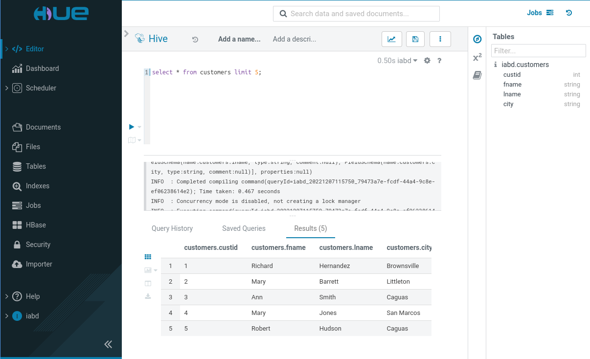

<!doctype html>
<html lang="es" class="no-js">
  <head>
    
      <meta charset="utf-8">
      <meta name="viewport" content="width=device-width,initial-scale=1">
      
        <meta name="description" content="Apuntes sobre Apache Hive, utilizando tanto tablas internas como externas, realizando joins entre diferentes archivos HDFS. Particionado y bucketing de los datos.">
      
      
      
        <link rel="canonical" href="https://aitor-medrano.github.io/iabd2223/hadoop/06hive.html">
      
      
        <link rel="prev" href="05flume.html">
      
      
        <link rel="next" href="../cloud/index.html">
      
      <link rel="icon" href="../images/favicon.png">
      <meta name="generator" content="mkdocs-1.4.2, mkdocs-material-9.1.3">
    
    
      
        <title>Apache Hive. Acceso a HDFS con un interfaz similar a tablas relacionales mediante SQL. - IABD</title>
      
    
    
      <link rel="stylesheet" href="../assets/stylesheets/main.c4a75a56.min.css">
      
        
        <link rel="stylesheet" href="../assets/stylesheets/palette.a0c5b2b5.min.css">
      
      

    
    
    
      
        
        
        <link rel="preconnect" href="https://fonts.gstatic.com" crossorigin>
        <link rel="stylesheet" href="https://fonts.googleapis.com/css?family=Roboto:300,300i,400,400i,700,700i%7CRoboto+Mono:400,400i,700,700i&display=fallback">
        <style>:root{--md-text-font:"Roboto";--md-code-font:"Roboto Mono"}</style>
      
    
    
      <link rel="stylesheet" href="../css/extra.css">
    
    <script>__md_scope=new URL("..",location),__md_hash=e=>[...e].reduce((e,_)=>(e<<5)-e+_.charCodeAt(0),0),__md_get=(e,_=localStorage,t=__md_scope)=>JSON.parse(_.getItem(t.pathname+"."+e)),__md_set=(e,_,t=localStorage,a=__md_scope)=>{try{t.setItem(a.pathname+"."+e,JSON.stringify(_))}catch(e){}}</script>
    
      
  


  
  


  <script id="__analytics">function __md_analytics(){function n(){dataLayer.push(arguments)}window.dataLayer=window.dataLayer||[],n("js",new Date),n("config","G-MFP4QLMMV7"),document.addEventListener("DOMContentLoaded",function(){document.forms.search&&document.forms.search.query.addEventListener("blur",function(){this.value&&n("event","search",{search_term:this.value})}),document$.subscribe(function(){var a=document.forms.feedback;if(void 0!==a)for(var e of a.querySelectorAll("[type=submit]"))e.addEventListener("click",function(e){e.preventDefault();var t=document.location.pathname,e=this.getAttribute("data-md-value");n("event","feedback",{page:t,data:e}),a.firstElementChild.disabled=!0;e=a.querySelector(".md-feedback__note [data-md-value='"+e+"']");e&&(e.hidden=!1)}),a.hidden=!1}),location$.subscribe(function(e){n("config","G-MFP4QLMMV7",{page_path:e.pathname})})});var e=document.createElement("script");e.async=!0,e.src="https://www.googletagmanager.com/gtag/js?id=G-MFP4QLMMV7",document.getElementById("__analytics").insertAdjacentElement("afterEnd",e)}</script>

  
    <script>var consent;"undefined"==typeof __md_analytics||(consent=__md_get("__consent"))&&consent.analytics&&__md_analytics()</script>
  

    
    
      
        <meta  property="og:type"  content="website" >
      
        <meta  property="og:title"  content="Apache Hive. Acceso a HDFS con un interfaz similar a tablas relacionales mediante SQL. - IABD" >
      
        <meta  property="og:description"  content="Apuntes sobre Apache Hive, utilizando tanto tablas internas como externas, realizando joins entre diferentes archivos HDFS. Particionado y bucketing de los datos." >
      
        <meta  property="og:image"  content="https://aitor-medrano.github.io/iabd2223/assets/images/social/hadoop/06hive.png" >
      
        <meta  property="og:image:type"  content="image/png" >
      
        <meta  property="og:image:width"  content="1200" >
      
        <meta  property="og:image:height"  content="630" >
      
        <meta  property="og:url"  content="https://aitor-medrano.github.io/iabd2223/hadoop/06hive.html" >
      
        <meta  name="twitter:card"  content="summary_large_image" >
      
        <meta  name="twitter:title"  content="Apache Hive. Acceso a HDFS con un interfaz similar a tablas relacionales mediante SQL. - IABD" >
      
        <meta  name="twitter:description"  content="Apuntes sobre Apache Hive, utilizando tanto tablas internas como externas, realizando joins entre diferentes archivos HDFS. Particionado y bucketing de los datos." >
      
        <meta  name="twitter:image"  content="https://aitor-medrano.github.io/iabd2223/assets/images/social/hadoop/06hive.png" >
      
    
    
  </head>
  
  
    
    
      
    
    
    
    
    <body dir="ltr" data-md-color-scheme="default" data-md-color-primary="indigo" data-md-color-accent="light-blue">
  
    
    
      <script>var palette=__md_get("__palette");if(palette&&"object"==typeof palette.color)for(var key of Object.keys(palette.color))document.body.setAttribute("data-md-color-"+key,palette.color[key])</script>
    
    <input class="md-toggle" data-md-toggle="drawer" type="checkbox" id="__drawer" autocomplete="off">
    <input class="md-toggle" data-md-toggle="search" type="checkbox" id="__search" autocomplete="off">
    <label class="md-overlay" for="__drawer"></label>
    <div data-md-component="skip">
      
        
        <a href="#hive" class="md-skip">
          Saltar a contenido
        </a>
      
    </div>
    <div data-md-component="announce">
      
    </div>
    
    
      

  

<header class="md-header md-header--shadow" data-md-component="header">
  <nav class="md-header__inner md-grid" aria-label="Cabecera">
    <a href="../index.html" title="IABD" class="md-header__button md-logo" aria-label="IABD" data-md-component="logo">
      
  

    </a>
    <label class="md-header__button md-icon" for="__drawer">
      <svg xmlns="http://www.w3.org/2000/svg" viewBox="0 0 24 24"><path d="M3 6h18v2H3V6m0 5h18v2H3v-2m0 5h18v2H3v-2Z"/></svg>
    </label>
    <div class="md-header__title" data-md-component="header-title">
      <div class="md-header__ellipsis">
        <div class="md-header__topic">
          <span class="md-ellipsis">
            IABD
          </span>
        </div>
        <div class="md-header__topic" data-md-component="header-topic">
          <span class="md-ellipsis">
            
              Apache Hive. Acceso a HDFS con un interfaz similar a tablas relacionales mediante SQL.
            
          </span>
        </div>
      </div>
    </div>
    
      <form class="md-header__option" data-md-component="palette">
        
          
          <input class="md-option" data-md-color-media="" data-md-color-scheme="default" data-md-color-primary="indigo" data-md-color-accent="light-blue"  aria-label="Cambiar a modo noche"  type="radio" name="__palette" id="__palette_1">
          
            <label class="md-header__button md-icon" title="Cambiar a modo noche" for="__palette_2" hidden>
              <svg xmlns="http://www.w3.org/2000/svg" viewBox="0 0 24 24"><path d="M17 6H7c-3.31 0-6 2.69-6 6s2.69 6 6 6h10c3.31 0 6-2.69 6-6s-2.69-6-6-6zm0 10H7c-2.21 0-4-1.79-4-4s1.79-4 4-4h10c2.21 0 4 1.79 4 4s-1.79 4-4 4zM7 9c-1.66 0-3 1.34-3 3s1.34 3 3 3 3-1.34 3-3-1.34-3-3-3z"/></svg>
            </label>
          
        
          
          <input class="md-option" data-md-color-media="" data-md-color-scheme="slate" data-md-color-primary="indigo" data-md-color-accent="light-blue"  aria-label="Cambiar a modo día"  type="radio" name="__palette" id="__palette_2">
          
            <label class="md-header__button md-icon" title="Cambiar a modo día" for="__palette_1" hidden>
              <svg xmlns="http://www.w3.org/2000/svg" viewBox="0 0 24 24"><path d="M17 7H7a5 5 0 0 0-5 5 5 5 0 0 0 5 5h10a5 5 0 0 0 5-5 5 5 0 0 0-5-5m0 8a3 3 0 0 1-3-3 3 3 0 0 1 3-3 3 3 0 0 1 3 3 3 3 0 0 1-3 3Z"/></svg>
            </label>
          
        
      </form>
    
    
    
      <label class="md-header__button md-icon" for="__search">
        <svg xmlns="http://www.w3.org/2000/svg" viewBox="0 0 24 24"><path d="M9.5 3A6.5 6.5 0 0 1 16 9.5c0 1.61-.59 3.09-1.56 4.23l.27.27h.79l5 5-1.5 1.5-5-5v-.79l-.27-.27A6.516 6.516 0 0 1 9.5 16 6.5 6.5 0 0 1 3 9.5 6.5 6.5 0 0 1 9.5 3m0 2C7 5 5 7 5 9.5S7 14 9.5 14 14 12 14 9.5 12 5 9.5 5Z"/></svg>
      </label>
      <div class="md-search" data-md-component="search" role="dialog">
  <label class="md-search__overlay" for="__search"></label>
  <div class="md-search__inner" role="search">
    <form class="md-search__form" name="search">
      <input type="text" class="md-search__input" name="query" aria-label="Búsqueda" placeholder="Búsqueda" autocapitalize="off" autocorrect="off" autocomplete="off" spellcheck="false" data-md-component="search-query" required>
      <label class="md-search__icon md-icon" for="__search">
        <svg xmlns="http://www.w3.org/2000/svg" viewBox="0 0 24 24"><path d="M9.5 3A6.5 6.5 0 0 1 16 9.5c0 1.61-.59 3.09-1.56 4.23l.27.27h.79l5 5-1.5 1.5-5-5v-.79l-.27-.27A6.516 6.516 0 0 1 9.5 16 6.5 6.5 0 0 1 3 9.5 6.5 6.5 0 0 1 9.5 3m0 2C7 5 5 7 5 9.5S7 14 9.5 14 14 12 14 9.5 12 5 9.5 5Z"/></svg>
        <svg xmlns="http://www.w3.org/2000/svg" viewBox="0 0 24 24"><path d="M20 11v2H8l5.5 5.5-1.42 1.42L4.16 12l7.92-7.92L13.5 5.5 8 11h12Z"/></svg>
      </label>
      <nav class="md-search__options" aria-label="Buscar">
        
        <button type="reset" class="md-search__icon md-icon" title="Limpiar" aria-label="Limpiar" tabindex="-1">
          <svg xmlns="http://www.w3.org/2000/svg" viewBox="0 0 24 24"><path d="M19 6.41 17.59 5 12 10.59 6.41 5 5 6.41 10.59 12 5 17.59 6.41 19 12 13.41 17.59 19 19 17.59 13.41 12 19 6.41Z"/></svg>
        </button>
      </nav>
      
    </form>
    <div class="md-search__output">
      <div class="md-search__scrollwrap" data-md-scrollfix>
        <div class="md-search-result" data-md-component="search-result">
          <div class="md-search-result__meta">
            Inicializando búsqueda
          </div>
          <ol class="md-search-result__list" role="presentation"></ol>
        </div>
      </div>
    </div>
  </div>
</div>
    
    
  </nav>
  
</header>
    
    <div class="md-container" data-md-component="container">
      
      
        
          
        
      
      <main class="md-main" data-md-component="main">
        <div class="md-main__inner md-grid">
          
            
              
              <div class="md-sidebar md-sidebar--primary" data-md-component="sidebar" data-md-type="navigation" >
                <div class="md-sidebar__scrollwrap">
                  <div class="md-sidebar__inner">
                    


<nav class="md-nav md-nav--primary" aria-label="Navegación" data-md-level="0">
  <label class="md-nav__title" for="__drawer">
    <a href="../index.html" title="IABD" class="md-nav__button md-logo" aria-label="IABD" data-md-component="logo">
      
  

    </a>
    IABD
  </label>
  
  <ul class="md-nav__list" data-md-scrollfix>
    
      
      
      

  
  
  
    <li class="md-nav__item">
      <a href="../index.html" class="md-nav__link">
        Inicio
      </a>
    </li>
  

    
      
      
      

  
  
  
    
    <li class="md-nav__item md-nav__item--nested">
      
      
      
      
      <input class="md-nav__toggle md-toggle " type="checkbox" id="__nav_2" >
      
      
        
          
            
          
        
          
        
          
        
          
        
          
        
          
        
          
        
      
      
        
        
        <div class="md-nav__link md-nav__link--index ">
          <a href="../sa/index.html">Sistemas de almacenamiento</a>
          
            <label for="__nav_2">
              <span class="md-nav__icon md-icon"></span>
            </label>
          
        </div>
      
      <nav class="md-nav" data-md-level="1" aria-labelledby="__nav_2_label" aria-expanded="false">
        <label class="md-nav__title" for="__nav_2">
          <span class="md-nav__icon md-icon"></span>
          Sistemas de almacenamiento
        </label>
        <ul class="md-nav__list" data-md-scrollfix>
          
            
          
            
              
  
  
  
    <li class="md-nav__item">
      <a href="../sa/01nosql.html" class="md-nav__link">
        Almacenamiento de datos. NoSQL
      </a>
    </li>
  

            
          
            
              
  
  
  
    <li class="md-nav__item">
      <a href="../sa/02mongo.html" class="md-nav__link">
        MongoDB
      </a>
    </li>
  

            
          
            
              
  
  
  
    <li class="md-nav__item">
      <a href="../sa/03modelado.html" class="md-nav__link">
        Modelado de datos NoSQL
      </a>
    </li>
  

            
          
            
              
  
  
  
    <li class="md-nav__item">
      <a href="../sa/05agregaciones.html" class="md-nav__link">
        Agregaciones
      </a>
    </li>
  

            
          
            
              
  
  
  
    <li class="md-nav__item">
      <a href="../sa/06replicacion.html" class="md-nav__link">
        Replicación y Particionado
      </a>
    </li>
  

            
          
            
              
  
  
  
    <li class="md-nav__item">
      <a href="../sa/07pymongo.html" class="md-nav__link">
        MongoDB y Python
      </a>
    </li>
  

            
          
        </ul>
      </nav>
    </li>
  

    
      
      
      

  
  
    
  
  
    
    <li class="md-nav__item md-nav__item--active md-nav__item--nested">
      
      
      
      
      <input class="md-nav__toggle md-toggle " type="checkbox" id="__nav_3" checked>
      
      
        
          
            
          
        
          
        
          
        
          
        
          
        
          
        
          
        
          
        
      
      
        
        
        <div class="md-nav__link md-nav__link--index ">
          <a href="index.html">Ecosistema Hadoop</a>
          
            <label for="__nav_3">
              <span class="md-nav__icon md-icon"></span>
            </label>
          
        </div>
      
      <nav class="md-nav" data-md-level="1" aria-labelledby="__nav_3_label" aria-expanded="true">
        <label class="md-nav__title" for="__nav_3">
          <span class="md-nav__icon md-icon"></span>
          Ecosistema Hadoop
        </label>
        <ul class="md-nav__list" data-md-scrollfix>
          
            
          
            
              
  
  
  
    <li class="md-nav__item">
      <a href="01arq.html" class="md-nav__link">
        Arquitecturas Big Data
      </a>
    </li>
  

            
          
            
              
  
  
  
    <li class="md-nav__item">
      <a href="02etl.html" class="md-nav__link">
        Ingesta de datos
      </a>
    </li>
  

            
          
            
              
  
  
  
    <li class="md-nav__item">
      <a href="03hadoop.html" class="md-nav__link">
        Hadoop
      </a>
    </li>
  

            
          
            
              
  
  
  
    <li class="md-nav__item">
      <a href="04hdfs.html" class="md-nav__link">
        HDFS
      </a>
    </li>
  

            
          
            
              
  
  
  
    <li class="md-nav__item">
      <a href="04formatos.html" class="md-nav__link">
        Formatos de datos
      </a>
    </li>
  

            
          
            
              
  
  
  
    <li class="md-nav__item">
      <a href="05flume.html" class="md-nav__link">
        Sqoop y Flume
      </a>
    </li>
  

            
          
            
              
  
  
    
  
  
    <li class="md-nav__item md-nav__item--active">
      
      <input class="md-nav__toggle md-toggle" type="checkbox" id="__toc">
      
      
        
      
      
        <label class="md-nav__link md-nav__link--active" for="__toc">
          Hive
          <span class="md-nav__icon md-icon"></span>
        </label>
      
      <a href="06hive.html" class="md-nav__link md-nav__link--active">
        Hive
      </a>
      
        

<nav class="md-nav md-nav--secondary" aria-label="Tabla de contenidos">
  
  
  
    
  
  
    <label class="md-nav__title" for="__toc">
      <span class="md-nav__icon md-icon"></span>
      Tabla de contenidos
    </label>
    <ul class="md-nav__list" data-md-component="toc" data-md-scrollfix>
      
        <li class="md-nav__item">
  <a href="#hive-y-hadoop" class="md-nav__link">
    Hive y Hadoop
  </a>
  
    <nav class="md-nav" aria-label="Hive y Hadoop">
      <ul class="md-nav__list">
        
          <li class="md-nav__item">
  <a href="#caracteristicas" class="md-nav__link">
    Características
  </a>
  
</li>
        
          <li class="md-nav__item">
  <a href="#componentes" class="md-nav__link">
    Componentes
  </a>
  
</li>
        
          <li class="md-nav__item">
  <a href="#tipos-de-datos" class="md-nav__link">
    Tipos de datos
  </a>
  
</li>
        
      </ul>
    </nav>
  
</li>
      
        <li class="md-nav__item">
  <a href="#instalacion-y-configuracion" class="md-nav__link">
    Instalación y configuración
  </a>
  
</li>
      
        <li class="md-nav__item">
  <a href="#hola-mundo" class="md-nav__link">
    Hola Mundo
  </a>
  
    <nav class="md-nav" aria-label="Hola Mundo">
      <ul class="md-nav__list">
        
          <li class="md-nav__item">
  <a href="#acceso-remoto" class="md-nav__link">
    Acceso remoto
  </a>
  
</li>
        
      </ul>
    </nav>
  
</li>
      
        <li class="md-nav__item">
  <a href="#caso-de-uso-1-creacion-y-borrado-de-tablas" class="md-nav__link">
    Caso de uso 1: Creación y borrado de tablas
  </a>
  
</li>
      
        <li class="md-nav__item">
  <a href="#caso-de-uso-2-insertando-datos" class="md-nav__link">
    Caso de uso 2: Insertando datos
  </a>
  
    <nav class="md-nav" aria-label="Caso de uso 2: Insertando datos">
      <ul class="md-nav__list">
        
          <li class="md-nav__item">
  <a href="#cargando-datos" class="md-nav__link">
    Cargando datos
  </a>
  
</li>
        
          <li class="md-nav__item">
  <a href="#insertando-datos" class="md-nav__link">
    Insertando datos
  </a>
  
</li>
        
          <li class="md-nav__item">
  <a href="#modificando-datos" class="md-nav__link">
    Modificando datos
  </a>
  
</li>
        
          <li class="md-nav__item">
  <a href="#ingestando-datos" class="md-nav__link">
    Ingestando datos
  </a>
  
</li>
        
          <li class="md-nav__item">
  <a href="#extrayendo-datos-insertados" class="md-nav__link">
    Extrayendo datos insertados
  </a>
  
</li>
        
      </ul>
    </nav>
  
</li>
      
        <li class="md-nav__item">
  <a href="#caso-de-uso-3-consultas-con-join" class="md-nav__link">
    Caso de uso 3: Consultas con join
  </a>
  
    <nav class="md-nav" aria-label="Caso de uso 3: Consultas con join">
      <ul class="md-nav__list">
        
          <li class="md-nav__item">
  <a href="#outer-join" class="md-nav__link">
    Outer join
  </a>
  
</li>
        
          <li class="md-nav__item">
  <a href="#semi-joins" class="md-nav__link">
    Semi-joins
  </a>
  
</li>
        
          <li class="md-nav__item">
  <a href="#map-joins" class="md-nav__link">
    Map joins
  </a>
  
</li>
        
      </ul>
    </nav>
  
</li>
      
        <li class="md-nav__item">
  <a href="#comandos" class="md-nav__link">
    Comandos
  </a>
  
</li>
      
        <li class="md-nav__item">
  <a href="#caso-de-uso-4-tabla-interna" class="md-nav__link">
    Caso de uso 4: Tabla interna
  </a>
  
    <nav class="md-nav" aria-label="Caso de uso 4: Tabla interna">
      <ul class="md-nav__list">
        
          <li class="md-nav__item">
  <a href="#consultando-datos-compuestos" class="md-nav__link">
    Consultando datos compuestos
  </a>
  
</li>
        
      </ul>
    </nav>
  
</li>
      
        <li class="md-nav__item">
  <a href="#caso-de-uso-5-tabla-externa" class="md-nav__link">
    Caso de uso 5: Tabla externa
  </a>
  
</li>
      
        <li class="md-nav__item">
  <a href="#estructuras-de-datos-en-hive" class="md-nav__link">
    Estructuras de datos en Hive
  </a>
  
    <nav class="md-nav" aria-label="Estructuras de datos en Hive">
      <ul class="md-nav__list">
        
          <li class="md-nav__item">
  <a href="#particiones" class="md-nav__link">
    Particiones
  </a>
  
</li>
        
          <li class="md-nav__item">
  <a href="#buckets" class="md-nav__link">
    Buckets
  </a>
  
</li>
        
          <li class="md-nav__item">
  <a href="#resumen" class="md-nav__link">
    Resumen
  </a>
  
</li>
        
      </ul>
    </nav>
  
</li>
      
        <li class="md-nav__item">
  <a href="#caso-de-uso-6-particionado-y-bucketing" class="md-nav__link">
    Caso de uso 6: Particionado y Bucketing
  </a>
  
</li>
      
        <li class="md-nav__item">
  <a href="#funciones-ventana" class="md-nav__link">
    Funciones ventana
  </a>
  
    <nav class="md-nav" aria-label="Funciones ventana">
      <ul class="md-nav__list">
        
          <li class="md-nav__item">
  <a href="#consultas-con-enteros-que-cuentanordenan" class="md-nav__link">
    Consultas con enteros que cuentan/ordenan
  </a>
  
</li>
        
          <li class="md-nav__item">
  <a href="#consultas-por-posicion" class="md-nav__link">
    Consultas por posición
  </a>
  
</li>
        
          <li class="md-nav__item">
  <a href="#consultas-de-agregacion" class="md-nav__link">
    Consultas de agregación
  </a>
  
</li>
        
      </ul>
    </nav>
  
</li>
      
        <li class="md-nav__item">
  <a href="#referencias" class="md-nav__link">
    Referencias
  </a>
  
</li>
      
        <li class="md-nav__item">
  <a href="#actividades" class="md-nav__link">
    Actividades
  </a>
  
</li>
      
    </ul>
  
</nav>
      
    </li>
  

            
          
        </ul>
      </nav>
    </li>
  

    
      
      
      

  
  
  
    
    <li class="md-nav__item md-nav__item--nested">
      
      
      
      
      <input class="md-nav__toggle md-toggle " type="checkbox" id="__nav_4" >
      
      
        
          
            
          
        
          
        
          
        
          
        
          
        
          
        
          
        
          
        
      
      
        
        
        <div class="md-nav__link md-nav__link--index ">
          <a href="../cloud/index.html">Datos en el cloud</a>
          
            <label for="__nav_4">
              <span class="md-nav__icon md-icon"></span>
            </label>
          
        </div>
      
      <nav class="md-nav" data-md-level="1" aria-labelledby="__nav_4_label" aria-expanded="false">
        <label class="md-nav__title" for="__nav_4">
          <span class="md-nav__icon md-icon"></span>
          Datos en el cloud
        </label>
        <ul class="md-nav__list" data-md-scrollfix>
          
            
          
            
              
  
  
  
    <li class="md-nav__item">
      <a href="../cloud/01cloud.html" class="md-nav__link">
        Cloud
      </a>
    </li>
  

            
          
            
              
  
  
  
    <li class="md-nav__item">
      <a href="../cloud/02aws.html" class="md-nav__link">
        AWS
      </a>
    </li>
  

            
          
            
              
  
  
  
    <li class="md-nav__item">
      <a href="../cloud/03s3.html" class="md-nav__link">
        S3
      </a>
    </li>
  

            
          
            
              
  
  
  
    <li class="md-nav__item">
      <a href="../cloud/04computacion.html" class="md-nav__link">
        EC2
      </a>
    </li>
  

            
          
            
              
  
  
  
    <li class="md-nav__item">
      <a href="../cloud/05emr.html" class="md-nav__link">
        EMR
      </a>
    </li>
  

            
          
            
              
  
  
  
    <li class="md-nav__item">
      <a href="../cloud/06datos.html" class="md-nav__link">
        RDS y DynamoDB
      </a>
    </li>
  

            
          
            
              
  
  
  
    <li class="md-nav__item">
      <a href="../cloud/07athena.html" class="md-nav__link">
        Athena
      </a>
    </li>
  

            
          
        </ul>
      </nav>
    </li>
  

    
      
      
      

  
  
  
    
    <li class="md-nav__item md-nav__item--nested">
      
      
      
      
      <input class="md-nav__toggle md-toggle " type="checkbox" id="__nav_5" >
      
      
        
          
            
          
        
          
        
          
        
          
        
          
        
          
        
          
        
          
        
      
      
        
        
        <div class="md-nav__link md-nav__link--index ">
          <a href="../spark/index.html">Spark</a>
          
            <label for="__nav_5">
              <span class="md-nav__icon md-icon"></span>
            </label>
          
        </div>
      
      <nav class="md-nav" data-md-level="1" aria-labelledby="__nav_5_label" aria-expanded="false">
        <label class="md-nav__title" for="__nav_5">
          <span class="md-nav__icon md-icon"></span>
          Spark
        </label>
        <ul class="md-nav__list" data-md-scrollfix>
          
            
          
            
              
  
  
  
    <li class="md-nav__item">
      <a href="../spark/01spark.html" class="md-nav__link">
        Ecosistema
      </a>
    </li>
  

            
          
            
              
  
  
  
    <li class="md-nav__item">
      <a href="../spark/01rdd.html" class="md-nav__link">
        RDD
      </a>
    </li>
  

            
          
            
              
  
  
  
    <li class="md-nav__item">
      <a href="../spark/02dataframeAPI.html" class="md-nav__link">
        DataFrames API
      </a>
    </li>
  

            
          
            
              
  
  
  
    <li class="md-nav__item">
      <a href="../spark/02agregaciones.html" class="md-nav__link">
        Agregaciones
      </a>
    </li>
  

            
          
            
              
  
  
  
    <li class="md-nav__item">
      <a href="../spark/02catalog.html" class="md-nav__link">
        Spark Catalog
      </a>
    </li>
  

            
          
            
              
  
  
  
    <li class="md-nav__item">
      <a href="../spark/03streaming.html" class="md-nav__link">
        Streaming I
      </a>
    </li>
  

            
          
            
              
  
  
  
    <li class="md-nav__item">
      <a href="../spark/03join-window.html" class="md-nav__link">
        Streaming II
      </a>
    </li>
  

            
          
        </ul>
      </nav>
    </li>
  

    
      
      
      

  
  
  
    
    <li class="md-nav__item md-nav__item--nested">
      
      
      
      
      <input class="md-nav__toggle md-toggle " type="checkbox" id="__nav_6" >
      
      
        
          
            
          
        
          
        
          
        
          
        
          
        
      
      
        
        
        <div class="md-nav__link md-nav__link--index ">
          <a href="../dataflow/index.html">Flujo de datos</a>
          
            <label for="__nav_6">
              <span class="md-nav__icon md-icon"></span>
            </label>
          
        </div>
      
      <nav class="md-nav" data-md-level="1" aria-labelledby="__nav_6_label" aria-expanded="false">
        <label class="md-nav__title" for="__nav_6">
          <span class="md-nav__icon md-icon"></span>
          Flujo de datos
        </label>
        <ul class="md-nav__list" data-md-scrollfix>
          
            
          
            
              
  
  
  
    <li class="md-nav__item">
      <a href="../dataflow/04nifi1.html" class="md-nav__link">
        Nifi I
      </a>
    </li>
  

            
          
            
              
  
  
  
    <li class="md-nav__item">
      <a href="../dataflow/05nifi2.html" class="md-nav__link">
        Nifi II
      </a>
    </li>
  

            
          
            
              
  
  
  
    <li class="md-nav__item">
      <a href="../dataflow/02kafka.html" class="md-nav__link">
        Kafka I
      </a>
    </li>
  

            
          
            
              
  
  
  
    <li class="md-nav__item">
      <a href="../dataflow/03kafka.html" class="md-nav__link">
        Kafka II
      </a>
    </li>
  

            
          
        </ul>
      </nav>
    </li>
  

    
      
      
      

  
  
  
    <li class="md-nav__item">
      <a href="https://aitor-medrano.github.io/pia2223/" class="md-nav__link">
        PIA FP
      </a>
    </li>
  

    
  </ul>
</nav>
                  </div>
                </div>
              </div>
            
            
              
              <div class="md-sidebar md-sidebar--secondary" data-md-component="sidebar" data-md-type="toc" >
                <div class="md-sidebar__scrollwrap">
                  <div class="md-sidebar__inner">
                    

<nav class="md-nav md-nav--secondary" aria-label="Tabla de contenidos">
  
  
  
    
  
  
    <label class="md-nav__title" for="__toc">
      <span class="md-nav__icon md-icon"></span>
      Tabla de contenidos
    </label>
    <ul class="md-nav__list" data-md-component="toc" data-md-scrollfix>
      
        <li class="md-nav__item">
  <a href="#hive-y-hadoop" class="md-nav__link">
    Hive y Hadoop
  </a>
  
    <nav class="md-nav" aria-label="Hive y Hadoop">
      <ul class="md-nav__list">
        
          <li class="md-nav__item">
  <a href="#caracteristicas" class="md-nav__link">
    Características
  </a>
  
</li>
        
          <li class="md-nav__item">
  <a href="#componentes" class="md-nav__link">
    Componentes
  </a>
  
</li>
        
          <li class="md-nav__item">
  <a href="#tipos-de-datos" class="md-nav__link">
    Tipos de datos
  </a>
  
</li>
        
      </ul>
    </nav>
  
</li>
      
        <li class="md-nav__item">
  <a href="#instalacion-y-configuracion" class="md-nav__link">
    Instalación y configuración
  </a>
  
</li>
      
        <li class="md-nav__item">
  <a href="#hola-mundo" class="md-nav__link">
    Hola Mundo
  </a>
  
    <nav class="md-nav" aria-label="Hola Mundo">
      <ul class="md-nav__list">
        
          <li class="md-nav__item">
  <a href="#acceso-remoto" class="md-nav__link">
    Acceso remoto
  </a>
  
</li>
        
      </ul>
    </nav>
  
</li>
      
        <li class="md-nav__item">
  <a href="#caso-de-uso-1-creacion-y-borrado-de-tablas" class="md-nav__link">
    Caso de uso 1: Creación y borrado de tablas
  </a>
  
</li>
      
        <li class="md-nav__item">
  <a href="#caso-de-uso-2-insertando-datos" class="md-nav__link">
    Caso de uso 2: Insertando datos
  </a>
  
    <nav class="md-nav" aria-label="Caso de uso 2: Insertando datos">
      <ul class="md-nav__list">
        
          <li class="md-nav__item">
  <a href="#cargando-datos" class="md-nav__link">
    Cargando datos
  </a>
  
</li>
        
          <li class="md-nav__item">
  <a href="#insertando-datos" class="md-nav__link">
    Insertando datos
  </a>
  
</li>
        
          <li class="md-nav__item">
  <a href="#modificando-datos" class="md-nav__link">
    Modificando datos
  </a>
  
</li>
        
          <li class="md-nav__item">
  <a href="#ingestando-datos" class="md-nav__link">
    Ingestando datos
  </a>
  
</li>
        
          <li class="md-nav__item">
  <a href="#extrayendo-datos-insertados" class="md-nav__link">
    Extrayendo datos insertados
  </a>
  
</li>
        
      </ul>
    </nav>
  
</li>
      
        <li class="md-nav__item">
  <a href="#caso-de-uso-3-consultas-con-join" class="md-nav__link">
    Caso de uso 3: Consultas con join
  </a>
  
    <nav class="md-nav" aria-label="Caso de uso 3: Consultas con join">
      <ul class="md-nav__list">
        
          <li class="md-nav__item">
  <a href="#outer-join" class="md-nav__link">
    Outer join
  </a>
  
</li>
        
          <li class="md-nav__item">
  <a href="#semi-joins" class="md-nav__link">
    Semi-joins
  </a>
  
</li>
        
          <li class="md-nav__item">
  <a href="#map-joins" class="md-nav__link">
    Map joins
  </a>
  
</li>
        
      </ul>
    </nav>
  
</li>
      
        <li class="md-nav__item">
  <a href="#comandos" class="md-nav__link">
    Comandos
  </a>
  
</li>
      
        <li class="md-nav__item">
  <a href="#caso-de-uso-4-tabla-interna" class="md-nav__link">
    Caso de uso 4: Tabla interna
  </a>
  
    <nav class="md-nav" aria-label="Caso de uso 4: Tabla interna">
      <ul class="md-nav__list">
        
          <li class="md-nav__item">
  <a href="#consultando-datos-compuestos" class="md-nav__link">
    Consultando datos compuestos
  </a>
  
</li>
        
      </ul>
    </nav>
  
</li>
      
        <li class="md-nav__item">
  <a href="#caso-de-uso-5-tabla-externa" class="md-nav__link">
    Caso de uso 5: Tabla externa
  </a>
  
</li>
      
        <li class="md-nav__item">
  <a href="#estructuras-de-datos-en-hive" class="md-nav__link">
    Estructuras de datos en Hive
  </a>
  
    <nav class="md-nav" aria-label="Estructuras de datos en Hive">
      <ul class="md-nav__list">
        
          <li class="md-nav__item">
  <a href="#particiones" class="md-nav__link">
    Particiones
  </a>
  
</li>
        
          <li class="md-nav__item">
  <a href="#buckets" class="md-nav__link">
    Buckets
  </a>
  
</li>
        
          <li class="md-nav__item">
  <a href="#resumen" class="md-nav__link">
    Resumen
  </a>
  
</li>
        
      </ul>
    </nav>
  
</li>
      
        <li class="md-nav__item">
  <a href="#caso-de-uso-6-particionado-y-bucketing" class="md-nav__link">
    Caso de uso 6: Particionado y Bucketing
  </a>
  
</li>
      
        <li class="md-nav__item">
  <a href="#funciones-ventana" class="md-nav__link">
    Funciones ventana
  </a>
  
    <nav class="md-nav" aria-label="Funciones ventana">
      <ul class="md-nav__list">
        
          <li class="md-nav__item">
  <a href="#consultas-con-enteros-que-cuentanordenan" class="md-nav__link">
    Consultas con enteros que cuentan/ordenan
  </a>
  
</li>
        
          <li class="md-nav__item">
  <a href="#consultas-por-posicion" class="md-nav__link">
    Consultas por posición
  </a>
  
</li>
        
          <li class="md-nav__item">
  <a href="#consultas-de-agregacion" class="md-nav__link">
    Consultas de agregación
  </a>
  
</li>
        
      </ul>
    </nav>
  
</li>
      
        <li class="md-nav__item">
  <a href="#referencias" class="md-nav__link">
    Referencias
  </a>
  
</li>
      
        <li class="md-nav__item">
  <a href="#actividades" class="md-nav__link">
    Actividades
  </a>
  
</li>
      
    </ul>
  
</nav>
                  </div>
                </div>
              </div>
            
          
          
            <div class="md-content" data-md-component="content">
              <article class="md-content__inner md-typeset">
                
                  


<h1 id="hive">Hive<a class="headerlink" href="#hive" title="Permanent link">&para;</a></h1>
<p><em>Apache Hive</em> (<a href="https://hive.apache.org/">https://hive.apache.org/</a>) es una tecnología distribuida diseñada y construida sobre un clúster de <em>Hadoop</em>. Permite leer, escribir y gestionar grandes <em>datasets</em> (con escala de petabytes) que residen en HDFS haciendo uso de un lenguaje dialecto de SQL, conocido como <em>HiveSQL</em>, lo que simplifica mucho el desarrollo y la gestión de <em>Hadoop</em>.</p>
<figure style="float: right;">
    
    <figcaption>Logo de Apache Hive</figcaption>
</figure>

<p>El proyecto lo inició <em>Facebook</em> para conseguir que la interacción con <em>Hadoop</em> fuera similar a la que se realiza con un <em>datawarehouse</em> tradicional. La tecnología <em>Hadoop</em> es altamente escalable, aunque hay que destacar su dificultad de uso y que está orientado únicamente a operaciones <em>batch</em>, con lo que no soporta el acceso aleatorio ni está optimizado para ficheros pequeños.</p>
<h2 id="hive-y-hadoop">Hive y Hadoop<a class="headerlink" href="#hive-y-hadoop" title="Permanent link">&para;</a></h2>
<p>Si volvemos a ver como casa <em>Hive</em> dentro del ecosistema de <em>Hadoop</em>, <em>Hive</em> es una fachada construida sobre Hadoop que permite acceder a los datos almacenados en HDFS de forma muy sencilla sin necesidad de conocer <em>Java</em>, <em>Map Reduce</em> u otras tecnologías.</p>
<p>Aunque en principio estaba diseñado para el procesamiento <em>batch</em>, ahora se integra con frameworks en <em>streaming</em> como <em>Tez</em> y <em>Spark</em>.</p>
<figure style="align: center;">
    
    <figcaption>Ecosistema Hadoop</figcaption>
</figure>

<h3 id="caracteristicas">Características<a class="headerlink" href="#caracteristicas" title="Permanent link">&para;</a></h3>
<p><em>Hive</em> impone una estructura sobre los datos almacenados en HDFS. Esta estructura se conoce como <strong><em>Schema</em></strong>, y <em>Hive</em> la almacena en su propia base de datos (<em>metastore</em>). Gracias a ella, optimiza de forma automática el plan de ejecución y usa particionado de tablas en determinadas consultas. También soporta diferentes formatos de ficheros, codificaciones y fuentes de datos como <em>HBase</em>.</p>
<p>Para interactuar con <em>Hive</em> utilizaremos <em>HiveQL</em>, el cual es un dialecto de <em>SQL</em> (recuerda que <em>SQL</em> no es sensible a las mayúsculas, excepto en la comparación de cadenas).</p>
<p><em>Hive</em> amplía el paradigma de <em>SQL</em> incluyendo formatos de serialización. También podemos personalizar el procesamiento de consultas creando un esquema de tabla acorde con nuestros datos, pero sin tocar los datos. Aunque SQL solo es compatible con tipos de valor primitivos (como fechas, números y cadenas), los valores de las tablas de <em>Hive</em> son elementos estructurados, por ejemplo, objetos JSON o cualquier tipo de datos definido por el usuario o cualquier función escrita en Java.</p>
<p>Una consulta típica en <em>Hive</em> se ejecuta en varios <em>datanodes</em> en paralelo, con varios trabajos <em>MapReduce</em> asociados. Estas operaciones son de tipo <em>batch</em>, por lo que la latencia es más alta que en otros tipos de bases de datos. Además, hay que considerar el retardo producido por la inicialización de los trabajos, sobre todo en el caso de consultar pequeños <em>datasets</em>.</p>
<h4 id="ventajas">Ventajas<a class="headerlink" href="#ventajas" title="Permanent link">&para;</a></h4>
<p>Las ventajas de utilizar <em>Hive</em> son:</p>
<ul>
<li>Reduce la complejidad de la programación <em>MapReduce</em> al usar <em>HiveQL</em> como lenguaje de consulta.</li>
<li>Está orientado a aplicaciones de tipo <em>Data Warehouse</em>, con datos estáticos, poco cambiantes y sin requisitos de tiempos de respuesta rápidos.</li>
<li>Permite a los usuarios despreocuparse de en qué formato y dónde se almacenan los datos.</li>
<li>Incorpora <em>Beeline</em>: una herramienta por línea de comandos para realizar consultas con <em>HiveQL</em>.</li>
</ul>
<p>En cambio, <em>Hive</em> no es la mejor opción para consultas en tiempo real o de tipo transaccional. Además, no está diseñado para usarse con actualizaciones de valores al nivel de registro, y el soporte de SQL es limitado.</p>
<h4 id="alternativas">Alternativas<a class="headerlink" href="#alternativas" title="Permanent link">&para;</a></h4>
<p>Una de las alternativas más populares es <a href="https://impala.apache.org/">Apache Impala</a>, originalmente creado por Cloudera, el cual utiliza un demonio dedicado en cada <em>datanode</em> del clúster, de manera que hay un coordinador que reenvía a cada <em>datanode</em> la consulta a realizar y luego se encarga de unir los datos en el resultado final. <em>Impala</em> utiliza el <em>metastore</em> de <em>Hive</em> y soporta la mayoría de construcciones de <em>Hive</em>, con lo que la migración de un sistema a otro es sencilla.</p>
<p>En lugar de utilizar MapReduce, aprovecha un motor de procesamiento masivo en paralelo (MPP) como el que existe en los sistemas gestores de bases de datos relacionales (RDBMS). Esta arquitectura hace que Impala sea adecuado para análisis interactivos y de baja latencia.</p>
<!--
https://aws.amazon.com/es/emr/faqs/#Using_Impala
-->

<p>Otras alternativas <em>open source</em> son :</p>
<ul>
<li><a href="http://prestodb.io/">Presto de Facebook</a> y <a href="http://drill.apache.org/">Apache Drill</a>, con arquitecturas muy similares a <em>Impala</em>.</li>
<li><a href="https://spark.apache.org/sql/">Spark SQL</a>: utiliza <em>Spark</em> como motor de ejecución y permite utilizar consultas SQL embebidas. La estudiaremos en sesiones futuras.</li>
</ul>
<div class="admonition info">
<p class="admonition-title">Pig</p>
<p><a href="https://pig.apache.org">Apache Pig</a> es una herramienta que abstrae el acceso a <em>MapReduce</em> de forma similar a como lo realiza <em>Hive</em>, pero en vez de SQL, utiliza su propio lenguaje de <em>scripting</em> (<em>PigLatin</em>) para expresar los flujos de datos.
Actualmente ha perdido uso en detrimento de <em>Hive</em>/<em>Impala</em> y de <em>Spark</em>.</p>
<p>Tenéis una pequeña introducción en <a href="https://www.analyticsvidhya.com/blog/2021/08/an-introduction-to-apache-pig-for-absolute-beginners/">https://www.analyticsvidhya.com/blog/2021/08/an-introduction-to-apache-pig-for-absolute-beginners/</a>.</p>
</div>
<h3 id="componentes">Componentes<a class="headerlink" href="#componentes" title="Permanent link">&para;</a></h3>
<p>A continuación podemos ver un gráfico que relaciona los diferentes componentes de <em>Hive</em> y define su arquitectura:</p>
<figure style="align: center;">
    
    <figcaption>Arquitectura de Apache Hive</figcaption>
</figure>

<h4 id="hive-server">Hive Server<a class="headerlink" href="#hive-server" title="Permanent link">&para;</a></h4>
<p><em>HiveServer 2</em> (HS2) es la última versión del servicio. Se compone de una interfaz que permite a clientes externos ejecutar consultas contra <em>Apache Hive</em> y obtener los resultados. Está basado en <em>Thrift RPC</em> y soporta clientes concurrentes. Para arrancar el servidor, ejecutaremos el comando <code>hiveserver2</code>, el cual quedará a la escucha en el puerto <code>10000</code>.</p>
<div class="highlight"><pre><span></span><code><span class="linenos" data-linenos="1 "></span>iabd@iabd-virtualbox:~$<span class="w"> </span>hiveserver2
<span class="linenos" data-linenos="2 "></span><span class="m">2023</span>-01-20<span class="w"> </span><span class="m">09</span>:39:51:<span class="w"> </span>Starting<span class="w"> </span>HiveServer2
<span class="linenos" data-linenos="3 "></span>SLF4J:<span class="w"> </span>Class<span class="w"> </span>path<span class="w"> </span>contains<span class="w"> </span>multiple<span class="w"> </span>SLF4J<span class="w"> </span>bindings.
<span class="linenos" data-linenos="4 "></span>SLF4J:<span class="w"> </span>...
<span class="linenos" data-linenos="5 "></span>Hive<span class="w"> </span>Session<span class="w"> </span><span class="nv">ID</span><span class="w"> </span><span class="o">=</span><span class="w"> </span>9e39b0c8-45a6-46ca-bfb0-6e320c85f989
</code></pre></div>
<p>A este servidor nos conectaremos mediante la herramienta <em>Beeline</em> (Beeline CLI).</p>
<h4 id="hive-metastore">Hive Metastore<a class="headerlink" href="#hive-metastore" title="Permanent link">&para;</a></h4>
<p>Es el repositorio central para los metadatos de <em>Hive</em>, y se almacena en una base de datos relacional como <em>MySQL</em>, <em>PostgreSQL</em> o <em>Apache Derby</em> (embebida). Mantiene los metadatos, las tablas y sus tipos mediante <em>Hive DDL</em> (<em>Data Definition Language</em>). Además, el sistema se puede configurar para que también almacene estadísticas de las operaciones y registros de autorización para optimizar las consultas.</p>
<p>En las últimas versiones de <em>Hive</em>, este componente se puede desplegar de forma remota e independiente, para no compartir la misma JVM con <em>HiveServer</em>. Dentro del <em>metastore</em> podemos encontrar el <em>Hive Catalog</em> (<em>HCatalog</em>), que permite acceder a sus metadatos, actuando como una API. Al poder desplegarse de forma aislada e independiente, permite que otras aplicaciones hagan uso del <em>schema</em> sin tener que desplegar el motor de consultas de Hive. En la sesión de <a href="../spark/02catalog.html"><em>Spark Catalog</em></a>, veremos cómo desde una herramienta externa a <em>Hive</em>, se accede y utilizan los metadatos almacenados.</p>
<p>Así pues, al <em>Metastore</em> podremos acceder mediante <em>HiveCLI</em>, o a través del <em>Hive Server</em> mediante una conexión remota mediante <em>Beeline</em>.</p>
<h4 id="beeline">Beeline<a class="headerlink" href="#beeline" title="Permanent link">&para;</a></h4>
<p><em>Hive</em> incorpora <em>Beeline</em>, el cual actúa como un cliente basado en JDBC para hacer consultas por línea de comandos contra el <em>Hive Server</em>, sin necesitar las dependencias de <em>Hive</em>, mediante el comando <code>beeline</code>:</p>
<div class="highlight"><pre><span></span><code><span class="linenos" data-linenos="1 "></span>iabd@iabd-virtualbox:~$<span class="w"> </span>beeline
<span class="linenos" data-linenos="2 "></span>SLF4J:<span class="w"> </span>Class<span class="w"> </span>path<span class="w"> </span>contains<span class="w"> </span>multiple<span class="w"> </span>SLF4J<span class="w"> </span>bindings.
<span class="linenos" data-linenos="3 "></span>SLF4J:<span class="w"> </span>...
<span class="linenos" data-linenos="4 "></span>Beeline<span class="w"> </span>version<span class="w"> </span><span class="m">3</span>.1.2<span class="w"> </span>by<span class="w"> </span>Apache<span class="w"> </span>Hive
<span class="linenos" data-linenos="5 "></span>beeline&gt;<span class="w"> </span>
</code></pre></div>
<p>Por otro lado, también podemos utilizar <em>Hive CLI</em>, un cliente basado en <em>Apache Thrift</em>, que usa los mismos drivers que <em>Hive</em>.</p>
<div class="admonition info">
<p class="admonition-title">Apache Tez y Spark</p>
<p>Hive 3 deja de soportar <em>MapReduce</em>. <em>Apache Tez</em> lo reemplaza como el motor de ejecución por defecto, de manera que mejora el rendimiento y se ejecuta sobre <em>Hadoop Yarn</em>, que encola y planifica los trabajos en el clúster. Además de <em>Tez</em>, <em>Hive</em> también puede utilizar <em>Apache Spark</em> como motor de ejecución.</p>
<p>Para indicar que queremos ejecutar <em>Tez</em> como motor de ejecución, ejecutaríamos el siguiente comando:</p>
<div class="highlight"><pre><span></span><code><span class="linenos" data-linenos="1 "></span>SET hive.execution.engine=tez;
</code></pre></div>
<p>En nuestro caso no tenemos <em>Tez</em> instalado en la máquina virtual, quedando fuera del alcance del presente curso.</p>
<p>Conviene distinguir que <em>Spark SQL</em> no tiene nada que ver con utilizar el motor de ejecución de <em>Spark</em> dentro de <em>Hive</em>. Al utilizar el motor de <em>Hive</em>, podemos hacer un uso completo de las características de Hive, mientras que <em>Spark SQL</em> es un motor diferente que ofrece una alta compatibilidad con <em>Hive</em>, pero tiene sus particularidades.</p>
</div>
<h3 id="tipos-de-datos">Tipos de datos<a class="headerlink" href="#tipos-de-datos" title="Permanent link">&para;</a></h3>
<p>Los tipos de datos que podemos emplear en Hive son muy similares a los que se utilizan en el DDL de SQL.
Los tipos simples más comunes son <code>STRING</code> e <code>INT</code>, aunque podemos utilizar otros tipos como <code>TINYINT</code>, <code>BIGINT</code>, <code>DOUBLE</code>, <code>DATE</code>, <code>TIMESTAMP</code>, etc...</p>
<p>Para realizar una conversión explicita de tipos, por ejemplo de un tipo texto a uno numérico, hay que utilizar la función <code>CAST</code>:</p>
<div class="highlight"><pre><span></span><code><span class="linenos" data-linenos="1 "></span><span class="k">select</span><span class="w"> </span><span class="k">CAST</span><span class="p">(</span><span class="s1">&#39;1&#39;</span><span class="w"> </span><span class="k">as</span><span class="w"> </span><span class="nb">INT</span><span class="p">)</span><span class="w"> </span><span class="k">from</span><span class="w"> </span><span class="n">tablaPruebas</span><span class="p">;</span>
</code></pre></div>
<p>Respecto a los tipos compuestos, tenemos tres tipos:</p>
<ul>
<li>arrays mediante el tipo <code>ARRAY</code>, para agrupar elementos del mismo tipo: <code>["manzana", "pera", "naranja]</code>.</li>
<li>mapas mediante el tipo <code>MAP</code>, para definir parejas de clave-valor: <code>{1: "manzana", 2: "pera"}</code></li>
<li>estructuras mediante el tipo <code>STRUCT</code>, para definir estructuras con propiedades: <code>{"fruta": "manzana", "cantidad": 1, "tipo": "postre"}</code>.</li>
</ul>
<h2 id="instalacion-y-configuracion">Instalación y configuración<a class="headerlink" href="#instalacion-y-configuracion" title="Permanent link">&para;</a></h2>
<div class="admonition important">
<p class="admonition-title">Máquina virtual</p>
<p>Los siguientes pasos no son necesarios ya que nuestra máquina virtual ya tiene <em>Hive</em> instalado y configurado correctamente. Si quieres hacer tu propia instalación sigue los siguientes pasos de la <a href="https://cwiki.apache.org/confluence/display/Hive//GettingStarted">documentación oficial</a>.</p>
</div>
<p>Una vez instalado vamos a configurarlo. Para ello, debemos crear los ficheros de configuración a partir de las plantilla que ofrece <em>Hive</em>. Para ello, desde la carpeta <code>$HIVE_HOME/conf</code>, ejecutaremos los siguientes comandos:</p>
<div class="highlight"><pre><span></span><code><span class="linenos" data-linenos="1 "></span>cp<span class="w"> </span>hive-default.xml.template<span class="w"> </span>hive-site.xml
<span class="linenos" data-linenos="2 "></span>cp<span class="w"> </span>hive-env.sh.template<span class="w"> </span>hive-env.sh
<span class="linenos" data-linenos="3 "></span>cp<span class="w"> </span>hive-exec-log4j2.properties.template<span class="w"> </span>hive-exec-log4j2.properties
<span class="linenos" data-linenos="4 "></span>cp<span class="w"> </span>hive-log4j2.properties.template<span class="w"> </span>hive-log4j2.properties
</code></pre></div>
<p>Modificamos el fichero <code>hive.env.sh</code> para incluir dos variables de entorno con las rutas de <em>Hadoop</em> y la configuración de <em>Hive</em></p>
<div class="highlight"><span class="filename">hive.env.sh</span><pre><span></span><code><span class="linenos" data-linenos="1 "></span><span class="nb">export</span><span class="w"> </span><span class="nv">HADOOP_HOME</span><span class="o">=</span>/opt/hadoop-3.3.1
<span class="linenos" data-linenos="2 "></span><span class="nb">export</span><span class="w"> </span><span class="nv">HIVE_CONF_DIR</span><span class="o">=</span>/opt/hive-3.1.2/conf
</code></pre></div>
<p>Para que funcione la ingesta de datos en <em>Hive</em> mediante <em>Sqoop</em>, necesitamos añadir una librería a <em>Sqoop</em>:</p>
<div class="highlight"><pre><span></span><code><span class="linenos" data-linenos="1 "></span>cp<span class="w"> </span><span class="nv">$HIVE_HOME</span>/lib/hive-common-3.1.2.jar<span class="w"> </span><span class="nv">$SQOOP_HOME</span>/lib
</code></pre></div>
<p>Y configuramos las variables de entorno de nuestro <em>path</em> para exportar las rutas de Hive y del <em>metastore</em>:</p>
<div class="highlight"><span class="filename">~/.bashrc</span><pre><span></span><code><span class="linenos" data-linenos="1 "></span><span class="nb">export</span><span class="w"> </span><span class="nv">HIVE_HOME</span><span class="o">=</span>/opt/hive-3.1.2
<span class="linenos" data-linenos="2 "></span><span class="nb">export</span><span class="w"> </span><span class="nv">HIVE_CONF_DIR</span><span class="o">=</span><span class="nv">$HIVE_HOME</span>/conf
<span class="linenos" data-linenos="3 "></span><span class="nb">export</span><span class="w"> </span><span class="nv">HCAT_HOME</span><span class="o">=</span><span class="nv">$HIVE_HOME</span>/hcatalog
</code></pre></div>
<p>A continuación, preparamos HDFS para crear la estructura de archivos:</p>
<div class="highlight"><pre><span></span><code><span class="linenos" data-linenos="1 "></span>hdfs<span class="w"> </span>dfs<span class="w"> </span>-mkdir<span class="w"> </span>/tmp
<span class="linenos" data-linenos="2 "></span>hdfs<span class="w"> </span>dfs<span class="w"> </span>-mkdir<span class="w"> </span>-p<span class="w"> </span>/user/hive/warehouse
<span class="linenos" data-linenos="3 "></span>hdfs<span class="w"> </span>dfs<span class="w"> </span>-chmod<span class="w"> </span>g+w<span class="w"> </span>/tmp
<span class="linenos" data-linenos="4 "></span>hdfs<span class="w"> </span>dfs<span class="w"> </span>-chmod<span class="w"> </span>g+w<span class="w"> </span>/user/hive/warehouse
</code></pre></div>
<p>Para el <em>metastore</em>, como en nuestra máquina virtual tenemos un servidor de <em>MariaDB</em> corriendo, vamos a reutilizarlo. La mayoría de ejemplos que hay en internet y la diferente bibliografía, utilizan <em>DerbyDB</em> como almacén (ya que no requiere una instalación extra). Así pues, creamos el almacén mediante:</p>
<div class="highlight"><pre><span></span><code><span class="linenos" data-linenos="1 "></span>schematool<span class="w"> </span>-dbType<span class="w"> </span>mysql<span class="w"> </span>-initSchema
</code></pre></div>
<p>Modificamos el fichero de configuración <code>hive-site.xml</code> y configuramos :</p>
<div class="highlight"><span class="filename">hive-site.xml</span><pre><span></span><code><span class="linenos" data-linenos=" 1 "></span><span class="cm">&lt;!-- nuevas propiedades --&gt;</span>
<span class="linenos" data-linenos=" 2 "></span><span class="nt">&lt;property&gt;</span>
<span class="linenos" data-linenos=" 3 "></span><span class="w">  </span><span class="nt">&lt;name&gt;</span>system:java.io.tmpdir<span class="nt">&lt;/name&gt;</span>
<span class="linenos" data-linenos=" 4 "></span><span class="w">  </span><span class="nt">&lt;value&gt;</span>/tmp/hive/java<span class="nt">&lt;/value&gt;</span>
<span class="linenos" data-linenos=" 5 "></span><span class="nt">&lt;/property&gt;</span>
<span class="linenos" data-linenos=" 6 "></span><span class="nt">&lt;property&gt;</span>
<span class="linenos" data-linenos=" 7 "></span><span class="w">  </span><span class="nt">&lt;name&gt;</span>system:user.name<span class="nt">&lt;/name&gt;</span>
<span class="linenos" data-linenos=" 8 "></span><span class="w">  </span><span class="nt">&lt;value&gt;</span>${user.name}<span class="nt">&lt;/value&gt;</span>
<span class="linenos" data-linenos=" 9 "></span><span class="nt">&lt;/property&gt;</span>
<span class="linenos" data-linenos="10 "></span><span class="nt">&lt;property&gt;</span>
<span class="linenos" data-linenos="11 "></span><span class="w">  </span><span class="nt">&lt;name&gt;</span>datanucleus.schema.autoCreateAll<span class="nt">&lt;/name&gt;</span>
<span class="linenos" data-linenos="12 "></span><span class="w">  </span><span class="nt">&lt;value&gt;</span>true<span class="nt">&lt;/value&gt;</span>
<span class="linenos" data-linenos="13 "></span><span class="nt">&lt;/property&gt;</span>
<span class="linenos" data-linenos="14 "></span><span class="cm">&lt;!-- propiedades existentes a modificar --&gt;</span>
<span class="linenos" data-linenos="15 "></span><span class="nt">&lt;property&gt;</span>
<span class="linenos" data-linenos="16 "></span><span class="w">  </span><span class="nt">&lt;name&gt;</span>javax.jdo.option.ConnectionURL<span class="nt">&lt;/name&gt;</span>
<span class="linenos" data-linenos="17 "></span><span class="w">  </span><span class="nt">&lt;value&gt;</span>jdbc:mysql://localhost:3306/hive?createDatabaseIfNotExist=true<span class="nt">&lt;/value&gt;</span>
<span class="linenos" data-linenos="18 "></span><span class="nt">&lt;/property&gt;</span>
<span class="linenos" data-linenos="19 "></span><span class="nt">&lt;property&gt;</span>
<span class="linenos" data-linenos="20 "></span><span class="w">  </span><span class="nt">&lt;name&gt;</span>javax.jdo.option.ConnectionDriverName<span class="nt">&lt;/name&gt;</span>
<span class="linenos" data-linenos="21 "></span><span class="w">  </span><span class="nt">&lt;value&gt;</span>com.mysql.jdbc.Driver<span class="nt">&lt;/value&gt;</span>
<span class="linenos" data-linenos="22 "></span><span class="nt">&lt;/property&gt;</span>
<span class="linenos" data-linenos="23 "></span><span class="nt">&lt;property&gt;</span>
<span class="linenos" data-linenos="24 "></span><span class="w">  </span><span class="nt">&lt;name&gt;</span>javax.jdo.option.ConnectionUserName<span class="nt">&lt;/name&gt;</span>
<span class="linenos" data-linenos="25 "></span><span class="w">  </span><span class="nt">&lt;value&gt;</span>iabd<span class="nt">&lt;/value&gt;</span>
<span class="linenos" data-linenos="26 "></span><span class="nt">&lt;/property&gt;</span>
<span class="linenos" data-linenos="27 "></span><span class="nt">&lt;property&gt;</span>
<span class="linenos" data-linenos="28 "></span><span class="w">  </span><span class="nt">&lt;name&gt;</span>javax.jdo.option.ConnectionPassword<span class="nt">&lt;/name&gt;</span>
<span class="linenos" data-linenos="29 "></span><span class="w">  </span><span class="nt">&lt;value&gt;</span>iabd<span class="nt">&lt;/value&gt;</span>
<span class="linenos" data-linenos="30 "></span><span class="nt">&lt;/property&gt;</span>
</code></pre></div>
<h2 id="hola-mundo">Hola Mundo<a class="headerlink" href="#hola-mundo" title="Permanent link">&para;</a></h2>
<p>Si entramos a nuestro <code>$HIVE_HOME</code> podemos comprobar con tenemos las siguientes herramientas:</p>
<ul>
<li><code>hive</code>: Herramienta cliente</li>
<li><code>beeline</code>: Otra herramienta cliente</li>
<li><code>hiserver2</code>: Nos permite arrancar el servidor de Hive</li>
<li><code>schematool</code>: Nos permite trabajar contra la base de datos de metadatos (Metastore)</li>
</ul>
<p>Una vez arrancado <em>Hadoop</em> y <em>YARN</em>, vamos a arrancar <em>Hive</em> mediante el cliente local:</p>
<div class="highlight"><pre><span></span><code><span class="linenos" data-linenos="1 "></span>hive
</code></pre></div>
<p>Y una vez dentro, podemos comprobar las bases de datos existentes para ver que todo se configuró correctamente</p>
<div class="highlight"><pre><span></span><code><span class="linenos" data-linenos="1 "></span><span class="k">show</span><span class="w"> </span><span class="n">databases</span><span class="p">;</span>
</code></pre></div>
<p>Si quisiéramos ejecutar un script, podemos hacerlo desde el propio comando <code>hive</code> con la opción <code>-f</code>:</p>
<div class="highlight"><pre><span></span><code><span class="linenos" data-linenos="1 "></span>hive<span class="w"> </span>-f<span class="w"> </span>script.sql
</code></pre></div>
<p>Además, tenemos la opción de pasar una consulta desde la propia línea de comandos mediante la opción <code>-e</code>. Supongamos que queremos recuperar los datos de la tabla <code>categories</code> de la base de datos <code>iabd</code> haríamos:</p>
<div class="highlight"><pre><span></span><code><span class="linenos" data-linenos="1 "></span>hive<span class="w"> </span>-e<span class="w"> </span><span class="s1">&#39;select * from iabd.categories&#39;</span>
</code></pre></div>
<h3 id="acceso-remoto">Acceso remoto<a class="headerlink" href="#acceso-remoto" title="Permanent link">&para;</a></h3>
<p><em>HiveServer2</em> (desde Hive 0.11) tiene su propio cliente conocido como <em>Beeline</em>. En entornos reales, el cliente <em>Hive</em> está en desuso a favor de <em>Beeline</em>, por la falta de múltiples usuarios, seguridad y otras características de <em>HiveServer2</em>.</p>
<p>Arrancamos <em>HiveServer2</em> (lo hará en el puerto <code>10000</code>) y <em>Beeline</em> en dos pestañas diferentes mediante los comandos <code>hiveserver2</code> y <code>beeline</code>. Una vez dentro de <em>Beeline</em>, tras esperar unos segundos a que <em>HiveServer2</em> haya arrancando completamente, nos conectamos al servidor:</p>
<div class="highlight"><pre><span></span><code><span class="linenos" data-linenos="1 "></span>!connect jdbc:hive2://iabd-virtualbox:10000
</code></pre></div>
<p>Al conectarnos, tras introducir <code>iabd</code> como usuario y contraseña, obtendremos un interfaz similar al siguiente:</p>
<div class="highlight"><pre><span></span><code><span class="linenos" data-linenos="1 "></span>Beeline version 3.1.2 by Apache Hive
<span class="linenos" data-linenos="2 "></span>beeline&gt; !connect jdbc:hive2://iabd-virtualbox:10000
<span class="linenos" data-linenos="3 "></span>Connecting to jdbc:hive2://iabd-virtualbox:10000
<span class="linenos" data-linenos="4 "></span>Enter username for jdbc:hive2://iabd-virtualbox:10000: iabd
<span class="linenos" data-linenos="5 "></span>Enter password for jdbc:hive2://iabd-virtualbox:10000: ****
<span class="linenos" data-linenos="6 "></span>Connected to: Apache Hive (version 3.1.2)
<span class="linenos" data-linenos="7 "></span>Driver: Hive JDBC (version 3.1.2)
<span class="linenos" data-linenos="8 "></span>Transaction isolation: TRANSACTION_REPEATABLE_READ
<span class="linenos" data-linenos="9 "></span>0: jdbc:hive2://iabd-virtualbox:10000&gt;
</code></pre></div>
<p>Dentro de <em>Beeline</em>, en cualquier momento podemos ejecutar el comando <code>help</code> que nos mostrará todos los comandos disponibles. Si nos fijamos, además de las comandos del cliente hive, tenemos los comandos <em>beeline</em> que empiezan por el símbolo de exclamación <code>!</code>:</p>
<div class="highlight"><pre><span></span><code><span class="linenos" data-linenos="1 "></span>0: jdbc:hive2://iabd-virtualbox:10000&gt; help
<span class="linenos" data-linenos="2 "></span>!addlocaldriverjar  Add driver jar file in the beeline client side.
<span class="linenos" data-linenos="3 "></span>!addlocaldrivername Add driver name that needs to be supported in the beeline
<span class="linenos" data-linenos="4 "></span>                    client side.
<span class="linenos" data-linenos="5 "></span>!all                Execute the specified SQL against all the current connections
<span class="linenos" data-linenos="6 "></span>!autocommit         Set autocommit mode on or off
<span class="linenos" data-linenos="7 "></span>!batch              Start or execute a batch of statements
<span class="linenos" data-linenos="8 "></span>...
</code></pre></div>
<p>Otra forma de trabajar, para arrancar en el mismo proceso <em>Beeline</em> y <em>HiveServer2</em> para pruebas/desarrollo y tener una experiencia similar al cliente <em>Hive</em> accediendo de forma local, podemos ejecutar el siguiente comando donde indicamos tanto el usuario (<code>-n</code>) como la contraseña (<code>-p</code>):</p>
<div class="highlight"><pre><span></span><code><span class="linenos" data-linenos="1 "></span>beeline<span class="w"> </span>-u<span class="w"> </span>jdbc:hive2://iabd-virtualbox:10000<span class="w"> </span>-n<span class="w"> </span>iabd<span class="w"> </span>-p<span class="w"> </span>iabd
</code></pre></div>
<p>Mediante la interfaz gráfica de <em>Hive Server UI</em> a la cual podemos acceder mediante <a href="http://localhost:10002">http://localhost:10002</a> podemos monitorizar los procesos ejecutados por <em>HiveServer2</em>:</p>
<figure style="align: center;">
    
    <figcaption>Monitorización mediante Hive Server UI</figcaption>
</figure>

<h2 id="caso-de-uso-1-creacion-y-borrado-de-tablas">Caso de uso 1: Creación y borrado de tablas<a class="headerlink" href="#caso-de-uso-1-creacion-y-borrado-de-tablas" title="Permanent link">&para;</a></h2>
<p>Para este caso de uso, vamos a utilizar la base de datos <code>retail_db</code> que ya utilizamos en las actividades de la sesión anterior.</p>
<p>Para empezar, vamos a cargar en HDFS los datos de los clientes que contiene la tabla <code>customer</code>. Mediante <em>Sqoop</em>, ejecutamos el siguiente comando:</p>
<div class="highlight"><pre><span></span><code><span class="linenos" data-linenos="1 "></span>sqoop<span class="w"> </span>import<span class="w"> </span>--connect<span class="w"> </span><span class="s2">&quot;jdbc:mysql://localhost/retail_db&quot;</span><span class="w"> </span><span class="se">\</span>
<span class="linenos" data-linenos="2 "></span><span class="w">  </span>--username<span class="w"> </span>iabd<span class="w"> </span>--password<span class="w"> </span>iabd<span class="w"> </span><span class="se">\</span>
<span class="linenos" data-linenos="3 "></span><span class="w">  </span>--table<span class="w"> </span>customers<span class="w"> </span>--target-dir<span class="w"> </span>/user/iabd/hive/customer<span class="w"> </span><span class="se">\</span>
<span class="linenos" data-linenos="4 "></span><span class="w">  </span>--fields-terminated-by<span class="w"> </span><span class="s1">&#39;|&#39;</span><span class="w"> </span>--delete-target-dir<span class="w"> </span><span class="se">\</span>
<span class="linenos" data-linenos="5 "></span><span class="w">  </span>--columns<span class="w"> </span><span class="s2">&quot;customer_id,customer_fname,customer_lname,customer_city&quot;</span>
</code></pre></div>
<p>Si comprobamos el contenido en HDFS, veremos cómo se han cargado los datos:</p>
<div class="highlight"><pre><span></span><code><span class="linenos" data-linenos="1 "></span>hdfs<span class="w"> </span>dfs<span class="w"> </span>-head<span class="w"> </span>/user/iabd/hive/customer/part-m-00000
<span class="linenos" data-linenos="2 "></span><span class="c1"># 1|Richard|Hernandez|Brownsville</span>
<span class="linenos" data-linenos="3 "></span><span class="c1"># 2|Mary|Barrett|Littleton</span>
<span class="linenos" data-linenos="4 "></span><span class="c1"># 3|Ann|Smith|Caguas</span>
<span class="linenos" data-linenos="5 "></span><span class="c1"># 4|Mary|Jones|San Marcos</span>
<span class="linenos" data-linenos="6 "></span>...
</code></pre></div>
<p>A continuación, tras habernos conectado con el cliente <code>hive</code> o mediante <code>beeline</code>, creamos una base de datos llamada <code>iabd</code>:</p>
<div class="highlight"><pre><span></span><code><span class="linenos" data-linenos="1 "></span><span class="k">create</span><span class="w"> </span><span class="k">database</span><span class="w"> </span><span class="k">if</span><span class="w"> </span><span class="k">not</span><span class="w"> </span><span class="k">exists</span><span class="w"> </span><span class="n">iabd</span><span class="p">;</span>
</code></pre></div>
<p>Nos conectamos a la base de datos que acabamos de crear:</p>
<div class="highlight"><pre><span></span><code><span class="linenos" data-linenos="1 "></span><span class="n">use</span><span class="w"> </span><span class="n">iabd</span><span class="p">;</span>
</code></pre></div>
<div class="admonition warning">
<p class="admonition-title">default</p>
<p>Si olvidamos el comando <code>use</code>, se utilizará la base de datos <code>default</code>, la cual reside en <code>/user/hive/warehouse</code> como raíz en HDFS.</p>
</div>
<p>A continuación, vamos a crear una tabla que almacene el identificador, nombre, apellido y ciudad de los clientes (como puedes observar, la sintaxis es similar a SQL):</p>
<div class="highlight"><pre><span></span><code><span class="linenos" data-linenos=" 1 "></span><span class="k">CREATE</span><span class="w"> </span><span class="k">TABLE</span><span class="w"> </span><span class="n">customers</span>
<span class="linenos" data-linenos=" 2 "></span><span class="p">(</span>
<span class="linenos" data-linenos=" 3 "></span><span class="w">  </span><span class="n">custId</span><span class="w"> </span><span class="nb">INT</span><span class="p">,</span>
<span class="linenos" data-linenos=" 4 "></span><span class="w">  </span><span class="n">fName</span><span class="w"> </span><span class="n">STRING</span><span class="p">,</span>
<span class="linenos" data-linenos=" 5 "></span><span class="w">  </span><span class="n">lName</span><span class="w"> </span><span class="n">STRING</span><span class="p">,</span>
<span class="linenos" data-linenos=" 6 "></span><span class="w">  </span><span class="n">city</span><span class="w"> </span><span class="n">STRING</span>
<span class="linenos" data-linenos=" 7 "></span><span class="p">)</span>
<span class="linenos" data-linenos=" 8 "></span><span class="k">ROW</span><span class="w"> </span><span class="n">FORMAT</span><span class="w"> </span><span class="n">DELIMITED</span><span class="w">  </span><span class="c1">-- (1)!</span>
<span class="linenos" data-linenos=" 9 "></span><span class="n">FIELDS</span><span class="w"> </span><span class="n">TERMINATED</span><span class="w"> </span><span class="k">BY</span><span class="w"> </span><span class="s1">&#39;|&#39;</span><span class="w">  </span><span class="c1">-- (2)!</span>
<span class="linenos" data-linenos="10 "></span><span class="n">STORED</span><span class="w"> </span><span class="k">AS</span><span class="w"> </span><span class="n">TEXTFILE</span><span class="w">  </span><span class="c1">-- (3)!</span>
<span class="linenos" data-linenos="11 "></span><span class="k">LOCATION</span><span class="w"> </span><span class="s1">&#39;/user/iabd/hive/customer&#39;</span><span class="p">;</span><span class="w">  </span><span class="c1">-- (4)!</span>
</code></pre></div>
<ol>
<li>Indica el formato de cada fila como delimitado (con un salto del línea)</li>
<li>Los campos están separados por el carácter <code>|</code> (es el mismo que habíamos indicado en Sqoop)</li>
<li>El contenido está almacenado en HDFS en formato texto</li>
<li>Ruta de HDFS donde se encuentran los datos</li>
</ol>
<p>Y ya podemos realizar algunas consultas:</p>
<div class="highlight"><pre><span></span><code><span class="linenos" data-linenos="1 "></span><span class="k">select</span><span class="w"> </span><span class="o">*</span><span class="w"> </span><span class="k">from</span><span class="w"> </span><span class="n">customers</span><span class="w"> </span><span class="k">limit</span><span class="w"> </span><span class="mi">5</span><span class="p">;</span>
<span class="linenos" data-linenos="2 "></span><span class="k">select</span><span class="w"> </span><span class="k">count</span><span class="p">(</span><span class="o">*</span><span class="p">)</span><span class="w"> </span><span class="k">from</span><span class="w"> </span><span class="n">customers</span><span class="p">;</span>
</code></pre></div>
<div class="admonition info">
<p class="admonition-title">Utilizando Hue</p>
<p>Si no queremos conectarnos mediante <em>Beeline</em>, siempre podemos utilizar <em>Hue</em> como un entorno más amigable. Recuerda que para acceder desde la máquina virtual necesitas arrancarlo previamente mediante <code>/opt/hue-4.10.0/build/env/bin/hue runserver</code>.</p>
<p>Una vez dentro, podemos realizar las consultas u operaciones de creación de tablas, etc...</p>
<p><figure style="align: center;">
    
    <figcaption>Consultas Hive desde Hue</figcaption>
</figure></p>
</div>
<p>En ocasiones necesitamos almacenar la salida de una consulta <em>Hive</em> en una nueva tabla. Las definiciones de las columnas de la nueva tabla se deriva de las columnas recuperadas en la consulta. Para ello, usaremos el comando <em>create table-as select</em>:</p>
<div class="highlight"><pre><span></span><code><span class="linenos" data-linenos="1 "></span><span class="k">CREATE</span><span class="w"> </span><span class="k">TABLE</span><span class="w"> </span><span class="n">customers_new</span><span class="w"> </span><span class="k">as</span><span class="w"> </span><span class="k">SELECT</span><span class="w"> </span><span class="o">*</span><span class="w"> </span><span class="k">from</span><span class="w"> </span><span class="n">customers</span><span class="p">;</span>
</code></pre></div>
<p>En el caso de que la consulta falle por algún motivo, la tabla no se crearía.</p>
<p>Otra posibilidad es crear una tabla con la misma estructura que otra ya existente (pero sin datos):</p>
<div class="highlight"><pre><span></span><code><span class="linenos" data-linenos="1 "></span><span class="k">CREATE</span><span class="w"> </span><span class="k">TABLE</span><span class="w"> </span><span class="n">customers2</span><span class="w"> </span><span class="k">LIKE</span><span class="w"> </span><span class="n">customers</span><span class="p">;</span>
</code></pre></div>
<p>En cualquier momento podemos obtener información de la tabla:</p>
<div class="highlight"><pre><span></span><code><span class="linenos" data-linenos="1 "></span><span class="k">describe</span><span class="w"> </span><span class="n">customers_new</span><span class="p">;</span>
<span class="linenos" data-linenos="2 "></span><span class="k">describe</span><span class="w"> </span><span class="n">formatted</span><span class="w"> </span><span class="n">customers_new</span><span class="p">;</span>
</code></pre></div>
<p>Si empleamos la forma larga, obtendremos mucha más información. Por ejemplo, si nos fijamos, vemos que la localización de la nueva tabla ya no es <code>/user/iabd/hive/customer</code> sino <code>hdfs://iabd-virtualbox:9000/user/hive/warehouse/iabd.db/customers_new</code>. Esto se debe a que en vez de crear una tabla enlazada a un recurso de HDFS ya existente, ha creado una copia de los datos en el propio almacén de <em>Hive</em> (hemos pasado de una tabla externa a una interna).</p>
<p>Igual que las creamos, las podemos eliminar:</p>
<div class="highlight"><pre><span></span><code><span class="linenos" data-linenos="1 "></span><span class="k">drop</span><span class="w"> </span><span class="k">table</span><span class="w"> </span><span class="n">customers_new</span><span class="p">;</span>
<span class="linenos" data-linenos="2 "></span><span class="k">drop</span><span class="w"> </span><span class="k">table</span><span class="w"> </span><span class="n">customers2</span><span class="p">;</span>
</code></pre></div>
<p>Si ejecutamos el comando <code>!tables</code> (o <code>show tables</code> en el cliente <code>hive</code>) veremos que ya no aparecen dichas tablas.</p>
<p>En el caso de que queramos eliminar una base de datos, de la misma manera que en SQL, ejecutaríamos el comando <code>drop database iabd</code>. Si nuestra base de datos contiene tablas y las queremos borrar igualmente, entonces necesitamos un borrado en cascada mediante <code>drop database iabd cascade</code>.</p>
<h2 id="caso-de-uso-2-insertando-datos">Caso de uso 2: Insertando datos<a class="headerlink" href="#caso-de-uso-2-insertando-datos" title="Permanent link">&para;</a></h2>
<p>Para insertar datos en las tablas de <em>Hive</em> podemos hacerlo de varias formas:</p>
<ul>
<li>Cargando los datos mediante sentencias <code>LOAD DATA</code>.</li>
<li>Insertando los datos mediante sentencias <code>INSERT</code>.</li>
<li>Cargando los datos directamente mediante <em>Sqoop</em> o alguna herramienta similar.</li>
</ul>
<h3 id="cargando-datos">Cargando datos<a class="headerlink" href="#cargando-datos" title="Permanent link">&para;</a></h3>
<p>Para cargar datos se utiliza la sentencia <code>LOAD DATA</code>. Si quisiéramos volver a cargar los datos desde HDFS utilizaremos:</p>
<div class="highlight"><pre><span></span><code><span class="linenos" data-linenos="1 "></span><span class="k">LOAD</span><span class="w"> </span><span class="k">DATA</span><span class="w"> </span><span class="n">INPATH</span><span class="w"> </span><span class="s1">&#39;/user/iabd/hive/customer&#39;</span>
<span class="linenos" data-linenos="2 "></span><span class="w">  </span><span class="n">overwrite</span><span class="w"> </span><span class="k">into</span><span class="w"> </span><span class="k">table</span><span class="w"> </span><span class="n">customers</span><span class="p">;</span>
</code></pre></div>
<p>Si en cambio vamos a cargar los datos desde un archivo local a nuestro sistema de archivos añadiremos <code>LOCAL</code>:</p>
<div class="highlight"><pre><span></span><code><span class="linenos" data-linenos="1 "></span><span class="k">LOAD</span><span class="w"> </span><span class="k">DATA</span><span class="w"> </span><span class="k">LOCAL</span><span class="w"> </span><span class="n">INPATH</span><span class="w"> </span><span class="s1">&#39;/home/iabd/datos&#39;</span>
<span class="linenos" data-linenos="2 "></span><span class="w">  </span><span class="n">overwrite</span><span class="w"> </span><span class="k">into</span><span class="w"> </span><span class="k">table</span><span class="w"> </span><span class="n">customers</span><span class="p">;</span>
</code></pre></div>
<h3 id="insertando-datos">Insertando datos<a class="headerlink" href="#insertando-datos" title="Permanent link">&para;</a></h3>
<p>Aunque podemos insertar datos de forma atómica (es decir, registro a registro mediante <code>INSERT INTO [TABLE] ... VALUES</code>), realmente las inserciones que se realizan en <em>Hive</em> se hacen a partir de los datos de otras tablas mediante el comando <em>insert-select</em> a modo de ETL:</p>
<div class="highlight"><pre><span></span><code><span class="linenos" data-linenos="1 "></span><span class="k">INSERT</span><span class="w"> </span><span class="k">INTO</span><span class="w"> </span><span class="n">destino</span>
<span class="linenos" data-linenos="2 "></span><span class="w">  </span><span class="k">SELECT</span><span class="w"> </span><span class="n">col1</span><span class="p">,</span><span class="w"> </span><span class="n">col2</span><span class="w"> </span><span class="k">FROM</span><span class="w"> </span><span class="n">fuente</span><span class="p">;</span>
<span class="linenos" data-linenos="3 "></span><span class="k">INSERT</span><span class="w"> </span><span class="n">OVERWRITE</span><span class="w"> </span><span class="n">destino</span>
<span class="linenos" data-linenos="4 "></span><span class="w">  </span><span class="k">SELECT</span><span class="w"> </span><span class="n">col1</span><span class="p">,</span><span class="w"> </span><span class="n">col2</span><span class="w"> </span><span class="k">FROM</span><span class="w"> </span><span class="n">fuente</span><span class="p">;</span>
</code></pre></div>
<p>Mediante la opción <code>OVERWRITE</code>, en cada ejecución se vacía la tabla y se vuelve a rellenar. Si no lo indicamos o utilizamos <code>INTO</code>, los datos se añadirían a los ya existentes.</p>
<p>Por ejemplo, vamos a crear una nueva tabla de clientes, pero la vamos a almacenar en formato Parquet:</p>
<div class="highlight"><pre><span></span><code><span class="linenos" data-linenos="1 "></span><span class="k">CREATE</span><span class="w"> </span><span class="k">TABLE</span><span class="w"> </span><span class="n">customersp</span>
<span class="linenos" data-linenos="2 "></span><span class="p">(</span>
<span class="linenos" data-linenos="3 "></span><span class="w">  </span><span class="n">custId</span><span class="w"> </span><span class="nb">INT</span><span class="p">,</span>
<span class="linenos" data-linenos="4 "></span><span class="w">  </span><span class="n">fName</span><span class="w"> </span><span class="n">STRING</span><span class="p">,</span>
<span class="linenos" data-linenos="5 "></span><span class="w">  </span><span class="n">lName</span><span class="w"> </span><span class="n">STRING</span><span class="p">,</span>
<span class="linenos" data-linenos="6 "></span><span class="w">  </span><span class="n">city</span><span class="w"> </span><span class="n">STRING</span>
<span class="linenos" data-linenos="7 "></span><span class="p">)</span>
<span class="linenos" data-linenos="8 "></span><span class="n">STORED</span><span class="w"> </span><span class="k">AS</span><span class="w"> </span><span class="n">PARQUET</span><span class="p">;</span>
</code></pre></div>
<p>Y a continuación la cargamos con los datos de la tabla <code>customers</code>:</p>
<div class="highlight"><pre><span></span><code><span class="linenos" data-linenos="1 "></span><span class="k">INSERT</span><span class="w"> </span><span class="k">INTO</span><span class="w"> </span><span class="n">customersp</span><span class="w"> </span><span class="k">SELECT</span><span class="w"> </span><span class="o">*</span><span class="w"> </span><span class="k">FROM</span><span class="w"> </span><span class="n">customers</span><span class="p">;</span>
</code></pre></div>
<div class="admonition question">
<p class="admonition-title">Rendimiento</p>
<p>Prueba a realizar una consulta que cuente la cantidad de clientes en cada una de las tablas ¿Cuál tarda menos? ¿Por qué?</p>
</div>
<p>Si necesitamos insertar datos en múltiples tablas a la vez lo haremos mediante el comando <em>from-insert</em>, ya que ofrece un mejor rendimiento al sólo necesitar un escaneado de los datos:</p>
<div class="highlight"><pre><span></span><code><span class="linenos" data-linenos="1 "></span><span class="k">FROM</span><span class="w"> </span><span class="n">fuente</span>
<span class="linenos" data-linenos="2 "></span><span class="k">INSERT</span><span class="w"> </span><span class="n">OVERWRITE</span><span class="w"> </span><span class="k">TABLE</span><span class="w"> </span><span class="n">destino1</span>
<span class="linenos" data-linenos="3 "></span><span class="w">  </span><span class="k">SELECT</span><span class="w"> </span><span class="n">col1</span><span class="p">,</span><span class="w"> </span><span class="n">col2</span>
<span class="linenos" data-linenos="4 "></span><span class="k">INSERT</span><span class="w"> </span><span class="n">OVERWRITE</span><span class="w"> </span><span class="k">TABLE</span><span class="w"> </span><span class="n">destino2</span>
<span class="linenos" data-linenos="5 "></span><span class="w">  </span><span class="k">SELECT</span><span class="w"> </span><span class="n">col1</span><span class="p">,</span><span class="w"> </span><span class="n">col3</span>
</code></pre></div>
<p>Por ejemplo, vamos a crear un par de tablas con la misma estructura de clientes, pero para almacenar los clientes de determinadas ciudades:</p>
<div class="highlight"><pre><span></span><code><span class="linenos" data-linenos="1 "></span><span class="k">CREATE</span><span class="w"> </span><span class="k">TABLE</span><span class="w"> </span><span class="n">customers_brooklyn</span><span class="w"> </span><span class="k">LIKE</span><span class="w"> </span><span class="n">customers</span><span class="p">;</span>
<span class="linenos" data-linenos="2 "></span><span class="k">CREATE</span><span class="w"> </span><span class="k">TABLE</span><span class="w"> </span><span class="n">customers_caguas</span><span class="w"> </span><span class="k">LIKE</span><span class="w"> </span><span class="n">customers</span><span class="p">;</span>
</code></pre></div>
<p>Y a continuación rellenamos ambas tablas con sus clientes;</p>
<div class="highlight"><pre><span></span><code><span class="linenos" data-linenos="1 "></span><span class="k">FROM</span><span class="w"> </span><span class="n">customers</span>
<span class="linenos" data-linenos="2 "></span><span class="k">INSERT</span><span class="w"> </span><span class="n">OVERWRITE</span><span class="w"> </span><span class="k">TABLE</span><span class="w"> </span><span class="n">customers_brooklyn</span>
<span class="linenos" data-linenos="3 "></span><span class="w">  </span><span class="k">SELECT</span><span class="w"> </span><span class="n">custId</span><span class="p">,</span><span class="w"> </span><span class="n">fName</span><span class="p">,</span><span class="w"> </span><span class="n">lName</span><span class="p">,</span><span class="w"> </span><span class="n">city</span><span class="w"> </span><span class="k">WHERE</span><span class="w"> </span><span class="n">city</span><span class="w"> </span><span class="o">=</span><span class="w"> </span><span class="ss">&quot;Brooklyn&quot;</span>
<span class="linenos" data-linenos="4 "></span><span class="k">INSERT</span><span class="w"> </span><span class="n">OVERWRITE</span><span class="w"> </span><span class="k">TABLE</span><span class="w"> </span><span class="n">customers_caguas</span>
<span class="linenos" data-linenos="5 "></span><span class="w">  </span><span class="k">SELECT</span><span class="w"> </span><span class="n">custId</span><span class="p">,</span><span class="w"> </span><span class="n">fName</span><span class="p">,</span><span class="w"> </span><span class="n">lName</span><span class="p">,</span><span class="w"> </span><span class="n">city</span><span class="w"> </span><span class="k">WHERE</span><span class="w"> </span><span class="n">city</span><span class="w"> </span><span class="o">=</span><span class="w"> </span><span class="ss">&quot;Caguas&quot;</span><span class="p">;</span>
</code></pre></div>
<h3 id="modificando-datos">Modificando datos<a class="headerlink" href="#modificando-datos" title="Permanent link">&para;</a></h3>
<p>Acabamos de añadir datos, y en teoría podemos realizar operaciones <code>UPDATE</code> y <code>DELETE</code> sobre las filas de una tabla.</p>
<p>HDFS no se diseñó pensando en las modificaciones de archivos, con lo que los cambios resultantes de las inserciones, modificaciones y borrados se almacenan en archivos delta. Por cada transacción, se crea un conjunto de archivo delta que altera la tabla (o partición). Los ficheros delta se fusionan periódicamente con los ficheros base de las tablas mediante <em>jobs MapReduce</em> que el metastore ejecuta en <em>background</em>.</p>
<p>Para poder modificar o borrar los datos, Hive necesita trabajar en un contexto transaccional, por lo que necesitamos activar las siguientes variables:</p>
<div class="highlight"><pre><span></span><code><span class="linenos" data-linenos="1 "></span>set hive.support.concurrency=true;
<span class="linenos" data-linenos="2 "></span>set hive.enforce.bucketing=true;
<span class="linenos" data-linenos="3 "></span>set hive.exec.dynamic.partition.mode=nonstrict;
<span class="linenos" data-linenos="4 "></span>set hive.txn.manager=org.apache.hadoop.hive.ql.lockmgr.DbTxnManager;
</code></pre></div>
<p>Una vez configurado, hemos de crear las tablas con el formato ORC y organizar los datos mediante <em>buckets</em> (los estudiaremos más adelante en esta <a href="#buckets">misma sesión</a>). Por ejemplo, volvemos a crear la tabla de clientes:</p>
<div class="highlight"><pre><span></span><code><span class="linenos" data-linenos=" 1 "></span><span class="k">CREATE</span><span class="w"> </span><span class="k">TABLE</span><span class="w"> </span><span class="n">customerstx</span>
<span class="linenos" data-linenos=" 2 "></span><span class="p">(</span>
<span class="linenos" data-linenos=" 3 "></span><span class="w">  </span><span class="n">custId</span><span class="w"> </span><span class="nb">INT</span><span class="p">,</span>
<span class="linenos" data-linenos=" 4 "></span><span class="w">  </span><span class="n">fName</span><span class="w"> </span><span class="n">STRING</span><span class="p">,</span>
<span class="linenos" data-linenos=" 5 "></span><span class="w">  </span><span class="n">lName</span><span class="w"> </span><span class="n">STRING</span><span class="p">,</span>
<span class="linenos" data-linenos=" 6 "></span><span class="w">  </span><span class="n">city</span><span class="w"> </span><span class="n">STRING</span>
<span class="linenos" data-linenos=" 7 "></span><span class="p">)</span>
<span class="linenos" data-linenos=" 8 "></span><span class="n">CLUSTERED</span><span class="w"> </span><span class="k">BY</span><span class="w"> </span><span class="p">(</span><span class="n">custId</span><span class="p">)</span><span class="w"> </span><span class="k">INTO</span><span class="w"> </span><span class="mi">4</span><span class="w"> </span><span class="n">BUCKETS</span>
<span class="linenos" data-linenos=" 9 "></span><span class="n">STORED</span><span class="w"> </span><span class="k">AS</span><span class="w"> </span><span class="n">ORC</span>
<span class="linenos" data-linenos="10 "></span><span class="n">TBLPROPERTIES</span><span class="w"> </span><span class="p">(</span><span class="s1">&#39;transactional&#39;</span><span class="w"> </span><span class="o">=</span><span class="w"> </span><span class="s1">&#39;true&#39;</span><span class="p">);</span>
</code></pre></div>
<p>Una vez creada la tabla, la vamos a cargar con los datos de los clientes:</p>
<div class="highlight"><pre><span></span><code><span class="linenos" data-linenos="1 "></span><span class="k">INSERT</span><span class="w"> </span><span class="k">INTO</span><span class="w"> </span><span class="n">customerstx</span>
<span class="linenos" data-linenos="2 "></span><span class="w">  </span><span class="k">SELECT</span><span class="w"> </span><span class="o">*</span><span class="w"> </span><span class="k">FROM</span><span class="w"> </span><span class="n">customers</span><span class="p">;</span>
</code></pre></div>
<p>Un par de minutos después, con los datos datos ya cargados, ya podemos cambiar el nombre de la ciudad <code>Caguas</code> por <code>Elche</code>:</p>
<div class="highlight"><pre><span></span><code><span class="linenos" data-linenos="1 "></span><span class="k">UPDATE</span><span class="w"> </span><span class="n">customerstx</span><span class="w"> </span><span class="k">SET</span><span class="w"> </span><span class="n">city</span><span class="o">=</span><span class="ss">&quot;Elche&quot;</span><span class="w"> </span><span class="k">WHERE</span><span class="w"> </span><span class="n">city</span><span class="o">=</span><span class="ss">&quot;Caguas&quot;</span><span class="p">;</span>
</code></pre></div>
<h3 id="ingestando-datos">Ingestando datos<a class="headerlink" href="#ingestando-datos" title="Permanent link">&para;</a></h3>
<p>Tal como vimos en la <a href="05flume.html#trabajando-con-hive">sesión anterior</a>, podemos ingestar los datos en <em>Hive</em> haciendo uso de <em>Sqoop</em> (también lo podemos hacer con <em>Flume</em> o <em>Nifi</em>).</p>
<p>Por ejemplo, vamos a ingestar los datos de la tabla <code>orders</code> de la base de datos <em>MariaDB</em> que tenemos instalada en nuestra máquina virtual. En el comando de <em>Sqoop</em> le indicamos que dentro de <em>Hive</em> lo ingeste en la base de datos <code>iabd</code> y que cree una tabla llamada <code>orders</code>:</p>
<div class="highlight"><pre><span></span><code><span class="linenos" data-linenos="1 "></span>sqoop<span class="w"> </span>import<span class="w"> </span>--connect<span class="w"> </span>jdbc:mysql://localhost/retail_db<span class="w"> </span><span class="se">\</span>
<span class="linenos" data-linenos="2 "></span><span class="w">    </span>--username<span class="o">=</span>iabd<span class="w"> </span>--password<span class="o">=</span>iabd<span class="w"> </span><span class="se">\</span>
<span class="linenos" data-linenos="3 "></span><span class="w">    </span>--table<span class="o">=</span>orders<span class="w"> </span>--driver<span class="o">=</span>com.mysql.jdbc.Driver<span class="w"> </span><span class="se">\</span>
<span class="linenos" data-linenos="4 "></span><span class="w">    </span>--hive-import<span class="w"> </span>--hive-database<span class="w"> </span>iabd<span class="w"> </span><span class="se">\</span>
<span class="linenos" data-linenos="5 "></span><span class="w">    </span>--create-hive-table<span class="w"> </span>--hive-table<span class="w"> </span>orders
</code></pre></div>
<p>Una vez realizada la ingesta, podemos comprobar que los datos están dentro de <em>Hive</em> (en una tabla interna/gestionada):</p>
<div class="highlight"><pre><span></span><code><span class="linenos" data-linenos="1 "></span>hdfs<span class="w"> </span>dfs<span class="w"> </span>-ls<span class="w"> </span>/user/hive/warehouse/iabd.db/orders
</code></pre></div>
<p>Y si entramos a <code>hive</code>, podemos consultar sus datos:</p>
<div class="highlight"><pre><span></span><code><span class="linenos" data-linenos="1 "></span><span class="k">select</span><span class="w"> </span><span class="o">*</span><span class="w"> </span><span class="k">from</span><span class="w"> </span><span class="n">orders</span><span class="w"> </span><span class="k">limit</span><span class="w"> </span><span class="mi">10</span><span class="p">;</span>
</code></pre></div>
<h3 id="extrayendo-datos-insertados">Extrayendo datos insertados<a class="headerlink" href="#extrayendo-datos-insertados" title="Permanent link">&para;</a></h3>
<p>Combinando los comandos de HQL y HDFS podemos extraer datos a ficheros locales o remotos:</p>
<div class="highlight"><pre><span></span><code><span class="linenos" data-linenos="1 "></span><span class="c1"># Añadiendo contenido local</span>
<span class="linenos" data-linenos="2 "></span>hive<span class="w"> </span>-e<span class="w"> </span><span class="s2">&quot;use iabd; select * from customers&quot;</span><span class="w"> </span>&gt;&gt;<span class="w"> </span>prueba1
<span class="linenos" data-linenos="3 "></span><span class="c1"># Sobrescribiendo contenido local</span>
<span class="linenos" data-linenos="4 "></span>hive<span class="w"> </span>-e<span class="w"> </span><span class="s2">&quot;use iabd; select * from customers&quot;</span><span class="w"> </span>&gt;<span class="w"> </span>prueba2
<span class="linenos" data-linenos="5 "></span><span class="c1"># Añadiendo contenido HDFS</span>
<span class="linenos" data-linenos="6 "></span>hive<span class="w"> </span>-e<span class="w"> </span><span class="s2">&quot;use iabd; select * from customers&quot;</span><span class="w"> </span><span class="p">|</span><span class="w"> </span>hdfs<span class="w"> </span>dfs<span class="w"> </span>--appendToFile<span class="w"> </span>/tmp/prueba3
<span class="linenos" data-linenos="7 "></span><span class="c1"># Sobrescribiendo contenido</span>
<span class="linenos" data-linenos="8 "></span>hive<span class="w"> </span>-e<span class="w"> </span><span class="s2">&quot;use iabd; select * from customers&quot;</span><span class="w"> </span><span class="p">|</span><span class="w"> </span>hdfs<span class="w"> </span>dfs<span class="w"> </span>--put<span class="w"> </span>-f<span class="w"> </span>/tmp/prueba4
</code></pre></div>
<p>Si indicamos la propiedad <code>set hive.cli.print.header=true</code> antes de la consulta, también nos mostrará el encabezado de las columnas. Esto puede ser útil si queremos generar un csv con el resultado de una consulta:</p>
<div class="highlight"><pre><span></span><code><span class="linenos" data-linenos="1 "></span>hive<span class="w"> </span>-e<span class="w"> </span><span class="s1">&#39;use iabd; set hive.cli.print.header=true; select * from customers&#39;</span><span class="w"> </span><span class="p">|</span><span class="w"> </span><span class="se">\</span>
<span class="linenos" data-linenos="2 "></span><span class="w">  </span>sed<span class="w"> </span><span class="s1">&#39;s/[\t]/,/g&#39;</span><span class="w"> </span>&gt;<span class="w"> </span>fichero.csv
</code></pre></div>
<div class="admonition question">
<p class="admonition-title">¿Y usar <em>INSERT LOCAL</em>?</p>
<p>Mediante <code>INSERT LOCAL DIRECTORY</code> podemos escribir el resultado de una consulta en nuestro sistema de archivos, fuera de HDFS. El problema es que si hay muchos datos creará múltiples ficheros y necesitaremos concatenarlos para tener un único resultado:</p>
<div class="highlight"><pre><span></span><code><span class="linenos" data-linenos="1 "></span><span class="k">insert</span><span class="w"> </span><span class="n">overwrite</span><span class="w"> </span><span class="k">local</span><span class="w"> </span><span class="n">directory</span><span class="w"> </span><span class="s1">&#39;/home/iabd/datos&#39;</span>
<span class="linenos" data-linenos="2 "></span><span class="w">  </span><span class="k">row</span><span class="w"> </span><span class="n">format</span><span class="w"> </span><span class="n">delimited</span>
<span class="linenos" data-linenos="3 "></span><span class="w">  </span><span class="n">fields</span><span class="w"> </span><span class="n">terminated</span><span class="w"> </span><span class="k">by</span><span class="w"> </span><span class="s1">&#39;,&#39;</span>
<span class="linenos" data-linenos="4 "></span><span class="w">  </span><span class="k">select</span><span class="w"> </span><span class="o">*</span><span class="w"> </span><span class="k">from</span><span class="w"> </span><span class="n">customers</span><span class="p">;</span>
</code></pre></div>
</div>
<h2 id="caso-de-uso-3-consultas-con-join">Caso de uso 3: Consultas con <em>join</em><a class="headerlink" href="#caso-de-uso-3-consultas-con-join" title="Permanent link">&para;</a></h2>
<p>En este caso de uso vamos a trabajar con los datos de clientes y pedidos que hemos cargado en los dos casos anteriores, tanto en <code>customers</code> como en <code>orders</code>.</p>
<p>Si queremos relacionar los datos de ambas tablas, tenemos que hacer un <em>join</em> entre la clave ajena de <code>orders</code> (<code>order_customer_id</code>) y la clave primaria de <code>customers</code> (<code>custid</code>):</p>
<div class="highlight"><pre><span></span><code><span class="hll"><span class="linenos" data-linenos=" 1 "></span><span class="n">hive</span><span class="o">&gt;</span><span class="w"> </span><span class="k">describe</span><span class="w"> </span><span class="n">customers</span><span class="p">;</span>
</span><span class="linenos" data-linenos=" 2 "></span><span class="n">OK</span>
<span class="linenos" data-linenos=" 3 "></span><span class="n">custid</span><span class="w">                  </span><span class="nb">int</span><span class="w">                                         </span>
<span class="linenos" data-linenos=" 4 "></span><span class="n">fname</span><span class="w">                   </span><span class="n">string</span><span class="w">                                      </span>
<span class="linenos" data-linenos=" 5 "></span><span class="n">lname</span><span class="w">                   </span><span class="n">string</span><span class="w">                                      </span>
<span class="linenos" data-linenos=" 6 "></span><span class="n">city</span><span class="w">                    </span><span class="n">string</span><span class="w">                                      </span>
<span class="linenos" data-linenos=" 7 "></span><span class="k">Time</span><span class="w"> </span><span class="n">taken</span><span class="p">:</span><span class="w"> </span><span class="mi">0</span><span class="p">.</span><span class="mi">426</span><span class="w"> </span><span class="n">seconds</span><span class="p">,</span><span class="w"> </span><span class="n">Fetched</span><span class="p">:</span><span class="w"> </span><span class="mi">4</span><span class="w"> </span><span class="k">row</span><span class="p">(</span><span class="n">s</span><span class="p">)</span>
<span class="hll"><span class="linenos" data-linenos=" 8 "></span><span class="n">hive</span><span class="o">&gt;</span><span class="w"> </span><span class="k">describe</span><span class="w"> </span><span class="n">orders</span><span class="p">;</span>
</span><span class="linenos" data-linenos=" 9 "></span><span class="n">OK</span>
<span class="linenos" data-linenos="10 "></span><span class="n">order_id</span><span class="w">                </span><span class="nb">int</span><span class="w">                                         </span>
<span class="linenos" data-linenos="11 "></span><span class="n">order_date</span><span class="w">              </span><span class="n">string</span><span class="w">                                      </span>
<span class="linenos" data-linenos="12 "></span><span class="n">order_customer_id</span><span class="w">       </span><span class="nb">int</span><span class="w">                                         </span>
<span class="linenos" data-linenos="13 "></span><span class="n">order_status</span><span class="w">            </span><span class="n">string</span><span class="w">                                      </span>
<span class="linenos" data-linenos="14 "></span><span class="k">Time</span><span class="w"> </span><span class="n">taken</span><span class="p">:</span><span class="w"> </span><span class="mi">0</span><span class="p">.</span><span class="mi">276</span><span class="w"> </span><span class="n">seconds</span><span class="p">,</span><span class="w"> </span><span class="n">Fetched</span><span class="p">:</span><span class="w"> </span><span class="mi">4</span><span class="w"> </span><span class="k">row</span><span class="p">(</span><span class="n">s</span><span class="p">)</span>
</code></pre></div>
<p>Para ello, para obtener la ciudad de cada pedido podemos ejecutar la consulta:</p>
<div class="highlight"><pre><span></span><code><span class="linenos" data-linenos="1 "></span><span class="k">select</span><span class="w"> </span><span class="n">o</span><span class="p">.</span><span class="n">order_id</span><span class="p">,</span><span class="w"> </span><span class="n">o</span><span class="p">.</span><span class="n">order_date</span><span class="p">,</span><span class="w"> </span><span class="k">c</span><span class="p">.</span><span class="n">city</span>
<span class="linenos" data-linenos="2 "></span><span class="k">from</span><span class="w"> </span><span class="n">orders</span><span class="w"> </span><span class="n">o</span><span class="w"> </span><span class="k">join</span><span class="w"> </span><span class="n">customers</span><span class="w"> </span><span class="k">c</span>
<span class="linenos" data-linenos="3 "></span><span class="w">  </span><span class="k">on</span><span class="w"> </span><span class="p">(</span><span class="n">o</span><span class="p">.</span><span class="n">order_customer_id</span><span class="o">=</span><span class="k">c</span><span class="p">.</span><span class="n">custid</span><span class="p">);</span>
</code></pre></div>
<h3 id="outer-join">Outer join<a class="headerlink" href="#outer-join" title="Permanent link">&para;</a></h3>
<p>De la misma manera que en cualquier SGBD, podemos realizar un <em>outer join</em>, tanto <em>left</em> como <em>right</em> o <em>full</em>.</p>
<p>Por ejemplo, vamos a obtener para cada cliente, cuantos pedidos ha realizado:</p>
<div class="highlight"><pre><span></span><code><span class="linenos" data-linenos="1 "></span><span class="k">select</span><span class="w"> </span><span class="k">c</span><span class="p">.</span><span class="n">custid</span><span class="p">,</span><span class="w"> </span><span class="k">count</span><span class="p">(</span><span class="n">order_id</span><span class="p">)</span>
<span class="linenos" data-linenos="2 "></span><span class="k">from</span><span class="w"> </span><span class="n">customers</span><span class="w"> </span><span class="k">c</span><span class="w"> </span><span class="k">join</span><span class="w"> </span><span class="n">orders</span><span class="w"> </span><span class="n">o</span>
<span class="linenos" data-linenos="3 "></span><span class="w">  </span><span class="k">on</span><span class="w"> </span><span class="p">(</span><span class="k">c</span><span class="p">.</span><span class="n">custid</span><span class="o">=</span><span class="n">o</span><span class="p">.</span><span class="n">order_customer_id</span><span class="p">)</span>
<span class="linenos" data-linenos="4 "></span><span class="k">group</span><span class="w"> </span><span class="k">by</span><span class="w"> </span><span class="k">c</span><span class="p">.</span><span class="n">custid</span>
<span class="linenos" data-linenos="5 "></span><span class="k">order</span><span class="w"> </span><span class="k">by</span><span class="w"> </span><span class="k">count</span><span class="p">(</span><span class="n">order_id</span><span class="p">)</span><span class="w"> </span><span class="k">desc</span><span class="p">;</span>
</code></pre></div>
<p>Si queremos que salgan todos los clientes, independientemente de que tengan pedidos, deberemos realizar un <em>left outer join</em>:</p>
<div class="highlight"><pre><span></span><code><span class="linenos" data-linenos="1 "></span><span class="k">select</span><span class="w"> </span><span class="k">c</span><span class="p">.</span><span class="n">custid</span><span class="p">,</span><span class="w"> </span><span class="k">count</span><span class="p">(</span><span class="n">order_id</span><span class="p">)</span>
<span class="linenos" data-linenos="2 "></span><span class="k">from</span><span class="w"> </span><span class="n">customers</span><span class="w"> </span><span class="k">c</span><span class="w"> </span><span class="k">left</span><span class="w"> </span><span class="k">outer</span><span class="w"> </span><span class="k">join</span><span class="w"> </span><span class="n">orders</span><span class="w"> </span><span class="n">o</span>
<span class="linenos" data-linenos="3 "></span><span class="w">  </span><span class="k">on</span><span class="w"> </span><span class="p">(</span><span class="k">c</span><span class="p">.</span><span class="n">custid</span><span class="o">=</span><span class="n">o</span><span class="p">.</span><span class="n">order_customer_id</span><span class="p">)</span>
<span class="linenos" data-linenos="4 "></span><span class="k">group</span><span class="w"> </span><span class="k">by</span><span class="w"> </span><span class="k">c</span><span class="p">.</span><span class="n">custid</span>
<span class="linenos" data-linenos="5 "></span><span class="k">order</span><span class="w"> </span><span class="k">by</span><span class="w"> </span><span class="k">count</span><span class="p">(</span><span class="n">order_id</span><span class="p">)</span><span class="w"> </span><span class="k">desc</span><span class="p">;</span>
</code></pre></div>
<h3 id="semi-joins">Semi-joins<a class="headerlink" href="#semi-joins" title="Permanent link">&para;</a></h3>
<p>Si quisiéramos obtener las ciudades de los clientes que han realizado pedidos podríamos realizar la siguiente consulta:</p>
<div class="highlight"><pre><span></span><code><span class="linenos" data-linenos="1 "></span><span class="k">select</span><span class="w"> </span><span class="k">distinct</span><span class="w"> </span><span class="k">c</span><span class="p">.</span><span class="n">city</span><span class="w"> </span><span class="k">from</span><span class="w"> </span><span class="n">customers</span><span class="w"> </span><span class="k">c</span>
<span class="linenos" data-linenos="2 "></span><span class="w">  </span><span class="k">where</span><span class="w"> </span><span class="k">c</span><span class="p">.</span><span class="n">custid</span><span class="w"> </span><span class="k">in</span><span class="w"> </span><span class="p">(</span>
<span class="linenos" data-linenos="3 "></span><span class="w">    </span><span class="k">select</span><span class="w"> </span><span class="n">order_customer_id</span>
<span class="linenos" data-linenos="4 "></span><span class="w">    </span><span class="k">from</span><span class="w"> </span><span class="n">orders</span><span class="p">);</span>
</code></pre></div>
<p>Mediante un semi-join podemos obtener el mismo resultado:</p>
<div class="highlight"><pre><span></span><code><span class="linenos" data-linenos="1 "></span><span class="k">select</span><span class="w"> </span><span class="k">distinct</span><span class="w"> </span><span class="n">city</span>
<span class="linenos" data-linenos="2 "></span><span class="k">from</span><span class="w"> </span><span class="n">customers</span><span class="w"> </span><span class="k">c</span>
<span class="linenos" data-linenos="3 "></span><span class="k">left</span><span class="w"> </span><span class="n">semi</span><span class="w"> </span><span class="k">join</span><span class="w"> </span><span class="n">orders</span><span class="w"> </span><span class="n">o</span><span class="w"> </span><span class="k">on</span>
<span class="linenos" data-linenos="4 "></span><span class="w">  </span><span class="p">(</span><span class="k">c</span><span class="p">.</span><span class="n">custid</span><span class="o">=</span><span class="n">o</span><span class="p">.</span><span class="n">order_customer_id</span><span class="p">)</span>
</code></pre></div>
<p>Hay que tener en cuenta la restricción que las columnas de la tabla de la derecha sólo pueden aparecer en la clausula <code>on</code>, nunca en la expresión <code>select</code>.</p>
<h3 id="map-joins">Map joins<a class="headerlink" href="#map-joins" title="Permanent link">&para;</a></h3>
<p>Consideramos la consulta inicial de join:</p>
<div class="highlight"><pre><span></span><code><span class="linenos" data-linenos="1 "></span><span class="k">select</span><span class="w"> </span><span class="n">o</span><span class="p">.</span><span class="n">order_id</span><span class="p">,</span><span class="w"> </span><span class="n">o</span><span class="p">.</span><span class="n">order_date</span><span class="p">,</span><span class="w"> </span><span class="k">c</span><span class="p">.</span><span class="n">city</span>
<span class="linenos" data-linenos="2 "></span><span class="k">from</span><span class="w"> </span><span class="n">orders</span><span class="w"> </span><span class="n">o</span><span class="w"> </span><span class="k">join</span><span class="w"> </span><span class="n">customers</span><span class="w"> </span><span class="k">c</span>
<span class="linenos" data-linenos="3 "></span><span class="w">  </span><span class="k">on</span><span class="w"> </span><span class="p">(</span><span class="n">o</span><span class="p">.</span><span class="n">order_customer_id</span><span class="o">=</span><span class="k">c</span><span class="p">.</span><span class="n">custid</span><span class="p">);</span>
</code></pre></div>
<p>Si una tabla es suficientemente pequeña para caber en memoria, tal como nos ocurre con nuestros datos, <em>Hive</em> puede cargarla en memoria para realizar el <em>join</em> en cada uno de los <em>mappers</em>. Esto se conoce como un <strong><em>map join</em></strong>.</p>
<p>El <em>job</em> que ejecuta la consulta no tiene <em>reducers</em>, con lo que esta consulta no funcionará para un <em>right</em> o <em>right outer join</em>, ya que la ausencias de coincidencias sólo se puede detectar en los pasos de agregación (<em>reduce</em>).</p>
<p>En el caso de utilizar <em>map joins</em> con tablas organizadas en <em>buckets</em>, la sintaxis es la misma, sólo siendo necesario activarlo mediante la propiedad <code>hive.optimize.bucketmapjoin</code>:</p>
<div class="highlight"><pre><span></span><code><span class="linenos" data-linenos="1 "></span>SET<span class="w"> </span>hive.optimize.bucketmapjoin<span class="o">=</span>true<span class="p">;</span>
</code></pre></div>
<h2 id="comandos">Comandos<a class="headerlink" href="#comandos" title="Permanent link">&para;</a></h2>
<p>Mediante los casos de uso realizados hasta ahora, hemos podido observar cómo para interactuar con <em>Hive</em> se utilizan comandos similares a SQL.</p>
<p>Es conveniente consultar la siguiente <em>cheatsheet</em>: <a href="http://hortonworks.com/wp-content/uploads/2016/05/Hortonworks.CheatSheet.SQLtoHive.pdf">http://hortonworks.com/wp-content/uploads/2016/05/Hortonworks.CheatSheet.SQLtoHive.pdf</a></p>
<p>Además <em>Hive</em> viene con un conjunto de funciones predefinidas para tratamiento de cadenas, fechas, funciones estadísticas, condicionales, etc... las cuales puedes consultar en la <a href="https://cwiki.apache.org/confluence/display/hive/languagemanual+udf">documentación oficial</a>.</p>
<p>Mediante el comando <code>show functions</code> podemos obtener una lista de las funciones. Si queremos más información sobre una determinada función utilizaremos el comando <code>describe function nombreFuncion</code>:</p>
<div class="highlight"><pre><span></span><code><span class="linenos" data-linenos="1 "></span><span class="n">hive</span><span class="o">&gt;</span><span class="w"> </span><span class="k">describe</span><span class="w"> </span><span class="k">function</span><span class="w"> </span><span class="k">length</span><span class="p">;</span>
<span class="linenos" data-linenos="2 "></span><span class="k">length</span><span class="p">(</span><span class="n">str</span><span class="w"> </span><span class="o">|</span><span class="w"> </span><span class="nb">binary</span><span class="p">)</span><span class="w"> </span><span class="o">-</span><span class="w"> </span><span class="k">Returns</span><span class="w"> </span><span class="n">the</span><span class="w"> </span><span class="k">length</span><span class="w"> </span><span class="k">of</span><span class="w"> </span><span class="n">str</span><span class="w"> </span><span class="k">or</span><span class="w"> </span><span class="nb">number</span><span class="w"> </span><span class="k">of</span><span class="w"> </span><span class="n">bytes</span><span class="w"> </span><span class="k">in</span><span class="w"> </span><span class="nb">binary</span><span class="w"> </span><span class="k">data</span>
</code></pre></div>
<h2 id="caso-de-uso-4-tabla-interna">Caso de uso 4: Tabla interna<a class="headerlink" href="#caso-de-uso-4-tabla-interna" title="Permanent link">&para;</a></h2>
<p>Hive permite crear tablas de dos tipos:</p>
<ul>
<li>tabla <strong>interna</strong> o gestionada: Hive gestiona la estructura y el almacenamiento de los datos. Para ello, crea los datos en HDFS. Al borrar la tabla de <em>Hive</em>, se borra la información de HDFS.</li>
<li>tabla <strong>externa</strong>: Hive define la estructura de los datos en el <em>metastore</em>, pero los datos ya residen previamente en HDFS. Al borrar la tabla de <em>Hive</em>, no se eliminan los datos de HDFS. Se emplea cuando compartimos datos almacenados en HDFS entre diferentes herramientas.</li>
</ul>
<p>En este caso de uso, vamos a centrarnos en una tabla interna.</p>
<p>Supongamos el siguiente fichero con datos de empleados:</p>
<div class="highlight"><span class="filename">empleados.txt</span><pre><span></span><code><span class="linenos" data-linenos="1 "></span>Michael|Montreal,Toronto|Male,30|DB:80|Product:DeveloperLead
<span class="linenos" data-linenos="2 "></span>Will|Montreal|Male,35|Perl:85|Product:Lead,Test:Lead
<span class="linenos" data-linenos="3 "></span>Shelley|New York|Female,27|Python:80|Test:Lead,COE:Architect
<span class="linenos" data-linenos="4 "></span>Lucy|Vancouver|Female,57|Sales:89,HR:94|Sales:Lead
</code></pre></div>
<p>Podemos observar como se utiliza <code>|</code> como separador de campos. Analizando los datos, vemos que tenemos los siguientes campos:</p>
<ul>
<li>Nombre</li>
<li>Centros de trabajo (array con las ciudades)</li>
<li>Sexo y edad</li>
<li>Destreza y puntuación</li>
<li>Departamento y cargo</li>
</ul>
<p>Creamos la siguiente tabla interna en <em>Hive</em> mediante el siguiente comando:</p>
<div class="highlight"><pre><span></span><code><span class="linenos" data-linenos=" 1 "></span><span class="k">CREATE</span><span class="w"> </span><span class="k">TABLE</span><span class="w"> </span><span class="k">IF</span><span class="w"> </span><span class="k">NOT</span><span class="w"> </span><span class="k">EXISTS</span><span class="w"> </span><span class="n">empleados_interna</span>
<span class="linenos" data-linenos=" 2 "></span><span class="p">(</span>
<span class="linenos" data-linenos=" 3 "></span><span class="w">  </span><span class="n">name</span><span class="w"> </span><span class="n">string</span><span class="p">,</span>
<span class="linenos" data-linenos=" 4 "></span><span class="w">  </span><span class="n">work_place</span><span class="w"> </span><span class="nb">ARRAY</span><span class="o">&lt;</span><span class="n">string</span><span class="o">&gt;</span><span class="p">,</span>
<span class="linenos" data-linenos=" 5 "></span><span class="w">  </span><span class="n">sex_age</span><span class="w"> </span><span class="n">STRUCT</span><span class="o">&lt;</span><span class="n">sex</span><span class="p">:</span><span class="n">string</span><span class="p">,</span><span class="n">age</span><span class="p">:</span><span class="nb">int</span><span class="o">&gt;</span><span class="p">,</span>
<span class="linenos" data-linenos=" 6 "></span><span class="w">  </span><span class="n">skills_score</span><span class="w"> </span><span class="k">MAP</span><span class="o">&lt;</span><span class="n">string</span><span class="p">,</span><span class="nb">int</span><span class="o">&gt;</span><span class="p">,</span>
<span class="linenos" data-linenos=" 7 "></span><span class="w">  </span><span class="n">depart_title</span><span class="w"> </span><span class="k">MAP</span><span class="o">&lt;</span><span class="n">string</span><span class="p">,</span><span class="nb">ARRAY</span><span class="o">&lt;</span><span class="n">string</span><span class="o">&gt;&gt;</span>
<span class="linenos" data-linenos=" 8 "></span><span class="p">)</span><span class="w"> </span><span class="k">COMMENT</span><span class="w"> </span><span class="s1">&#39;Esto es una tabla interna&#39;</span>
<span class="linenos" data-linenos=" 9 "></span><span class="k">ROW</span><span class="w"> </span><span class="n">FORMAT</span><span class="w"> </span><span class="n">DELIMITED</span>
<span class="linenos" data-linenos="10 "></span><span class="n">FIELDS</span><span class="w"> </span><span class="n">TERMINATED</span><span class="w"> </span><span class="k">BY</span><span class="w"> </span><span class="s1">&#39;|&#39;</span>
<span class="linenos" data-linenos="11 "></span><span class="n">COLLECTION</span><span class="w"> </span><span class="n">ITEMS</span><span class="w"> </span><span class="n">TERMINATED</span><span class="w"> </span><span class="k">BY</span><span class="w"> </span><span class="s1">&#39;,&#39;</span>
<span class="linenos" data-linenos="12 "></span><span class="k">MAP</span><span class="w"> </span><span class="n">KEYS</span><span class="w"> </span><span class="n">TERMINATED</span><span class="w"> </span><span class="k">BY</span><span class="w"> </span><span class="s1">&#39;:&#39;</span><span class="p">;</span>
</code></pre></div>
<p>La sintaxis es muy similar a SQL, destacando las siguientes opciones:</p>
<ul>
<li><code>ROW FORMAT DELIMITED</code>: cada registro ocupa una línea</li>
<li><code>FIELDS TERMINATED BY '|'</code>: define el <code>|</code> como separador de campos</li>
<li><code>COLLECTION ITEMS TERMINATED BY ','</code>: define la coma como separador de los arrays / estructuras</li>
<li><code>MAP KEYS TERMINATED BY ':'</code>: define los dos puntos como separador utilizado en los mapas.</li>
</ul>
<p>Si queremos comprobar la estructura de la tabla mediante el comando <code>show create table empleados_interna</code> veremos las opciones que hemos indicado:</p>
<div class="highlight"><pre><span></span><code><span class="linenos" data-linenos=" 1 "></span><span class="o">+</span><span class="c1">----------------------------------------------------+</span>
<span class="linenos" data-linenos=" 2 "></span><span class="o">|</span><span class="w">                   </span><span class="n">createtab_stmt</span><span class="w">                   </span><span class="o">|</span>
<span class="linenos" data-linenos=" 3 "></span><span class="o">+</span><span class="c1">----------------------------------------------------+</span>
<span class="linenos" data-linenos=" 4 "></span><span class="o">|</span><span class="w"> </span><span class="k">CREATE</span><span class="w"> </span><span class="k">TABLE</span><span class="w"> </span><span class="o">`</span><span class="n">empleados_interna</span><span class="o">`</span><span class="p">(</span><span class="w">                  </span><span class="o">|</span>
<span class="linenos" data-linenos=" 5 "></span><span class="o">|</span><span class="w">   </span><span class="o">`</span><span class="n">name</span><span class="o">`</span><span class="w"> </span><span class="n">string</span><span class="p">,</span><span class="w">                                   </span><span class="o">|</span>
<span class="linenos" data-linenos=" 6 "></span><span class="o">|</span><span class="w">   </span><span class="o">`</span><span class="n">work_place</span><span class="o">`</span><span class="w"> </span><span class="nb">array</span><span class="o">&lt;</span><span class="n">string</span><span class="o">&gt;</span><span class="p">,</span><span class="w">                      </span><span class="o">|</span>
<span class="linenos" data-linenos=" 7 "></span><span class="o">|</span><span class="w">   </span><span class="o">`</span><span class="n">sex_age</span><span class="o">`</span><span class="w"> </span><span class="n">struct</span><span class="o">&lt;</span><span class="n">sex</span><span class="p">:</span><span class="n">string</span><span class="p">,</span><span class="n">age</span><span class="p">:</span><span class="nb">int</span><span class="o">&gt;</span><span class="p">,</span><span class="w">            </span><span class="o">|</span>
<span class="linenos" data-linenos=" 8 "></span><span class="o">|</span><span class="w">   </span><span class="o">`</span><span class="n">skills_score</span><span class="o">`</span><span class="w"> </span><span class="k">map</span><span class="o">&lt;</span><span class="n">string</span><span class="p">,</span><span class="nb">int</span><span class="o">&gt;</span><span class="p">,</span><span class="w">                  </span><span class="o">|</span>
<span class="linenos" data-linenos=" 9 "></span><span class="o">|</span><span class="w">   </span><span class="o">`</span><span class="n">depart_title</span><span class="o">`</span><span class="w"> </span><span class="k">map</span><span class="o">&lt;</span><span class="n">string</span><span class="p">,</span><span class="nb">array</span><span class="o">&lt;</span><span class="n">string</span><span class="o">&gt;&gt;</span><span class="p">)</span><span class="w">        </span><span class="o">|</span>
<span class="linenos" data-linenos="10 "></span><span class="o">|</span><span class="w"> </span><span class="k">COMMENT</span><span class="w"> </span><span class="s1">&#39;Esto es una tabla interna&#39;</span><span class="w">                </span><span class="o">|</span>
<span class="linenos" data-linenos="11 "></span><span class="o">|</span><span class="w"> </span><span class="k">ROW</span><span class="w"> </span><span class="n">FORMAT</span><span class="w"> </span><span class="n">SERDE</span><span class="w">                                   </span><span class="o">|</span>
<span class="linenos" data-linenos="12 "></span><span class="o">|</span><span class="w">   </span><span class="s1">&#39;org.apache.hadoop.hive.serde2.lazy.LazySimpleSerDe&#39;</span><span class="w">  </span><span class="o">|</span>
<span class="linenos" data-linenos="13 "></span><span class="o">|</span><span class="w"> </span><span class="k">WITH</span><span class="w"> </span><span class="n">SERDEPROPERTIES</span><span class="w"> </span><span class="p">(</span><span class="w">                             </span><span class="o">|</span>
<span class="linenos" data-linenos="14 "></span><span class="o">|</span><span class="w">   </span><span class="s1">&#39;collection.delim&#39;</span><span class="o">=</span><span class="s1">&#39;,&#39;</span><span class="p">,</span><span class="w">                          </span><span class="o">|</span>
<span class="linenos" data-linenos="15 "></span><span class="o">|</span><span class="w">   </span><span class="s1">&#39;field.delim&#39;</span><span class="o">=</span><span class="s1">&#39;|&#39;</span><span class="p">,</span><span class="w">                               </span><span class="o">|</span>
<span class="linenos" data-linenos="16 "></span><span class="o">|</span><span class="w">   </span><span class="s1">&#39;mapkey.delim&#39;</span><span class="o">=</span><span class="s1">&#39;:&#39;</span><span class="p">,</span><span class="w">                              </span><span class="o">|</span>
<span class="linenos" data-linenos="17 "></span><span class="o">|</span><span class="w">   </span><span class="s1">&#39;serialization.format&#39;</span><span class="o">=</span><span class="s1">&#39;|&#39;</span><span class="p">)</span><span class="w">                      </span><span class="o">|</span>
<span class="linenos" data-linenos="18 "></span><span class="o">|</span><span class="w"> </span><span class="n">STORED</span><span class="w"> </span><span class="k">AS</span><span class="w"> </span><span class="n">INPUTFORMAT</span><span class="w">                              </span><span class="o">|</span>
<span class="linenos" data-linenos="19 "></span><span class="o">|</span><span class="w">   </span><span class="s1">&#39;org.apache.hadoop.mapred.TextInputFormat&#39;</span><span class="w">       </span><span class="o">|</span>
<span class="linenos" data-linenos="20 "></span><span class="o">|</span><span class="w"> </span><span class="n">OUTPUTFORMAT</span><span class="w">                                       </span><span class="o">|</span>
<span class="linenos" data-linenos="21 "></span><span class="o">|</span><span class="w">   </span><span class="s1">&#39;org.apache.hadoop.hive.ql.io.HiveIgnoreKeyTextOutputFormat&#39;</span><span class="w"> </span><span class="o">|</span>
<span class="linenos" data-linenos="22 "></span><span class="o">|</span><span class="w"> </span><span class="k">LOCATION</span><span class="w">                                           </span><span class="o">|</span>
<span class="linenos" data-linenos="23 "></span><span class="o">|</span><span class="w">   </span><span class="s1">&#39;hdfs://iabd-virtualbox:9000/user/hive/warehouse/iabd.db/empleados_interna&#39;</span><span class="w"> </span><span class="o">|</span>
<span class="linenos" data-linenos="24 "></span><span class="o">|</span><span class="w"> </span><span class="n">TBLPROPERTIES</span><span class="w"> </span><span class="p">(</span><span class="w">                                    </span><span class="o">|</span>
<span class="linenos" data-linenos="25 "></span><span class="o">|</span><span class="w">   </span><span class="s1">&#39;bucketing_version&#39;</span><span class="o">=</span><span class="s1">&#39;2&#39;</span><span class="p">,</span><span class="w">                         </span><span class="o">|</span>
<span class="linenos" data-linenos="26 "></span><span class="o">|</span><span class="w">   </span><span class="s1">&#39;transient_lastDdlTime&#39;</span><span class="o">=</span><span class="s1">&#39;1647432129&#39;</span><span class="p">)</span><span class="w">            </span><span class="o">|</span>
<span class="linenos" data-linenos="27 "></span><span class="o">+</span><span class="c1">----------------------------------------------------+</span>
</code></pre></div>
<div class="admonition info">
<p class="admonition-title">Formato de las tablas</p>
<p>Si queremos indicarle el <a href="https://cwiki.apache.org/confluence/display/Hive/LanguageManual+DDL#LanguageManualDDL-StorageFormatsStorageFormatsRowFormat,StorageFormat,andSerDe">formato a las tablas</a>, mediante <code>STORED AS</code> podemos indicar formatos:</p>
<ul>
<li>basados en filas, como <code>TEXTFILE</code>, <code>JSONFILE</code>, <code>AVRO</code> o en formato de secuencia mediante <code>SEQUENCEFILE</code>.</li>
<li>basados en columnas, como <code>PARQUET</code> o <code>ORC</code>.</li>
</ul>
</div>
<p>A continuación, vamos a cargar los datos del fichero <a href="resources/empleados.txt">empleados.txt</a>, el cual colocaremos en nuestra carpeta de <em>Descargas</em>:</p>
<div class="highlight"><pre><span></span><code><span class="linenos" data-linenos="1 "></span><span class="k">LOAD</span><span class="w"> </span><span class="k">DATA</span><span class="w"> </span><span class="k">LOCAL</span><span class="w"> </span><span class="n">INPATH</span><span class="w"> </span><span class="s1">&#39;/home/iabd/Descargas/empleados.txt&#39;</span><span class="w"> </span><span class="n">OVERWRITE</span><span class="w"> </span><span class="k">INTO</span><span class="w"> </span><span class="k">TABLE</span><span class="w"> </span><span class="n">empleados_interna</span><span class="p">;</span>
</code></pre></div>
<p>Comprobamos que los datos se han cargado correctamente:</p>
<div class="highlight"><pre><span></span><code><span class="linenos" data-linenos="1 "></span><span class="k">select</span><span class="w"> </span><span class="o">*</span><span class="w"> </span><span class="k">from</span><span class="w"> </span><span class="n">empleados_interna</span><span class="p">;</span>
</code></pre></div>
<p>Y obtenemos:</p>
<div class="highlight"><pre><span></span><code><span class="linenos" data-linenos="1 "></span><span class="go">+-------------------------+-------------------------------+----------------------------+---------------------------------+----------------------------------------+</span>
<span class="linenos" data-linenos="2 "></span><span class="go">| empleados_interna.name  | empleados_interna.work_place  | empleados_interna.sex_age  | empleados_interna.skills_score  |     empleados_interna.depart_title     |</span>
<span class="linenos" data-linenos="3 "></span><span class="go">+-------------------------+-------------------------------+----------------------------+---------------------------------+----------------------------------------+</span>
<span class="linenos" data-linenos="4 "></span><span class="go">| Michael                 | [&quot;Montreal&quot;,&quot;Toronto&quot;]        | {&quot;sex&quot;:&quot;Male&quot;,&quot;age&quot;:30}    | {&quot;DB&quot;:80}                       | {&quot;Product&quot;:[&quot;Developer&quot;,&quot;Lead&quot;]}       |</span>
<span class="linenos" data-linenos="5 "></span><span class="go">| Will                    | [&quot;Montreal&quot;]                  | {&quot;sex&quot;:&quot;Male&quot;,&quot;age&quot;:35}    | {&quot;Perl&quot;:85}                     | {&quot;Product&quot;:[&quot;Lead&quot;],&quot;Test&quot;:[&quot;Lead&quot;]}   |</span>
<span class="linenos" data-linenos="6 "></span><span class="go">| Shelley                 | [&quot;New York&quot;]                  | {&quot;sex&quot;:&quot;Female&quot;,&quot;age&quot;:27}  | {&quot;Python&quot;:80}                   | {&quot;Test&quot;:[&quot;Lead&quot;],&quot;COE&quot;:[&quot;Architect&quot;]}  |</span>
<span class="linenos" data-linenos="7 "></span><span class="go">| Lucy                    | [&quot;Vancouver&quot;]                 | {&quot;sex&quot;:&quot;Female&quot;,&quot;age&quot;:57}  | {&quot;Sales&quot;:89,&quot;HR&quot;:94}            | {&quot;Sales&quot;:[&quot;Lead&quot;]}                     |</span>
<span class="linenos" data-linenos="8 "></span><span class="go">+-------------------------+-------------------------------+----------------------------+---------------------------------+----------------------------------------+</span>
</code></pre></div>
<p>Y si nos abrimos otra pestaña, mediante HDFS, comprobamos que tenemos los datos:</p>
<div class="highlight"><pre><span></span><code><span class="linenos" data-linenos="1 "></span>hdfs<span class="w"> </span>dfs<span class="w"> </span>-ls<span class="w"> </span>/user/hive/warehouse/curso.db/empleados_interna
<span class="linenos" data-linenos="2 "></span>hdfs<span class="w"> </span>dfs<span class="w"> </span>-cat<span class="w"> </span>/user/hive/warehouse/curso.db/empleados_interna/empleados.txt
</code></pre></div>
<p>Y obtenemos:</p>
<div class="highlight"><pre><span></span><code><span class="linenos" data-linenos="1 "></span><span class="go">Michael|Montreal,Toronto|Male,30|DB:80|Product:DeveloperLead</span>
<span class="linenos" data-linenos="2 "></span><span class="go">Will|Montreal|Male,35|Perl:85|Product:Lead,Test:Lead</span>
<span class="linenos" data-linenos="3 "></span><span class="go">Shelley|New York|Female,27|Python:80|Test:Lead,COE:Architect</span>
<span class="linenos" data-linenos="4 "></span><span class="go">Lucy|Vancouver|Female,57|Sales:89,HR:94|Sales:Lead</span>
</code></pre></div>
<h3 id="consultando-datos-compuestos">Consultando datos compuestos<a class="headerlink" href="#consultando-datos-compuestos" title="Permanent link">&para;</a></h3>
<p>Si nos fijamos bien en la tabla, tenemos tres columnas con diferentes datos compuestos.</p>
<ul>
<li><code>work_place</code>, con un <code>ARRAY&lt;string&gt;</code></li>
<li><code>sex_age</code> con una <code>STRUCT&lt;sex:string,age:int&gt;</code></li>
<li><code>skills_score</code> con un <code>MAP&lt;string,int&gt;</code>,</li>
<li><code>depart_title</code> con un <code>MAP&lt;STRING,ARRAY&lt;STRING&gt;&gt;</code></li>
</ul>
<p>Si queremos obtener los datos del <strong>array</strong>, podemos realizar las siguientes consultas:</p>
<div class="tabbed-set tabbed-alternate" data-tabs="1:4"><input checked="checked" id="__tabbed_1_1" name="__tabbed_1" type="radio" /><input id="__tabbed_1_2" name="__tabbed_1" type="radio" /><input id="__tabbed_1_3" name="__tabbed_1" type="radio" /><input id="__tabbed_1_4" name="__tabbed_1" type="radio" /><div class="tabbed-labels"><label for="__tabbed_1_1">Todos los elementos</label><label for="__tabbed_1_2">Elementos individuales</label><label for="__tabbed_1_3">Cantidad de elementos</label><label for="__tabbed_1_4">Explode array</label></div>
<div class="tabbed-content">
<div class="tabbed-block">
<p>Todos los lugares de trabajo:</p>
<div class="highlight"><pre><span></span><code><span class="linenos" data-linenos="1 "></span><span class="k">select</span><span class="w"> </span><span class="n">name</span><span class="p">,</span><span class="w"> </span><span class="n">work_place</span><span class="w"> </span><span class="k">from</span><span class="w"> </span><span class="n">empleados_interna</span><span class="p">;</span>
</code></pre></div>
<p>Resultado:</p>
<div class="highlight"><pre><span></span><code><span class="linenos" data-linenos="1 "></span><span class="o">+----------+-------------------------+</span>
<span class="linenos" data-linenos="2 "></span><span class="o">|</span><span class="w">   </span><span class="nx">name</span><span class="w">   </span><span class="o">|</span><span class="w">       </span><span class="nx">work_place</span><span class="w">        </span><span class="o">|</span>
<span class="linenos" data-linenos="3 "></span><span class="o">+----------+-------------------------+</span>
<span class="linenos" data-linenos="4 "></span><span class="o">|</span><span class="w"> </span><span class="nx">Michael</span><span class="w">  </span><span class="o">|</span><span class="w"> </span><span class="p">[</span><span class="s2">&quot;Montreal&quot;</span><span class="p">,</span><span class="s2">&quot;Toronto&quot;</span><span class="p">]</span><span class="w">  </span><span class="o">|</span>
<span class="linenos" data-linenos="5 "></span><span class="o">|</span><span class="w"> </span><span class="nx">Will</span><span class="w">     </span><span class="o">|</span><span class="w"> </span><span class="p">[</span><span class="s2">&quot;Montreal&quot;</span><span class="p">]</span><span class="w">            </span><span class="o">|</span>
<span class="linenos" data-linenos="6 "></span><span class="o">|</span><span class="w"> </span><span class="nx">Shelley</span><span class="w">  </span><span class="o">|</span><span class="w"> </span><span class="p">[</span><span class="s2">&quot;New York&quot;</span><span class="p">]</span><span class="w">            </span><span class="o">|</span>
<span class="linenos" data-linenos="7 "></span><span class="o">|</span><span class="w"> </span><span class="nx">Lucy</span><span class="w">     </span><span class="o">|</span><span class="w"> </span><span class="p">[</span><span class="s2">&quot;Vancouver&quot;</span><span class="p">]</span><span class="w">           </span><span class="o">|</span>
<span class="linenos" data-linenos="8 "></span><span class="o">+----------+-------------------------+</span>
</code></pre></div>
</div>
<div class="tabbed-block">
<p>Utilizamos la notación de array para mostrar los dos primeros puestos de trabajo:</p>
<div class="highlight"><pre><span></span><code><span class="linenos" data-linenos="1 "></span><span class="k">select</span><span class="w"> </span><span class="n">work_place</span><span class="p">[</span><span class="mi">0</span><span class="p">]</span><span class="w"> </span><span class="k">as</span><span class="w"> </span><span class="n">lugar1</span><span class="p">,</span><span class="w"> </span><span class="n">work_place</span><span class="p">[</span><span class="mi">1</span><span class="p">]</span><span class="w"> </span><span class="k">as</span><span class="w"> </span><span class="n">lugar2</span>
<span class="linenos" data-linenos="2 "></span><span class="k">from</span><span class="w"> </span><span class="n">empleados_interna</span><span class="p">;</span>
</code></pre></div>
<p>Resultado:</p>
<div class="highlight"><pre><span></span><code><span class="linenos" data-linenos="1 "></span><span class="o">+------------+----------+</span>
<span class="linenos" data-linenos="2 "></span><span class="o">|</span><span class="w">   </span><span class="nx">lugar1</span><span class="w">   </span><span class="o">|</span><span class="w">  </span><span class="nx">lugar2</span><span class="w">  </span><span class="o">|</span>
<span class="linenos" data-linenos="3 "></span><span class="o">+------------+----------+</span>
<span class="linenos" data-linenos="4 "></span><span class="o">|</span><span class="w"> </span><span class="nx">Montreal</span><span class="w">   </span><span class="o">|</span><span class="w"> </span><span class="nx">Toronto</span><span class="w">  </span><span class="o">|</span>
<span class="linenos" data-linenos="5 "></span><span class="o">|</span><span class="w"> </span><span class="nx">Montreal</span><span class="w">   </span><span class="o">|</span><span class="w"> </span><span class="nx">NULL</span><span class="w">     </span><span class="o">|</span>
<span class="linenos" data-linenos="6 "></span><span class="o">|</span><span class="w"> </span><span class="nx">New</span><span class="w"> </span><span class="nx">York</span><span class="w">   </span><span class="o">|</span><span class="w"> </span><span class="nx">NULL</span><span class="w">     </span><span class="o">|</span>
<span class="linenos" data-linenos="7 "></span><span class="o">|</span><span class="w"> </span><span class="nx">Vancouver</span><span class="w">  </span><span class="o">|</span><span class="w"> </span><span class="nx">NULL</span><span class="w">     </span><span class="o">|</span>
<span class="linenos" data-linenos="8 "></span><span class="o">+------------+----------+</span>
</code></pre></div>
</div>
<div class="tabbed-block">
<p>Mediante la función <code>size</code> obtenemos la cantidad de lugares de trabajo:</p>
<div class="highlight"><pre><span></span><code><span class="linenos" data-linenos="1 "></span><span class="k">select</span><span class="w"> </span><span class="k">size</span><span class="p">(</span><span class="n">work_place</span><span class="p">)</span><span class="w"> </span><span class="k">as</span><span class="w"> </span><span class="n">cantLugares</span>
<span class="linenos" data-linenos="2 "></span><span class="k">from</span><span class="w"> </span><span class="n">empleados_interna</span><span class="p">;</span>
</code></pre></div>
<p>Resultado:</p>
<div class="highlight"><pre><span></span><code><span class="linenos" data-linenos="1 "></span><span class="o">+--------------+</span>
<span class="linenos" data-linenos="2 "></span><span class="o">|</span><span class="w"> </span><span class="nx">cantlugares</span><span class="w">  </span><span class="o">|</span>
<span class="linenos" data-linenos="3 "></span><span class="o">+--------------+</span>
<span class="linenos" data-linenos="4 "></span><span class="o">|</span><span class="w"> </span><span class="mf">2</span><span class="w">            </span><span class="o">|</span>
<span class="linenos" data-linenos="5 "></span><span class="o">|</span><span class="w"> </span><span class="mf">1</span><span class="w">            </span><span class="o">|</span>
<span class="linenos" data-linenos="6 "></span><span class="o">|</span><span class="w"> </span><span class="mf">1</span><span class="w">            </span><span class="o">|</span>
<span class="linenos" data-linenos="7 "></span><span class="o">|</span><span class="w"> </span><span class="mf">1</span><span class="w">            </span><span class="o">|</span>
<span class="linenos" data-linenos="8 "></span><span class="o">+--------------+</span>
</code></pre></div>
</div>
<div class="tabbed-block">
<p>Para obtener los empleados y lugares de trabajo mostrados uno por fila, hemos de realizar un <em>explode</em> sobre el array:</p>
<div class="highlight"><pre><span></span><code><span class="linenos" data-linenos="1 "></span><span class="k">select</span><span class="w"> </span><span class="n">name</span><span class="p">,</span><span class="w"> </span><span class="n">lugar</span>
<span class="linenos" data-linenos="2 "></span><span class="k">from</span><span class="w"> </span><span class="n">empleados_interna</span>
<span class="linenos" data-linenos="3 "></span><span class="k">lateral</span><span class="w"> </span><span class="k">view</span><span class="w"> </span><span class="n">explode</span><span class="w"> </span><span class="p">(</span><span class="n">work_place</span><span class="p">)</span><span class="w"> </span><span class="n">e2</span><span class="w"> </span><span class="k">as</span><span class="w"> </span><span class="n">lugar</span><span class="p">;</span>
</code></pre></div>
<p>Para ello hemos creado una vista lateral y con la función <code>explode</code> <em>desenrollamos</em> el array. Resultado:</p>
<div class="highlight"><pre><span></span><code><span class="linenos" data-linenos="1 "></span><span class="o">+----------+------------+</span>
<span class="linenos" data-linenos="2 "></span><span class="o">|</span><span class="w">   </span><span class="nx">name</span><span class="w">   </span><span class="o">|</span><span class="w">   </span><span class="nx">lugar</span><span class="w">    </span><span class="o">|</span>
<span class="linenos" data-linenos="3 "></span><span class="o">+----------+------------+</span>
<span class="linenos" data-linenos="4 "></span><span class="o">|</span><span class="w"> </span><span class="nx">Michael</span><span class="w">  </span><span class="o">|</span><span class="w"> </span><span class="nx">Montreal</span><span class="w">   </span><span class="o">|</span>
<span class="linenos" data-linenos="5 "></span><span class="o">|</span><span class="w"> </span><span class="nx">Michael</span><span class="w">  </span><span class="o">|</span><span class="w"> </span><span class="nx">Toronto</span><span class="w">    </span><span class="o">|</span>
<span class="linenos" data-linenos="6 "></span><span class="o">|</span><span class="w"> </span><span class="nx">Will</span><span class="w">     </span><span class="o">|</span><span class="w"> </span><span class="nx">Montreal</span><span class="w">   </span><span class="o">|</span>
<span class="linenos" data-linenos="7 "></span><span class="o">|</span><span class="w"> </span><span class="nx">Shelley</span><span class="w">  </span><span class="o">|</span><span class="w"> </span><span class="nx">New</span><span class="w"> </span><span class="nx">York</span><span class="w">   </span><span class="o">|</span>
<span class="linenos" data-linenos="8 "></span><span class="o">|</span><span class="w"> </span><span class="nx">Lucy</span><span class="w">     </span><span class="o">|</span><span class="w"> </span><span class="nx">Vancouver</span><span class="w">  </span><span class="o">|</span>
<span class="linenos" data-linenos="9 "></span><span class="o">+----------+------------+</span>
</code></pre></div>
</div>
</div>
</div>
<p>En el caso de la <strong>estructura</strong> con el sexo y la edad podemos realizar las siguientes consultas</p>
<div class="tabbed-set tabbed-alternate" data-tabs="2:2"><input checked="checked" id="__tabbed_2_1" name="__tabbed_2" type="radio" /><input id="__tabbed_2_2" name="__tabbed_2" type="radio" /><div class="tabbed-labels"><label for="__tabbed_2_1">Todos los elementos</label><label for="__tabbed_2_2">Elementos individuales</label></div>
<div class="tabbed-content">
<div class="tabbed-block">
<p>Todas las estructuras de sexo/edad:</p>
<div class="highlight"><pre><span></span><code><span class="linenos" data-linenos="1 "></span><span class="k">select</span><span class="w"> </span><span class="n">sex_age</span><span class="w"> </span><span class="k">from</span><span class="w"> </span><span class="n">empleados_interna</span><span class="p">;</span>
</code></pre></div>
<p>Resultado:</p>
<div class="highlight"><pre><span></span><code><span class="linenos" data-linenos="1 "></span><span class="o">+----------------------------+</span>
<span class="linenos" data-linenos="2 "></span><span class="o">|</span><span class="w">          </span><span class="nx">sex_age</span><span class="w">           </span><span class="o">|</span>
<span class="linenos" data-linenos="3 "></span><span class="o">+----------------------------+</span>
<span class="linenos" data-linenos="4 "></span><span class="o">|</span><span class="w"> </span><span class="p">{</span><span class="s2">&quot;sex&quot;</span><span class="o">:</span><span class="s2">&quot;Male&quot;</span><span class="p">,</span><span class="s2">&quot;age&quot;</span><span class="o">:</span><span class="mf">30</span><span class="p">}</span><span class="w">    </span><span class="o">|</span>
<span class="linenos" data-linenos="5 "></span><span class="o">|</span><span class="w"> </span><span class="p">{</span><span class="s2">&quot;sex&quot;</span><span class="o">:</span><span class="s2">&quot;Male&quot;</span><span class="p">,</span><span class="s2">&quot;age&quot;</span><span class="o">:</span><span class="mf">35</span><span class="p">}</span><span class="w">    </span><span class="o">|</span>
<span class="linenos" data-linenos="6 "></span><span class="o">|</span><span class="w"> </span><span class="p">{</span><span class="s2">&quot;sex&quot;</span><span class="o">:</span><span class="s2">&quot;Female&quot;</span><span class="p">,</span><span class="s2">&quot;age&quot;</span><span class="o">:</span><span class="mf">27</span><span class="p">}</span><span class="w">  </span><span class="o">|</span>
<span class="linenos" data-linenos="7 "></span><span class="o">|</span><span class="w"> </span><span class="p">{</span><span class="s2">&quot;sex&quot;</span><span class="o">:</span><span class="s2">&quot;Female&quot;</span><span class="p">,</span><span class="s2">&quot;age&quot;</span><span class="o">:</span><span class="mf">57</span><span class="p">}</span><span class="w">  </span><span class="o">|</span>
<span class="linenos" data-linenos="8 "></span><span class="o">+----------------------------+</span>
</code></pre></div>
</div>
<div class="tabbed-block">
<p>Utilizando la notación <code>.</code> podemos obtener el sexo y edad por separado</p>
<div class="highlight"><pre><span></span><code><span class="linenos" data-linenos="1 "></span><span class="k">select</span><span class="w"> </span><span class="n">sex_age</span><span class="p">.</span><span class="n">sex</span><span class="w"> </span><span class="k">as</span><span class="w"> </span><span class="n">sexo</span><span class="p">,</span><span class="w"> </span><span class="n">sex_age</span><span class="p">.</span><span class="n">age</span><span class="w"> </span><span class="k">as</span><span class="w"> </span><span class="n">edad</span>
<span class="linenos" data-linenos="2 "></span><span class="k">from</span><span class="w"> </span><span class="n">empleados_interna</span><span class="p">;</span>
</code></pre></div>
<p>Resultado:</p>
<div class="highlight"><pre><span></span><code><span class="linenos" data-linenos="1 "></span><span class="o">+---------+-------+</span>
<span class="linenos" data-linenos="2 "></span><span class="o">|</span><span class="w">  </span><span class="nx">sexo</span><span class="w">   </span><span class="o">|</span><span class="w"> </span><span class="nx">edad</span><span class="w">  </span><span class="o">|</span>
<span class="linenos" data-linenos="3 "></span><span class="o">+---------+-------+</span>
<span class="linenos" data-linenos="4 "></span><span class="o">|</span><span class="w"> </span><span class="nx">Male</span><span class="w">    </span><span class="o">|</span><span class="w"> </span><span class="mf">30</span><span class="w">    </span><span class="o">|</span>
<span class="linenos" data-linenos="5 "></span><span class="o">|</span><span class="w"> </span><span class="nx">Male</span><span class="w">    </span><span class="o">|</span><span class="w"> </span><span class="mf">35</span><span class="w">    </span><span class="o">|</span>
<span class="linenos" data-linenos="6 "></span><span class="o">|</span><span class="w"> </span><span class="nx">Female</span><span class="w">  </span><span class="o">|</span><span class="w"> </span><span class="mf">27</span><span class="w">    </span><span class="o">|</span>
<span class="linenos" data-linenos="7 "></span><span class="o">|</span><span class="w"> </span><span class="nx">Female</span><span class="w">  </span><span class="o">|</span><span class="w"> </span><span class="mf">57</span><span class="w">    </span><span class="o">|</span>
<span class="linenos" data-linenos="8 "></span><span class="o">+---------+-------+</span>
</code></pre></div>
</div>
</div>
</div>
<p>Respecto al <strong>mapa</strong> con las habilidades y sus puntuaciones:</p>
<div class="tabbed-set tabbed-alternate" data-tabs="3:3"><input checked="checked" id="__tabbed_3_1" name="__tabbed_3" type="radio" /><input id="__tabbed_3_2" name="__tabbed_3" type="radio" /><input id="__tabbed_3_3" name="__tabbed_3" type="radio" /><div class="tabbed-labels"><label for="__tabbed_3_1">Todos los elementos</label><label for="__tabbed_3_2">Elementos individuales</label><label for="__tabbed_3_3">Claves y valores</label></div>
<div class="tabbed-content">
<div class="tabbed-block">
<p>Todas las habilidades como un mapa:</p>
<div class="highlight"><pre><span></span><code><span class="linenos" data-linenos="1 "></span><span class="k">select</span><span class="w"> </span><span class="n">skills_score</span><span class="w"> </span><span class="k">from</span><span class="w"> </span><span class="n">empleados_interna</span><span class="p">;</span>
</code></pre></div>
<p>Resultado:</p>
<div class="highlight"><pre><span></span><code><span class="linenos" data-linenos="1 "></span><span class="o">+-----------------------+</span>
<span class="linenos" data-linenos="2 "></span><span class="o">|</span><span class="w">     </span><span class="nx">skills_score</span><span class="w">      </span><span class="o">|</span>
<span class="linenos" data-linenos="3 "></span><span class="o">+-----------------------+</span>
<span class="linenos" data-linenos="4 "></span><span class="o">|</span><span class="w"> </span><span class="p">{</span><span class="s2">&quot;DB&quot;</span><span class="o">:</span><span class="mf">80</span><span class="p">}</span><span class="w">             </span><span class="o">|</span>
<span class="linenos" data-linenos="5 "></span><span class="o">|</span><span class="w"> </span><span class="p">{</span><span class="s2">&quot;Perl&quot;</span><span class="o">:</span><span class="mf">85</span><span class="p">}</span><span class="w">           </span><span class="o">|</span>
<span class="linenos" data-linenos="6 "></span><span class="o">|</span><span class="w"> </span><span class="p">{</span><span class="s2">&quot;Python&quot;</span><span class="o">:</span><span class="mf">80</span><span class="p">}</span><span class="w">         </span><span class="o">|</span>
<span class="linenos" data-linenos="7 "></span><span class="o">|</span><span class="w"> </span><span class="p">{</span><span class="s2">&quot;Sales&quot;</span><span class="o">:</span><span class="mf">89</span><span class="p">,</span><span class="s2">&quot;HR&quot;</span><span class="o">:</span><span class="mf">94</span><span class="p">}</span><span class="w">  </span><span class="o">|</span>
<span class="linenos" data-linenos="8 "></span><span class="o">+-----------------------+</span>
</code></pre></div>
</div>
<div class="tabbed-block">
<p>Utilizando la notación array con claves, obtenemos el nombre y puntuación de las habilidades:</p>
<div class="highlight"><pre><span></span><code><span class="linenos" data-linenos="1 "></span><span class="k">select</span><span class="w"> </span><span class="n">name</span><span class="p">,</span><span class="w"> </span><span class="n">skills_score</span><span class="p">[</span><span class="ss">&quot;DB&quot;</span><span class="p">]</span><span class="w"> </span><span class="k">as</span><span class="w"> </span><span class="n">db</span><span class="p">,</span>
<span class="linenos" data-linenos="2 "></span><span class="w">  </span><span class="n">skills_score</span><span class="p">[</span><span class="ss">&quot;Perl&quot;</span><span class="p">]</span><span class="w"> </span><span class="k">as</span><span class="w"> </span><span class="n">perl</span><span class="p">,</span>
<span class="linenos" data-linenos="3 "></span><span class="w">  </span><span class="n">skills_score</span><span class="p">[</span><span class="ss">&quot;Python&quot;</span><span class="p">]</span><span class="w"> </span><span class="k">as</span><span class="w"> </span><span class="n">python</span><span class="p">,</span>
<span class="linenos" data-linenos="4 "></span><span class="w">  </span><span class="n">skills_score</span><span class="p">[</span><span class="ss">&quot;Sales&quot;</span><span class="p">]</span><span class="w"> </span><span class="k">as</span><span class="w"> </span><span class="n">ventas</span><span class="p">,</span>
<span class="linenos" data-linenos="5 "></span><span class="w">  </span><span class="n">skills_score</span><span class="p">[</span><span class="ss">&quot;HR&quot;</span><span class="p">]</span><span class="w"> </span><span class="k">as</span><span class="w"> </span><span class="n">hr</span>
<span class="linenos" data-linenos="6 "></span><span class="k">from</span><span class="w"> </span><span class="n">empleados_interna</span><span class="p">;</span>
</code></pre></div>
<p>Resultado:</p>
<div class="highlight"><pre><span></span><code><span class="linenos" data-linenos="1 "></span><span class="o">+----------+-------+-------+---------+---------+-------+</span>
<span class="linenos" data-linenos="2 "></span><span class="o">|</span><span class="w">   </span><span class="nx">name</span><span class="w">   </span><span class="o">|</span><span class="w">  </span><span class="nx">db</span><span class="w">   </span><span class="o">|</span><span class="w"> </span><span class="nx">perl</span><span class="w">  </span><span class="o">|</span><span class="w"> </span><span class="nx">python</span><span class="w">  </span><span class="o">|</span><span class="w"> </span><span class="nx">ventas</span><span class="w">  </span><span class="o">|</span><span class="w">  </span><span class="nx">hr</span><span class="w">   </span><span class="o">|</span>
<span class="linenos" data-linenos="3 "></span><span class="o">+----------+-------+-------+---------+---------+-------+</span>
<span class="linenos" data-linenos="4 "></span><span class="o">|</span><span class="w"> </span><span class="nx">Michael</span><span class="w">  </span><span class="o">|</span><span class="w"> </span><span class="mf">80</span><span class="w">    </span><span class="o">|</span><span class="w"> </span><span class="nx">NULL</span><span class="w">  </span><span class="o">|</span><span class="w"> </span><span class="nx">NULL</span><span class="w">    </span><span class="o">|</span><span class="w"> </span><span class="nx">NULL</span><span class="w">    </span><span class="o">|</span><span class="w"> </span><span class="nx">NULL</span><span class="w">  </span><span class="o">|</span>
<span class="linenos" data-linenos="5 "></span><span class="o">|</span><span class="w"> </span><span class="nx">Will</span><span class="w">     </span><span class="o">|</span><span class="w"> </span><span class="nx">NULL</span><span class="w">  </span><span class="o">|</span><span class="w"> </span><span class="mf">85</span><span class="w">    </span><span class="o">|</span><span class="w"> </span><span class="nx">NULL</span><span class="w">    </span><span class="o">|</span><span class="w"> </span><span class="nx">NULL</span><span class="w">    </span><span class="o">|</span><span class="w"> </span><span class="nx">NULL</span><span class="w">  </span><span class="o">|</span>
<span class="linenos" data-linenos="6 "></span><span class="o">|</span><span class="w"> </span><span class="nx">Shelley</span><span class="w">  </span><span class="o">|</span><span class="w"> </span><span class="nx">NULL</span><span class="w">  </span><span class="o">|</span><span class="w"> </span><span class="nx">NULL</span><span class="w">  </span><span class="o">|</span><span class="w"> </span><span class="mf">80</span><span class="w">      </span><span class="o">|</span><span class="w"> </span><span class="nx">NULL</span><span class="w">    </span><span class="o">|</span><span class="w"> </span><span class="nx">NULL</span><span class="w">  </span><span class="o">|</span>
<span class="linenos" data-linenos="7 "></span><span class="o">|</span><span class="w"> </span><span class="nx">Lucy</span><span class="w">     </span><span class="o">|</span><span class="w"> </span><span class="nx">NULL</span><span class="w">  </span><span class="o">|</span><span class="w"> </span><span class="nx">NULL</span><span class="w">  </span><span class="o">|</span><span class="w"> </span><span class="nx">NULL</span><span class="w">    </span><span class="o">|</span><span class="w"> </span><span class="mf">89</span><span class="w">      </span><span class="o">|</span><span class="w"> </span><span class="mf">94</span><span class="w">    </span><span class="o">|</span>
<span class="linenos" data-linenos="8 "></span><span class="o">+----------+-------+-------+---------+---------+-------+</span>
</code></pre></div>
</div>
<div class="tabbed-block">
<p>Claves y valores de las habilidades:</p>
<div class="highlight"><pre><span></span><code><span class="linenos" data-linenos="1 "></span><span class="k">select</span><span class="w"> </span><span class="n">name</span><span class="p">,</span><span class="w"> </span><span class="n">map_keys</span><span class="p">(</span><span class="n">skills_score</span><span class="p">)</span><span class="w"> </span><span class="k">as</span><span class="w"> </span><span class="n">claves</span><span class="p">,</span>
<span class="linenos" data-linenos="2 "></span><span class="w">  </span><span class="n">map_values</span><span class="p">(</span><span class="n">skills_score</span><span class="p">)</span><span class="w"> </span><span class="k">as</span><span class="w"> </span><span class="n">valores</span>
<span class="linenos" data-linenos="3 "></span><span class="k">from</span><span class="w"> </span><span class="n">empleados_interna</span><span class="p">;</span>
</code></pre></div>
<p>Resultado:</p>
<div class="highlight"><pre><span></span><code><span class="linenos" data-linenos="1 "></span><span class="o">+----------+-----------------+----------+</span>
<span class="linenos" data-linenos="2 "></span><span class="o">|</span><span class="w">   </span><span class="nx">name</span><span class="w">   </span><span class="o">|</span><span class="w">     </span><span class="nx">claves</span><span class="w">      </span><span class="o">|</span><span class="w"> </span><span class="nx">valores</span><span class="w">  </span><span class="o">|</span>
<span class="linenos" data-linenos="3 "></span><span class="o">+----------+-----------------+----------+</span>
<span class="linenos" data-linenos="4 "></span><span class="o">|</span><span class="w"> </span><span class="nx">Michael</span><span class="w">  </span><span class="o">|</span><span class="w"> </span><span class="p">[</span><span class="s2">&quot;DB&quot;</span><span class="p">]</span><span class="w">          </span><span class="o">|</span><span class="w"> </span><span class="p">[</span><span class="mf">80</span><span class="p">]</span><span class="w">     </span><span class="o">|</span>
<span class="linenos" data-linenos="5 "></span><span class="o">|</span><span class="w"> </span><span class="nx">Will</span><span class="w">     </span><span class="o">|</span><span class="w"> </span><span class="p">[</span><span class="s2">&quot;Perl&quot;</span><span class="p">]</span><span class="w">        </span><span class="o">|</span><span class="w"> </span><span class="p">[</span><span class="mf">85</span><span class="p">]</span><span class="w">     </span><span class="o">|</span>
<span class="linenos" data-linenos="6 "></span><span class="o">|</span><span class="w"> </span><span class="nx">Shelley</span><span class="w">  </span><span class="o">|</span><span class="w"> </span><span class="p">[</span><span class="s2">&quot;Python&quot;</span><span class="p">]</span><span class="w">      </span><span class="o">|</span><span class="w"> </span><span class="p">[</span><span class="mf">80</span><span class="p">]</span><span class="w">     </span><span class="o">|</span>
<span class="linenos" data-linenos="7 "></span><span class="o">|</span><span class="w"> </span><span class="nx">Lucy</span><span class="w">     </span><span class="o">|</span><span class="w"> </span><span class="p">[</span><span class="s2">&quot;Sales&quot;</span><span class="p">,</span><span class="s2">&quot;HR&quot;</span><span class="p">]</span><span class="w">  </span><span class="o">|</span><span class="w"> </span><span class="p">[</span><span class="mf">89</span><span class="p">,</span><span class="mf">94</span><span class="p">]</span><span class="w">  </span><span class="o">|</span>
<span class="linenos" data-linenos="8 "></span><span class="o">+----------+-----------------+----------+</span>
</code></pre></div>
</div>
</div>
</div>
<p>Y finalmente, con el mapa de departamentos que contiene un array:</p>
<div class="tabbed-set tabbed-alternate" data-tabs="4:3"><input checked="checked" id="__tabbed_4_1" name="__tabbed_4" type="radio" /><input id="__tabbed_4_2" name="__tabbed_4" type="radio" /><input id="__tabbed_4_3" name="__tabbed_4" type="radio" /><div class="tabbed-labels"><label for="__tabbed_4_1">Todos los elementos</label><label for="__tabbed_4_2">Elementos individuales</label><label for="__tabbed_4_3">Primer elemento de los elementos individuales</label></div>
<div class="tabbed-content">
<div class="tabbed-block">
<p>Toda la información sobre los departamentos:</p>
<div class="highlight"><pre><span></span><code><span class="linenos" data-linenos="1 "></span><span class="k">select</span><span class="w"> </span><span class="n">depart_title</span><span class="w"> </span><span class="k">from</span><span class="w"> </span><span class="n">empleados_interna</span><span class="p">;</span>
</code></pre></div>
<p>Resultado:</p>
<div class="highlight"><pre><span></span><code><span class="linenos" data-linenos="1 "></span><span class="o">+----------------------------------------+</span>
<span class="linenos" data-linenos="2 "></span><span class="o">|</span><span class="w">              </span><span class="nx">depart_title</span><span class="w">              </span><span class="o">|</span>
<span class="linenos" data-linenos="3 "></span><span class="o">+----------------------------------------+</span>
<span class="linenos" data-linenos="4 "></span><span class="o">|</span><span class="w"> </span><span class="p">{</span><span class="s2">&quot;Product&quot;</span><span class="o">:</span><span class="p">[</span><span class="s2">&quot;Developer&quot;</span><span class="p">,</span><span class="s2">&quot;Lead&quot;</span><span class="p">]}</span><span class="w">       </span><span class="o">|</span>
<span class="linenos" data-linenos="5 "></span><span class="o">|</span><span class="w"> </span><span class="p">{</span><span class="s2">&quot;Product&quot;</span><span class="o">:</span><span class="p">[</span><span class="s2">&quot;Lead&quot;</span><span class="p">],</span><span class="s2">&quot;Test&quot;</span><span class="o">:</span><span class="p">[</span><span class="s2">&quot;Lead&quot;</span><span class="p">]}</span><span class="w">   </span><span class="o">|</span>
<span class="linenos" data-linenos="6 "></span><span class="o">|</span><span class="w"> </span><span class="p">{</span><span class="s2">&quot;Test&quot;</span><span class="o">:</span><span class="p">[</span><span class="s2">&quot;Lead&quot;</span><span class="p">],</span><span class="s2">&quot;COE&quot;</span><span class="o">:</span><span class="p">[</span><span class="s2">&quot;Architect&quot;</span><span class="p">]}</span><span class="w">  </span><span class="o">|</span>
<span class="linenos" data-linenos="7 "></span><span class="o">|</span><span class="w"> </span><span class="p">{</span><span class="s2">&quot;Sales&quot;</span><span class="o">:</span><span class="p">[</span><span class="s2">&quot;Lead&quot;</span><span class="p">]}</span><span class="w">                     </span><span class="o">|</span>
<span class="linenos" data-linenos="8 "></span><span class="o">+----------------------------------------+</span>
</code></pre></div>
</div>
<div class="tabbed-block">
<p>Nombre y puntuación de las habilidades:</p>
<div class="highlight"><pre><span></span><code><span class="linenos" data-linenos="1 "></span><span class="k">select</span><span class="w"> </span><span class="n">name</span><span class="p">,</span><span class="w"> </span><span class="n">depart_title</span><span class="p">[</span><span class="ss">&quot;Product&quot;</span><span class="p">]</span><span class="w"> </span><span class="k">as</span><span class="w"> </span><span class="n">product</span><span class="p">,</span>
<span class="linenos" data-linenos="2 "></span><span class="w">  </span><span class="n">depart_title</span><span class="p">[</span><span class="ss">&quot;Test&quot;</span><span class="p">]</span><span class="w"> </span><span class="k">as</span><span class="w"> </span><span class="n">test</span><span class="p">,</span>
<span class="linenos" data-linenos="3 "></span><span class="w">  </span><span class="n">depart_title</span><span class="p">[</span><span class="ss">&quot;COE&quot;</span><span class="p">]</span><span class="w"> </span><span class="k">as</span><span class="w"> </span><span class="n">coe</span><span class="p">,</span>
<span class="linenos" data-linenos="4 "></span><span class="w">  </span><span class="n">depart_title</span><span class="p">[</span><span class="ss">&quot;Sales&quot;</span><span class="p">]</span><span class="w"> </span><span class="k">as</span><span class="w"> </span><span class="n">sales</span>
<span class="linenos" data-linenos="5 "></span><span class="k">from</span><span class="w"> </span><span class="n">empleados_interna</span><span class="p">;</span>
</code></pre></div>
<p>Resultado:</p>
<div class="highlight"><pre><span></span><code><span class="linenos" data-linenos="1 "></span><span class="o">+----------+-----------------------+-----------+----------------+-----------+</span>
<span class="linenos" data-linenos="2 "></span><span class="o">|</span><span class="w">   </span><span class="nx">name</span><span class="w">   </span><span class="o">|</span><span class="w">        </span><span class="nx">product</span><span class="w">        </span><span class="o">|</span><span class="w">   </span><span class="nx">test</span><span class="w">    </span><span class="o">|</span><span class="w">      </span><span class="nx">coe</span><span class="w">       </span><span class="o">|</span><span class="w">   </span><span class="nx">sales</span><span class="w">   </span><span class="o">|</span>
<span class="linenos" data-linenos="3 "></span><span class="o">+----------+-----------------------+-----------+----------------+-----------+</span>
<span class="linenos" data-linenos="4 "></span><span class="o">|</span><span class="w"> </span><span class="nx">Michael</span><span class="w">  </span><span class="o">|</span><span class="w"> </span><span class="p">[</span><span class="s2">&quot;Developer&quot;</span><span class="p">,</span><span class="s2">&quot;Lead&quot;</span><span class="p">]</span><span class="w">  </span><span class="o">|</span><span class="w"> </span><span class="nx">NULL</span><span class="w">      </span><span class="o">|</span><span class="w"> </span><span class="nx">NULL</span><span class="w">           </span><span class="o">|</span><span class="w"> </span><span class="nx">NULL</span><span class="w">      </span><span class="o">|</span>
<span class="linenos" data-linenos="5 "></span><span class="o">|</span><span class="w"> </span><span class="nx">Will</span><span class="w">     </span><span class="o">|</span><span class="w"> </span><span class="p">[</span><span class="s2">&quot;Lead&quot;</span><span class="p">]</span><span class="w">              </span><span class="o">|</span><span class="w"> </span><span class="p">[</span><span class="s2">&quot;Lead&quot;</span><span class="p">]</span><span class="w">  </span><span class="o">|</span><span class="w"> </span><span class="nx">NULL</span><span class="w">           </span><span class="o">|</span><span class="w"> </span><span class="nx">NULL</span><span class="w">      </span><span class="o">|</span>
<span class="linenos" data-linenos="6 "></span><span class="o">|</span><span class="w"> </span><span class="nx">Shelley</span><span class="w">  </span><span class="o">|</span><span class="w"> </span><span class="nx">NULL</span><span class="w">                  </span><span class="o">|</span><span class="w"> </span><span class="p">[</span><span class="s2">&quot;Lead&quot;</span><span class="p">]</span><span class="w">  </span><span class="o">|</span><span class="w"> </span><span class="p">[</span><span class="s2">&quot;Architect&quot;</span><span class="p">]</span><span class="w">  </span><span class="o">|</span><span class="w"> </span><span class="nx">NULL</span><span class="w">      </span><span class="o">|</span>
<span class="linenos" data-linenos="7 "></span><span class="o">|</span><span class="w"> </span><span class="nx">Lucy</span><span class="w">     </span><span class="o">|</span><span class="w"> </span><span class="nx">NULL</span><span class="w">                  </span><span class="o">|</span><span class="w"> </span><span class="nx">NULL</span><span class="w">      </span><span class="o">|</span><span class="w"> </span><span class="nx">NULL</span><span class="w">           </span><span class="o">|</span><span class="w"> </span><span class="p">[</span><span class="s2">&quot;Lead&quot;</span><span class="p">]</span><span class="w">  </span><span class="o">|</span>
<span class="linenos" data-linenos="8 "></span><span class="o">+----------+-----------------------+-----------+----------------+-----------+</span>
</code></pre></div>
</div>
<div class="tabbed-block">
<p>Primera habilidad de producto y pruebas de cada empleado:</p>
<div class="highlight"><pre><span></span><code><span class="linenos" data-linenos="1 "></span><span class="k">select</span><span class="w"> </span><span class="n">name</span><span class="p">,</span><span class="w"> </span><span class="n">depart_title</span><span class="p">[</span><span class="ss">&quot;Product&quot;</span><span class="p">][</span><span class="mi">0</span><span class="p">]</span><span class="w"> </span><span class="k">as</span><span class="w"> </span><span class="n">product0</span><span class="p">,</span>
<span class="linenos" data-linenos="2 "></span><span class="w">  </span><span class="n">depart_title</span><span class="p">[</span><span class="ss">&quot;Test&quot;</span><span class="p">][</span><span class="mi">0</span><span class="p">]</span><span class="w"> </span><span class="k">as</span><span class="w"> </span><span class="n">test0</span>
<span class="linenos" data-linenos="3 "></span><span class="k">from</span><span class="w"> </span><span class="n">empleados_interna</span><span class="p">;</span>
</code></pre></div>
<p>Resultado:</p>
<div class="highlight"><pre><span></span><code><span class="linenos" data-linenos="1 "></span><span class="o">+----------+-------------+--------+</span>
<span class="linenos" data-linenos="2 "></span><span class="o">|</span><span class="w">   </span><span class="nx">name</span><span class="w">   </span><span class="o">|</span><span class="w">  </span><span class="nx">product0</span><span class="w">   </span><span class="o">|</span><span class="w"> </span><span class="nx">test0</span><span class="w">  </span><span class="o">|</span>
<span class="linenos" data-linenos="3 "></span><span class="o">+----------+-------------+--------+</span>
<span class="linenos" data-linenos="4 "></span><span class="o">|</span><span class="w"> </span><span class="nx">Michael</span><span class="w">  </span><span class="o">|</span><span class="w"> </span><span class="nx">Developer</span><span class="w">   </span><span class="o">|</span><span class="w"> </span><span class="nx">NULL</span><span class="w">   </span><span class="o">|</span>
<span class="linenos" data-linenos="5 "></span><span class="o">|</span><span class="w"> </span><span class="nx">Will</span><span class="w">     </span><span class="o">|</span><span class="w"> </span><span class="nx">Lead</span><span class="w">        </span><span class="o">|</span><span class="w"> </span><span class="nx">Lead</span><span class="w">   </span><span class="o">|</span>
<span class="linenos" data-linenos="6 "></span><span class="o">|</span><span class="w"> </span><span class="nx">Shelley</span><span class="w">  </span><span class="o">|</span><span class="w"> </span><span class="nx">NULL</span><span class="w">        </span><span class="o">|</span><span class="w"> </span><span class="nx">Lead</span><span class="w">   </span><span class="o">|</span>
<span class="linenos" data-linenos="7 "></span><span class="o">|</span><span class="w"> </span><span class="nx">Lucy</span><span class="w">     </span><span class="o">|</span><span class="w"> </span><span class="nx">NULL</span><span class="w">        </span><span class="o">|</span><span class="w"> </span><span class="nx">NULL</span><span class="w">   </span><span class="o">|</span>
<span class="linenos" data-linenos="8 "></span><span class="o">+----------+-------------+--------+</span>
</code></pre></div>
</div>
</div>
</div>
<h2 id="caso-de-uso-5-tabla-externa">Caso de uso 5: Tabla externa<a class="headerlink" href="#caso-de-uso-5-tabla-externa" title="Permanent link">&para;</a></h2>
<p>En este caso de uso vamos a repetir la misma estructura de la tabla del caso anterior, pero en esta ocasión en una tabla externa. De esta manera, al borrar la tabla de <em>Hive</em>, <strong>no</strong> se borra la información de HDFS.</p>
<p>Para ello, únicamente hemos de añadir la palabra <code>EXTERNAL</code> a la instrucción <code>CREATE TABLE</code> y la clausula <code>LOCATION</code> para indicar la ruta de HDFS donde se encuentran los datos:</p>
<div class="highlight"><pre><span></span><code><span class="linenos" data-linenos=" 1 "></span><span class="k">CREATE</span><span class="w"> </span><span class="k">EXTERNAL</span><span class="w"> </span><span class="k">TABLE</span><span class="w"> </span><span class="k">IF</span><span class="w"> </span><span class="k">NOT</span><span class="w"> </span><span class="k">EXISTS</span><span class="w"> </span><span class="n">empleados_externa</span>
<span class="linenos" data-linenos=" 2 "></span><span class="p">(</span>
<span class="linenos" data-linenos=" 3 "></span><span class="w">  </span><span class="n">name</span><span class="w"> </span><span class="n">string</span><span class="p">,</span>
<span class="linenos" data-linenos=" 4 "></span><span class="w">  </span><span class="n">work_place</span><span class="w"> </span><span class="nb">ARRAY</span><span class="o">&lt;</span><span class="n">string</span><span class="o">&gt;</span><span class="p">,</span>
<span class="linenos" data-linenos=" 5 "></span><span class="w">  </span><span class="n">sex_age</span><span class="w"> </span><span class="n">STRUCT</span><span class="o">&lt;</span><span class="n">sex</span><span class="p">:</span><span class="n">string</span><span class="p">,</span><span class="n">age</span><span class="p">:</span><span class="nb">int</span><span class="o">&gt;</span><span class="p">,</span>
<span class="linenos" data-linenos=" 6 "></span><span class="w">  </span><span class="n">skills_score</span><span class="w"> </span><span class="k">MAP</span><span class="o">&lt;</span><span class="n">string</span><span class="p">,</span><span class="nb">int</span><span class="o">&gt;</span><span class="p">,</span>
<span class="linenos" data-linenos=" 7 "></span><span class="w">  </span><span class="n">depart_title</span><span class="w"> </span><span class="k">MAP</span><span class="o">&lt;</span><span class="n">STRING</span><span class="p">,</span><span class="nb">ARRAY</span><span class="o">&lt;</span><span class="n">STRING</span><span class="o">&gt;&gt;</span>
<span class="linenos" data-linenos=" 8 "></span><span class="p">)</span><span class="w"> </span><span class="k">COMMENT</span><span class="w"> </span><span class="ss">&quot;Esto es una tabla externa&quot;</span>
<span class="linenos" data-linenos=" 9 "></span><span class="k">ROW</span><span class="w"> </span><span class="n">FORMAT</span><span class="w"> </span><span class="n">DELIMITED</span>
<span class="linenos" data-linenos="10 "></span><span class="n">FIELDS</span><span class="w"> </span><span class="n">TERMINATED</span><span class="w"> </span><span class="k">BY</span><span class="w"> </span><span class="s1">&#39;|&#39;</span>
<span class="linenos" data-linenos="11 "></span><span class="n">COLLECTION</span><span class="w"> </span><span class="n">ITEMS</span><span class="w"> </span><span class="n">TERMINATED</span><span class="w"> </span><span class="k">BY</span><span class="w"> </span><span class="s1">&#39;,&#39;</span>
<span class="linenos" data-linenos="12 "></span><span class="k">MAP</span><span class="w"> </span><span class="n">KEYS</span><span class="w"> </span><span class="n">TERMINATED</span><span class="w"> </span><span class="k">BY</span><span class="w"> </span><span class="s1">&#39;:&#39;</span>
<span class="linenos" data-linenos="13 "></span><span class="k">LOCATION</span><span class="w"> </span><span class="ss">&quot;/user/iabd/hive/empleados_externa&quot;</span><span class="p">;</span>
</code></pre></div>
<p>Realizamos la misma carga que en el caso anterior:</p>
<div class="highlight"><pre><span></span><code><span class="linenos" data-linenos="1 "></span><span class="k">LOAD</span><span class="w"> </span><span class="k">DATA</span><span class="w"> </span><span class="k">LOCAL</span><span class="w"> </span><span class="n">INPATH</span><span class="w"> </span><span class="s1">&#39;/home/iabd/Descargas/empleados.txt&#39;</span><span class="w"> </span><span class="n">OVERWRITE</span><span class="w"> </span><span class="k">INTO</span><span class="w"> </span><span class="k">TABLE</span><span class="w"> </span><span class="n">empleados_externa</span><span class="p">;</span>
</code></pre></div>
<p>Si hacemos una consulta sobre la tabla para ver que están todos los campos obtendremos la misma información que antes:</p>
<div class="highlight"><pre><span></span><code><span class="linenos" data-linenos="1 "></span><span class="k">SELECT</span><span class="w"> </span><span class="o">*</span><span class="w"> </span><span class="k">FROM</span><span class="w"> </span><span class="n">empleados_externa</span><span class="p">;</span>
</code></pre></div>
<div class="admonition question">
<p class="admonition-title">Interna o externa</p>
<p>Como normal general, si todo nuestro procesamiento lo hacemos mediante <em>Hive</em>, es más cómodo utilizar tablas internas. Si no es así, y otras herramientas acceden al mismo dataset, es mejor utilizar tablas externas.</p>
<p>Un patrón de uso muy común es utilizar una tabla externa para acceder al dataset inicial almacenado en HDFS (creado por otro proceso), y posteriormente crear una transformación en <em>Hive</em> para mover los datos a una tabla interna.</p>
</div>
<!--

### Consultas agregadas

Para ordenar los datos podemos utilizar la clausula `order by`, la cual realiza un ordenación del resultado final. Cuando no necesitamos ordenar todo el resultado, podemos usar la extensión de *Hive* `sort by`, que realiza la ordenación a nivel de *reducer*.

Para controlar que *reducer* se aplica a una determinada fila (normalmente para realizar algún tipo de agregación), hemos de utilizar la clausula de Hive `distribute by`.

<div class="highlight"><pre><span></span><code><span class="linenos" data-linenos="1 "></span><span class="k">SELECT</span><span class="w"> </span><span class="k">year</span><span class="p">,</span><span class="w"> </span><span class="n">temperature</span>
<span class="linenos" data-linenos="2 "></span><span class="k">FROM</span><span class="w"> </span><span class="n">weather</span>
<span class="linenos" data-linenos="3 "></span><span class="n">DISTRIBUTE</span><span class="w"> </span><span class="k">BY</span><span class="w"> </span><span class="k">year</span>
<span class="linenos" data-linenos="4 "></span><span class="n">SORT</span><span class="w"> </span><span class="k">BY</span><span class="w"> </span><span class="k">year</span><span class="w"> </span><span class="k">ASC</span><span class="p">,</span><span class="w"> </span><span class="n">temperature</span><span class="w"> </span><span class="k">DESC</span><span class="p">;</span>
</code></pre></div>

Si las columnas de `sort by` y `distribute by` son las mismas, podemos utilizar `cluster by` como un atajo para indicar ambas.
-->

<h2 id="estructuras-de-datos-en-hive">Estructuras de datos en Hive<a class="headerlink" href="#estructuras-de-datos-en-hive" title="Permanent link">&para;</a></h2>
<p><em>Hive</em> proporciona una estructura basada en tablas sobre HDFS. Soporta tres tipos de estructuras: tablas, particiones y <em>buckets</em>. Las tablas se corresponden con directorios de HDFS, las particiones son las divisiones de las tablas y los <em>buckets</em> son las divisiones de las particiones.</p>
<p>Acabamos de ver en el apartado anterior que <em>Hive</em> permite crear tablas externas, similares a las tablas en una base de datos, pero a la que se les proporciona una ubicación.</p>
<h3 id="particiones">Particiones<a class="headerlink" href="#particiones" title="Permanent link">&para;</a></h3>
<p>Las <strong><em>particiones</em></strong> en <em>Hive</em> consisten en dividir las tablas en varios subdirectorios. Esta estructura permite aumentar el rendimiento cuando utilizamos consultas que filtran los datos mediante la cláusula <em>where</em> basada en la clave de particionado.</p>
<p>Por ejemplo, si estamos almacenado ficheros de log (tanto la línea del log como su <em>timestamp</em>), podemos pensar en agrupar por fecha los diferentes ficheros. Podríamos añadir otra partición para también dividirlos por países:</p>
<div class="highlight"><pre><span></span><code><span class="linenos" data-linenos="1 "></span><span class="k">CREATE</span><span class="w"> </span><span class="k">TABLE</span><span class="w"> </span><span class="n">logs</span><span class="w"> </span><span class="p">(</span><span class="n">ts</span><span class="w"> </span><span class="nb">BIGINT</span><span class="p">,</span><span class="w"> </span><span class="n">linea</span><span class="w"> </span><span class="n">STRING</span><span class="p">)</span>
<span class="linenos" data-linenos="2 "></span><span class="n">PARTITIONED</span><span class="w"> </span><span class="k">BY</span><span class="w"> </span><span class="p">(</span><span class="n">fecha</span><span class="w"> </span><span class="n">STRING</span><span class="p">,</span><span class="w"> </span><span class="n">pais</span><span class="w"> </span><span class="n">STRING</span><span class="p">);</span>
</code></pre></div>
<p>Por ejemplo, para cargar los datos en una partición:</p>
<div class="highlight"><pre><span></span><code><span class="linenos" data-linenos="1 "></span><span class="k">LOAD</span><span class="w"> </span><span class="k">DATA</span><span class="w"> </span><span class="k">LOCAL</span><span class="w"> </span><span class="n">INPATH</span><span class="w"> </span><span class="s1">&#39;input/hive/particiones/log1&#39;</span>
<span class="linenos" data-linenos="2 "></span><span class="k">INTO</span><span class="w"> </span><span class="k">TABLE</span><span class="w"> </span><span class="n">logs</span>
<span class="linenos" data-linenos="3 "></span><span class="n">PARTITION</span><span class="w"> </span><span class="p">(</span><span class="n">fecha</span><span class="o">=</span><span class="s1">&#39;2022-01-01&#39;</span><span class="p">,</span><span class="w"> </span><span class="n">pais</span><span class="o">=</span><span class="s1">&#39;ES&#39;</span><span class="p">);</span>
</code></pre></div>
<p>A nivel del sistema de fichero, las particiones se traducen en subdirectorios dentro de la carpeta de la tabla. Por ejemplo, tras insertar varios ficheros de logs, podríamos tener una estructura similar a:</p>
<div class="highlight"><pre><span></span><code><span class="linenos" data-linenos=" 1 "></span>/user/hive/warehouse/logs
<span class="linenos" data-linenos=" 2 "></span>├── fecha=2022-01-01/
<span class="linenos" data-linenos=" 3 "></span>│   ├── pais=ES/
<span class="linenos" data-linenos=" 4 "></span>│   │   ├── log1
<span class="linenos" data-linenos=" 5 "></span>│   │   └── log2
<span class="linenos" data-linenos=" 6 "></span>│   └── pais=US/
<span class="linenos" data-linenos=" 7 "></span>│       └── log3
<span class="linenos" data-linenos=" 8 "></span>└── fecha=2022-01-02/
<span class="linenos" data-linenos=" 9 "></span>    ├── pais=ES/
<span class="linenos" data-linenos="10 "></span>    │   └── log4
<span class="linenos" data-linenos="11 "></span>    └── pais=US/
<span class="linenos" data-linenos="12 "></span>        ├── log5
<span class="linenos" data-linenos="13 "></span>        └── log6
</code></pre></div>
<p>Para averiguar las particiones en <em>Hive</em>, utilizaremos el comando <code>SHOW PARTITIONS</code>:</p>
<div class="highlight"><pre><span></span><code><span class="linenos" data-linenos="1 "></span>hive&gt; SHOW PARTITIONS logs;
<span class="linenos" data-linenos="2 "></span>fecha=2022-01-01/pais=ES
<span class="linenos" data-linenos="3 "></span>fecha=2022-01-01/pais=US
<span class="linenos" data-linenos="4 "></span>fecha=2022-01-02/pais=ES
<span class="linenos" data-linenos="5 "></span>fecha=2022-01-02/pais=US
</code></pre></div>
<p>Hay que tener en cuenta que la definición de columnas de la clausula <code>PARTITIONED BY</code> forman parte de las columnas de la tabla, y se conocen como <ins>columnas de partición</ins>. Sin embargo, los ficheros de datos no contienen valores para esas columnas, ya que se deriva el nombre del subdirectorio.</p>
<p>Podemos utilizar las columnas de partición en las consultas igual que una columna ordinaria. <em>Hive</em> traduce la consulta en la navegación adecuada para sólo escanear las particiones relevantes. Por ejemplo, la siguiente consulta solo escaneará los ficheros <code>log1</code>, <code>log2</code> y <code>log4</code>:</p>
<div class="highlight"><pre><span></span><code><span class="linenos" data-linenos="1 "></span><span class="k">SELECT</span><span class="w"> </span><span class="n">ts</span><span class="p">,</span><span class="w"> </span><span class="n">fecha</span><span class="p">,</span><span class="w"> </span><span class="n">linea</span>
<span class="linenos" data-linenos="2 "></span><span class="k">FROM</span><span class="w"> </span><span class="n">logs</span>
<span class="linenos" data-linenos="3 "></span><span class="k">WHERE</span><span class="w"> </span><span class="n">pais</span><span class="o">=</span><span class="s1">&#39;ES&#39;</span><span class="p">;</span>
</code></pre></div>
<div class="admonition note">
<p class="admonition-title">Moviendo datos a una tabla particionada</p>
<p>Si queremos mover datos de una tabla ordinaria a una particionada (vaciando los datos de la partición existente):</p>
<div class="highlight"><pre><span></span><code><span class="linenos" data-linenos="1 "></span><span class="k">INSERT</span><span class="w"> </span><span class="n">OVERWRITE</span><span class="w"> </span><span class="k">TABLE</span><span class="w"> </span><span class="n">logs</span>
<span class="linenos" data-linenos="2 "></span><span class="n">PARTITION</span><span class="w"> </span><span class="p">(</span><span class="n">fecha</span><span class="o">=</span><span class="s1">&#39;2022-01-01&#39;</span><span class="p">)</span>
<span class="linenos" data-linenos="3 "></span><span class="k">SELECT</span><span class="w"> </span><span class="n">col1</span><span class="p">,</span><span class="w"> </span><span class="n">col2</span><span class="w"> </span><span class="k">FROM</span><span class="w"> </span><span class="n">fuente</span><span class="p">;</span>
</code></pre></div>
<p>Otra posibilidad es utilizar un <em>particionado dinámico</em>, de manera que las particiones se crean de forma relativa a los datos:</p>
<div class="highlight"><pre><span></span><code><span class="linenos" data-linenos="1 "></span><span class="k">INSERT</span><span class="w"> </span><span class="n">OVERWRITE</span><span class="w"> </span><span class="k">TABLE</span><span class="w"> </span><span class="n">logs</span>
<span class="linenos" data-linenos="2 "></span><span class="n">PARTITION</span><span class="w"> </span><span class="p">(</span><span class="n">fecha</span><span class="p">)</span>
<span class="linenos" data-linenos="3 "></span><span class="k">SELECT</span><span class="w"> </span><span class="n">fecha</span><span class="p">,</span><span class="w"> </span><span class="n">col1</span><span class="p">,</span><span class="w"> </span><span class="n">col2</span><span class="w"> </span><span class="k">FROM</span><span class="w"> </span><span class="n">fuente</span><span class="p">;</span>
</code></pre></div>
<p>Para ello, previamente hay que habilitarlo (por defecto está desactivado para evitar la creación de múltiples particiones sin querer) y configurar el modo no estricto para que no nos obligue a indicar al menos una partición estática:</p>
<div class="highlight"><pre><span></span><code><span class="linenos" data-linenos="1 "></span><span class="nb">set</span><span class="w"> </span>hive.exec.dynamic.partition<span class="w"> </span><span class="o">=</span><span class="w"> </span><span class="nb">true</span>
<span class="linenos" data-linenos="2 "></span><span class="nb">set</span><span class="w"> </span>hive.exec.dynamic.partition.mode<span class="w"> </span><span class="o">=</span><span class="w"> </span>nonstrict<span class="p">;</span>
</code></pre></div>
</div>
<h3 id="buckets">Buckets<a class="headerlink" href="#buckets" title="Permanent link">&para;</a></h3>
<p>Otro concepto importante en <em>Hive</em> son los <strong><em>buckets</em></strong>. Son particiones <em>hasheadas</em> por una columna/clave, en las que los datos se distribuyen en función de su valor <em>hash</em>.</p>
<p>Existen dos razones por las cuales queramos organizar las tablas (o particiones) en <em>buckets</em>. La primera es para conseguir consultas más eficientes, ya que imponen una estructura extra en las tablas. Los buckets pueden acelerar las operaciones de tipo <em>join</em> si las claves de <em>bucketing</em> y de <em>join</em> coinciden, ya que una clave ajena busca únicamente en el <em>bucket</em> adecuado de la clave primaria. Debido a los beneficios de los buckets/particiones, se deben considerar siempre que puedan optimizar el rendimiento de las consultas realizadas.</p>
<p>Para indicar que nuestras tablas utilicen <em>buckets</em>, hemos de emplear la clausula <code>CLUSTERED BY</code> para indicar la columnas y el número de <em>buckets</em> (se recomienda que la cantidad de <em>buckets</em> sea potencia de 2):</p>
<div class="highlight"><pre><span></span><code><span class="linenos" data-linenos="1 "></span><span class="k">CREATE</span><span class="w"> </span><span class="k">TABLE</span><span class="w"> </span><span class="n">usuarios_bucketed</span><span class="w"> </span><span class="p">(</span><span class="n">id</span><span class="w"> </span><span class="nb">INT</span><span class="p">,</span><span class="w"> </span><span class="n">nombre</span><span class="w"> </span><span class="n">STRING</span><span class="p">)</span>
<span class="linenos" data-linenos="2 "></span><span class="n">CLUSTERED</span><span class="w"> </span><span class="k">BY</span><span class="w"> </span><span class="p">(</span><span class="n">id</span><span class="p">)</span><span class="w"> </span><span class="k">INTO</span><span class="w"> </span><span class="mi">4</span><span class="w"> </span><span class="n">BUCKETS</span><span class="p">;</span>
</code></pre></div>
<p><em>Bucketing</em> está muy relacionado con el proceso de carga de datos. Para cargar los datos en una tabla con <em>buckets</em>, debemos bien indicar el número máximo de reducers para que coincida con el número de <em>buckets</em>, o habilitar el <em>bucketing</em> (esta es la recomendada):</p>
<div class="highlight"><pre><span></span><code><span class="linenos" data-linenos="1 "></span><span class="k">set</span><span class="w"> </span><span class="k">map</span><span class="p">.</span><span class="n">reduce</span><span class="p">.</span><span class="n">tasks</span><span class="w"> </span><span class="o">=</span><span class="w"> </span><span class="mi">4</span><span class="p">;</span>
<span class="linenos" data-linenos="2 "></span><span class="k">set</span><span class="w"> </span><span class="n">hive</span><span class="p">.</span><span class="n">enforce</span><span class="p">.</span><span class="n">bucketing</span><span class="w"> </span><span class="o">=</span><span class="w"> </span><span class="k">true</span><span class="p">;</span><span class="w"> </span><span class="c1">-- mejor así</span>
</code></pre></div>
<p>Una vez creada la tabla, se rellena con los datos que tenemos en otra tabla:</p>
<div class="highlight"><pre><span></span><code><span class="linenos" data-linenos="1 "></span><span class="k">INSERT</span><span class="w"> </span><span class="n">OVERWRITE</span><span class="w"> </span><span class="k">TABLE</span><span class="w"> </span><span class="n">usuarios_bucketed</span>
<span class="linenos" data-linenos="2 "></span><span class="k">SELECT</span><span class="w"> </span><span class="o">*</span><span class="w"> </span><span class="k">FROM</span><span class="w"> </span><span class="n">usuarios</span><span class="p">;</span>
</code></pre></div>
<p>Físicamente, cada <em>bucket</em> es un fichero de la carpeta con la tabla (o partición). El nombre del fichero no es importante, pero el <em>bucket</em> <code>n</code> es el fichero número <code>n</code>. Por ejemplo, si miramos el contenido de la tabla en HDFS tendremos:</p>
<div class="highlight"><pre><span></span><code><span class="linenos" data-linenos="1 "></span>hive&gt;<span class="w"> </span>dfs<span class="w"> </span>-ls<span class="w"> </span>/user/hive/warehouse/usuarios_bucketed<span class="p">;</span>
<span class="linenos" data-linenos="2 "></span>000000_0
<span class="linenos" data-linenos="3 "></span>000001_0
<span class="linenos" data-linenos="4 "></span>000002_0
<span class="linenos" data-linenos="5 "></span>000003_0
</code></pre></div>
<p>El segundo motivo es para obtener un <em>sampling</em> de forma más eficiente. Al trabajar con grandes datasets, normalmente obtenemos una pequeña fracción del dataset para comprender o refinar los datos. Por ejemplo, podemos obtener los datos de únicamente uno de los <em>buckets</em>:</p>
<div class="highlight"><pre><span></span><code><span class="linenos" data-linenos="1 "></span><span class="k">SELECT</span><span class="w"> </span><span class="o">*</span><span class="w"> </span><span class="k">FROM</span><span class="w"> </span><span class="n">usuarios_bucketed</span>
<span class="linenos" data-linenos="2 "></span><span class="w">  </span><span class="n">TABLESAMPLE</span><span class="p">(</span><span class="n">BUCKET</span><span class="w"> </span><span class="mi">1</span><span class="w"> </span><span class="k">OUT</span><span class="w"> </span><span class="k">OF</span><span class="w"> </span><span class="mi">4</span><span class="w"> </span><span class="k">ON</span><span class="w"> </span><span class="n">id</span><span class="p">);</span>
</code></pre></div>
<p>Mediante el <code>id</code> del usuario determinamos el <em>bucket</em> (el cual se utiliza para realizar el <em>hash</em> del valor y ubicarlo dentro de uno de los <em>buckets</em>), de manera que cada <em>bucket</em> contendrá de manera eficiente un conjunto aleatorio de usuarios.</p>
<h3 id="resumen">Resumen<a class="headerlink" href="#resumen" title="Permanent link">&para;</a></h3>
<p>A continuación mostramos en una tabla puntos a favor y en contra de utilizar estas estructuras</p>
<table>
<thead>
<tr>
<th>Particionado +</th>
<th>Particionado -</th>
<th>Bucketing +</th>
<th>Bucketing -</th>
</tr>
</thead>
<tbody>
<tr>
<td>Distribuye la carga de ejecución horizontalmente.</td>
<td>Existe la posibilidad de crear demasiadas particiones que contienen muy poco datos</td>
<td>Proporciona una respuesta de consulta más rápida, al acceder a porciones.</td>
<td>El número de buckets se define durante la creación de la tabla -&gt; Los programadores deben cargar manualmente un volumen equilibrado de datos.</td>
</tr>
<tr>
<td>En la partición tiene lugar la ejecución más rápida de consultas con el volumen de datos bajo. Por ejemplo, la población de búsqueda de la Ciudad del Vaticano devuelve muy rápido en lugar de buscar la población mundial completa.</td>
<td>La partición es eficaz para datos de bajo volumen. Pero algunas consultas como agrupar por un gran volumen de datos tardan mucho en ejecutarse. Por ejemplo, agrupar las consultas del mes de Enero tardará más que los viernes de Enero.</td>
<td>Al utilizar volúmenes similares de datos en cada partición, los <em>map joins</em> serán más rápidos.</td>
<td></td>
</tr>
</tbody>
</table>
<p>Supongamos que <code>$HDFS_HIVE</code> contiene la ruta con la raíz de las tablas internas de Hive, en nuestro caso <code>/user/hive/warehouse</code>. Respecto al nivel de estructura y representación en carpetas de HDFS tendríamos:</p>
<table>
<thead>
<tr>
<th>ENTIDAD</th>
<th>EJEMPLO</th>
<th>UBICACIÓN</th>
</tr>
</thead>
<tbody>
<tr>
<td>base de datos</td>
<td>iabd</td>
<td><code>$HDFS_HIVE/iabd.db</code></td>
</tr>
<tr>
<td>tabla</td>
<td>T</td>
<td><code>$HDFS_HIVE/iabd.db/T</code></td>
</tr>
<tr>
<td>partición</td>
<td>fecha='01012022'</td>
<td><code>$HDFS_HIVE/iabd.db/T/fecha=01012022</code></td>
</tr>
<tr>
<td>bucket</td>
<td>columna id</td>
<td><code>$HDFS_HIVE/iabd.db/T/fecha=01012022/000000_0</code></td>
</tr>
</tbody>
</table>
<h2 id="caso-de-uso-6-particionado-y-bucketing">Caso de uso 6: Particionado y Bucketing<a class="headerlink" href="#caso-de-uso-6-particionado-y-bucketing" title="Permanent link">&para;</a></h2>
<p>A continuación, vamos a coger los datos de las productos y las categorías de la base de datos <code>retail_db</code>, y colocarlos en una estructura de <em>Hive</em> particionada y que utilice <em>bucketing</em>.</p>
<p>La estructura de las tablas es la siguiente:</p>
<figure style="align: center;">
    
    <figcaption>Relación entre productos y categorías</figcaption>
</figure>

<p>El primer paso es traernos los datos de <em>MariaDB</em> a tablas internas haciendo uso de <em>Sqoop</em>:</p>
<div class="tabbed-set tabbed-alternate" data-tabs="5:2"><input checked="checked" id="__tabbed_5_1" name="__tabbed_5" type="radio" /><input id="__tabbed_5_2" name="__tabbed_5" type="radio" /><div class="tabbed-labels"><label for="__tabbed_5_1">Tabla categories</label><label for="__tabbed_5_2">Tabla products</label></div>
<div class="tabbed-content">
<div class="tabbed-block">
<div class="highlight"><pre><span></span><code><span class="linenos" data-linenos="1 "></span>sqoop<span class="w"> </span>import<span class="w"> </span>--connect<span class="w"> </span>jdbc:mysql://localhost/retail_db<span class="w"> </span><span class="se">\</span>
<span class="linenos" data-linenos="2 "></span><span class="w">    </span>--username<span class="o">=</span>iabd<span class="w"> </span>--password<span class="o">=</span>iabd<span class="w"> </span><span class="se">\</span>
<span class="linenos" data-linenos="3 "></span><span class="w">    </span>--table<span class="o">=</span>categories<span class="w"> </span>--driver<span class="o">=</span>com.mysql.jdbc.Driver<span class="w"> </span><span class="se">\</span>
<span class="linenos" data-linenos="4 "></span><span class="w">    </span>--hive-import<span class="w"> </span>--hive-database<span class="w"> </span>iabd<span class="w"> </span><span class="se">\</span>
<span class="linenos" data-linenos="5 "></span><span class="w">    </span>--create-hive-table<span class="w"> </span>--hive-table<span class="w"> </span>categories
</code></pre></div>
</div>
<div class="tabbed-block">
<div class="highlight"><pre><span></span><code><span class="linenos" data-linenos="1 "></span>sqoop<span class="w"> </span>import<span class="w"> </span>--connect<span class="w"> </span>jdbc:mysql://localhost/retail_db<span class="w"> </span><span class="se">\</span>
<span class="linenos" data-linenos="2 "></span><span class="w">    </span>--username<span class="o">=</span>iabd<span class="w"> </span>--password<span class="o">=</span>iabd<span class="w"> </span><span class="se">\</span>
<span class="linenos" data-linenos="3 "></span><span class="w">    </span>--table<span class="o">=</span>products<span class="w"> </span>--driver<span class="o">=</span>com.mysql.jdbc.Driver<span class="w"> </span><span class="se">\</span>
<span class="linenos" data-linenos="4 "></span><span class="w">    </span>--hive-import<span class="w"> </span>--hive-database<span class="w"> </span>iabd<span class="w"> </span><span class="se">\</span>
<span class="linenos" data-linenos="5 "></span><span class="w">    </span>--create-hive-table<span class="w"> </span>--hive-table<span class="w"> </span>products
</code></pre></div>
</div>
</div>
</div>
<p>El siguiente paso que vamos a realizar es crear en <em>Hive</em> una tabla con el código del producto, su nombre, el nombre de la categoría y el precio del producto. Estos datos los vamos a particionar por categoría y <em>clusterizado</em> en 8 buckets:</p>
<div class="highlight"><pre><span></span><code><span class="linenos" data-linenos="1 "></span><span class="k">CREATE</span><span class="w"> </span><span class="k">TABLE</span><span class="w"> </span><span class="k">IF</span><span class="w"> </span><span class="k">NOT</span><span class="w"> </span><span class="k">EXISTS</span><span class="w"> </span><span class="n">productos</span><span class="w"> </span><span class="p">(</span>
<span class="linenos" data-linenos="2 "></span><span class="w">  </span><span class="n">id</span><span class="w"> </span><span class="nb">INT</span><span class="p">,</span>
<span class="linenos" data-linenos="3 "></span><span class="w">  </span><span class="n">nombre</span><span class="w"> </span><span class="n">STRING</span><span class="p">,</span>
<span class="linenos" data-linenos="4 "></span><span class="w">  </span><span class="n">precio</span><span class="w"> </span><span class="n">DOUBLE</span>
<span class="linenos" data-linenos="5 "></span><span class="p">)</span>
<span class="linenos" data-linenos="6 "></span><span class="n">PARTITIONED</span><span class="w"> </span><span class="k">BY</span><span class="w"> </span><span class="p">(</span><span class="n">categoria</span><span class="w"> </span><span class="n">STRING</span><span class="p">)</span>
<span class="linenos" data-linenos="7 "></span><span class="n">CLUSTERED</span><span class="w"> </span><span class="k">BY</span><span class="w"> </span><span class="p">(</span><span class="n">id</span><span class="p">)</span><span class="w"> </span><span class="k">INTO</span><span class="w"> </span><span class="mi">8</span><span class="w"> </span><span class="n">BUCKETS</span><span class="p">;</span>
</code></pre></div>
<p>Y cargamos los datos con una consulta que realice un join de las tablas <code>categories</code> y <code>products</code> con particionado dinámico (recuerda activarlo mediante <code>set hive.exec.dynamic.partition.mode=nonstrict;</code>):</p>
<div class="highlight"><pre><span></span><code><span class="linenos" data-linenos="1 "></span><span class="k">INSERT</span><span class="w"> </span><span class="n">OVERWRITE</span><span class="w"> </span><span class="k">TABLE</span><span class="w"> </span><span class="n">productos</span>
<span class="linenos" data-linenos="2 "></span><span class="w">  </span><span class="n">PARTITION</span><span class="w"> </span><span class="p">(</span><span class="n">categoria</span><span class="p">)</span>
<span class="linenos" data-linenos="3 "></span><span class="w">  </span><span class="k">SELECT</span><span class="w"> </span><span class="n">p</span><span class="p">.</span><span class="n">product_id</span><span class="w"> </span><span class="k">as</span><span class="w"> </span><span class="n">id</span><span class="p">,</span><span class="w"> </span><span class="n">p</span><span class="p">.</span><span class="n">product_name</span><span class="w"> </span><span class="k">as</span><span class="w"> </span><span class="n">nombre</span><span class="p">,</span><span class="w"> </span><span class="n">p</span><span class="p">.</span><span class="n">product_price</span><span class="w"> </span><span class="k">as</span><span class="w"> </span><span class="n">precio</span><span class="p">,</span><span class="w"> </span><span class="k">c</span><span class="p">.</span><span class="n">category_name</span><span class="w"> </span><span class="k">as</span><span class="w"> </span><span class="n">categoria</span><span class="w"> </span><span class="k">FROM</span><span class="w"> </span><span class="n">products</span><span class="w"> </span><span class="n">p</span><span class="w"> </span><span class="k">join</span><span class="w"> </span><span class="n">categories</span><span class="w"> </span><span class="k">c</span><span class="w"> </span><span class="k">on</span><span class="w"> </span><span class="p">(</span><span class="n">p</span><span class="p">.</span><span class="n">product_category_id</span><span class="w"> </span><span class="o">=</span><span class="w"> </span><span class="k">c</span><span class="p">.</span><span class="n">category_id</span><span class="p">);</span>
</code></pre></div>
<p>Si queremos comprobar cómo se han creado las particiones y los buckets, desde un terminal podemos acceder a HDFS y mostrar su contenido:</p>
<div class="highlight"><pre><span></span><code><span class="linenos" data-linenos="1 "></span>hdfs<span class="w"> </span>dfs<span class="w"> </span>-ls<span class="w"> </span>hdfs://iabd-virtualbox:9000/user/hive/warehouse/iabd.db/productos
<span class="linenos" data-linenos="2 "></span>hdfs<span class="w"> </span>dfs<span class="w"> </span>-ls<span class="w"> </span>hdfs://iabd-virtualbox:9000/user/hive/warehouse/iabd.db/productos/categoria<span class="o">=</span>Accessories
</code></pre></div>
<p>Si volvemos a <em>Hive</em>, ahora podemos consultar los datos:</p>
<div class="highlight"><pre><span></span><code><span class="linenos" data-linenos="1 "></span><span class="k">select</span><span class="w"> </span><span class="o">*</span><span class="w"> </span><span class="k">from</span><span class="w"> </span><span class="n">productos</span><span class="w"> </span><span class="k">limit</span><span class="w"> </span><span class="mi">5</span><span class="p">;</span>
</code></pre></div>
<p>Y vemos cómo aparecen 5 elementos que pertenecen a la primera partición. Si quisiéramos, por ejemplo, 10 elementos de particiones diferentes deberíamos ordenarlos de manera aleatoria:</p>
<div class="highlight"><pre><span></span><code><span class="linenos" data-linenos="1 "></span><span class="k">select</span><span class="w"> </span><span class="o">*</span><span class="w"> </span><span class="k">from</span><span class="w"> </span><span class="n">productos</span><span class="w"> </span><span class="k">order</span><span class="w"> </span><span class="k">by</span><span class="w"> </span><span class="n">rand</span><span class="p">()</span><span class="w"> </span><span class="k">limit</span><span class="w"> </span><span class="mi">10</span><span class="p">;</span>
</code></pre></div>
<h2 id="funciones-ventana">Funciones ventana<a class="headerlink" href="#funciones-ventana" title="Permanent link">&para;</a></h2>
<p>A continuación vamos a realizar diversas consultas utilizando las funciones ventana que soporta <em>Hive</em>. Más información en <a href="https://cwiki.apache.org/confluence/display/Hive/LanguageManual+WindowingAndAnalytics">https://cwiki.apache.org/confluence/display/Hive/LanguageManual+WindowingAndAnalytics</a>.</p>
<h3 id="consultas-con-enteros-que-cuentanordenan">Consultas con enteros que cuentan/ordenan<a class="headerlink" href="#consultas-con-enteros-que-cuentanordenan" title="Permanent link">&para;</a></h3>
<div class="admonition warning">
<p class="admonition-title">Consultas sobre categorías</p>
<p>Las siguientes consultas las vamos a realizar sobre sólo dos categorías para acotar los resultados obtenidos.</p>
<p>Además, hemos recortado el nombre del producto a 20 caracteres para facilitar la legibilidad de los resultados.</p>
</div>
<p>Las funciones <strong><code>rank</code></strong> y <strong><code>dense_rank</code></strong> permite obtener la posición que ocupan los datos. Se diferencia en que <code>rank</code> cuenta los elementos repetidos/empatados, mientras que <code>dense_rank</code> no.</p>
<p>Por ejemplo, vamos a obtener la posición que ocupan los productos respecto al precio agrupados por su categoría:</p>
<div class="highlight"><pre><span></span><code><span class="linenos" data-linenos="1 "></span><span class="k">select</span><span class="w"> </span><span class="n">substr</span><span class="p">(</span><span class="n">nombre</span><span class="p">,</span><span class="w"> </span><span class="mi">1</span><span class="p">,</span><span class="w"> </span><span class="mi">20</span><span class="p">)</span><span class="w"> </span><span class="k">as</span><span class="w"> </span><span class="n">nombre</span><span class="p">,</span><span class="w"> </span><span class="n">categoria</span><span class="p">,</span><span class="w"> </span><span class="n">precio</span><span class="p">,</span><span class="w"> </span>
<span class="linenos" data-linenos="2 "></span><span class="w">  </span><span class="n">rank</span><span class="p">()</span><span class="w"> </span><span class="n">over</span><span class="w"> </span><span class="p">(</span><span class="n">partition</span><span class="w"> </span><span class="k">by</span><span class="w"> </span><span class="n">categoria</span><span class="w"> </span><span class="k">order</span><span class="w"> </span><span class="k">by</span><span class="w"> </span><span class="n">precio</span><span class="w"> </span><span class="k">desc</span><span class="p">)</span><span class="w"> </span><span class="k">as</span><span class="w"> </span><span class="n">rank</span><span class="p">,</span>
<span class="linenos" data-linenos="3 "></span><span class="w">  </span><span class="n">dense_rank</span><span class="p">()</span><span class="w"> </span><span class="n">over</span><span class="w"> </span><span class="p">(</span><span class="n">partition</span><span class="w"> </span><span class="k">by</span><span class="w"> </span><span class="n">categoria</span><span class="w"> </span><span class="k">order</span><span class="w"> </span><span class="k">by</span><span class="w"> </span><span class="n">precio</span><span class="w"> </span><span class="k">desc</span><span class="p">)</span><span class="w"> </span><span class="k">as</span><span class="w"> </span><span class="n">denseRank</span>
<span class="linenos" data-linenos="4 "></span><span class="k">from</span><span class="w"> </span><span class="n">productos</span>
<span class="linenos" data-linenos="5 "></span><span class="k">where</span><span class="w"> </span><span class="n">categoria</span><span class="w"> </span><span class="o">=</span><span class="w"> </span><span class="ss">&quot;Bike &amp; Skate Shop&quot;</span><span class="w"> </span><span class="k">or</span><span class="w"> </span><span class="n">categoria</span><span class="w"> </span><span class="o">=</span><span class="w"> </span><span class="ss">&quot;Basketball&quot;</span><span class="p">;</span>
</code></pre></div>
<p>En el caso de que tengamos más de un elemento con el mismo valor, tanto en <strong><code>rank</code></strong> como con <strong><code>dense_rank</code></strong>, todos los elementos ocuparán la misma posición.</p>
<p>Resultado:</p>
<div class="highlight"><pre><span></span><code><span class="linenos" data-linenos=" 1 "></span>+-----------------------+--------------------+----------+-------+------------+
<span class="linenos" data-linenos=" 2 "></span>|        nombre         |     categoria      |  precio  | rank  | denserank  |
<span class="linenos" data-linenos=" 3 "></span>+-----------------------+--------------------+----------+-------+------------+
<span class="linenos" data-linenos=" 4 "></span>| SOLE F85 Treadmill    | Basketball         | 1799.99  | 1     | 1          |
<span class="linenos" data-linenos=" 5 "></span>| SOLE E25 Elliptical   | Basketball         | 999.99   | 2     | 2          |
<span class="linenos" data-linenos=" 6 "></span>| Diamondback Adult Re  | Basketball         | 349.98   | 3     | 3          |
<span class="linenos" data-linenos=" 7 "></span>| Diamondback Adult Ou  | Basketball         | 309.99   | 4     | 4          |
<span class="hll"><span class="linenos" data-linenos=" 8 "></span>| Diamondback Girls&#39; C  | Basketball         | 299.99   | 5     | 5          |
</span><span class="hll"><span class="linenos" data-linenos=" 9 "></span>| Diamondback Boys&#39; In  | Basketball         | 299.99   | 5     | 5          |
</span><span class="linenos" data-linenos="10 "></span>| Diamondback Adult So  | Basketball         | 299.98   | 7     | 6          |
<span class="linenos" data-linenos="11 "></span>| Easton Mako Youth Ba  | Basketball         | 249.97   | 8     | 7          |
<span class="linenos" data-linenos="12 "></span>| Fitness Gear 300 lb   | Basketball         | 209.99   | 9     | 8          |
<span class="linenos" data-linenos="13 "></span>| Quik Shade Summit SX  | Basketball         | 199.99   | 10    | 9          |
<span class="hll"><span class="linenos" data-linenos="14 "></span>| Easton XL1 Youth Bat  | Basketball         | 179.97   | 11    | 10         |
</span><span class="hll"><span class="linenos" data-linenos="15 "></span>| Easton S1 Youth Bat   | Basketball         | 179.97   | 11    | 10         |
</span><span class="linenos" data-linenos="16 "></span>| adidas Brazuca 2014   | Basketball         | 159.99   | 13    | 11         |
<span class="linenos" data-linenos="17 "></span>| Quest 12&#39; x 12&#39; Dome  | Basketball         | 149.99   | 14    | 12         |
<span class="linenos" data-linenos="18 "></span>| Fitbit Flex Wireless  | Basketball         | 99.95    | 15    | 13         |
<span class="linenos" data-linenos="19 "></span>| Nike+ Fuelband SE     | Basketball         | 99.0     | 16    | 14         |
<span class="linenos" data-linenos="20 "></span>| Elevation Training M  | Basketball         | 79.99    | 17    | 15         |
<span class="linenos" data-linenos="21 "></span>| MAC Sports Collapsib  | Basketball         | 69.99    | 18    | 16         |
<span class="linenos" data-linenos="22 "></span>| Quest Q64 10 FT. x 1  | Basketball         | 59.98    | 19    | 17         |
<span class="linenos" data-linenos="23 "></span>| adidas Brazuca 2014   | Basketball         | 39.99    | 20    | 18         |
<span class="hll"><span class="linenos" data-linenos="24 "></span>| Kijaro Dual Lock Cha  | Basketball         | 29.99    | 21    | 19         |
</span><span class="hll"><span class="linenos" data-linenos="25 "></span>| adidas Brazuca 2014   | Basketball         | 29.99    | 21    | 19         |
</span><span class="linenos" data-linenos="26 "></span>| Nike Women&#39;s Pro Cor  | Basketball         | 28.0     | 23    | 20         |
<span class="linenos" data-linenos="27 "></span>| Nike Women&#39;s Pro Vic  | Basketball         | 21.99    | 24    | 21         |
<span class="linenos" data-linenos="28 "></span>| Nike VR_S Covert Dri  | Bike &amp; Skate Shop  | 179.99   | 1     | 1          |
<span class="linenos" data-linenos="29 "></span>| TaylorMade RocketBal  | Bike &amp; Skate Shop  | 169.99   | 2     | 2          |
<span class="linenos" data-linenos="30 "></span>| Cobra AMP Cell Drive  | Bike &amp; Skate Shop  | 169.99   | 2     | 2          |
<span class="linenos" data-linenos="31 "></span>| Cleveland Golf Class  | Bike &amp; Skate Shop  | 119.99   | 4     | 3          |
<span class="linenos" data-linenos="32 "></span>| Callaway X Hot Drive  | Bike &amp; Skate Shop  | 0.0      | 5     | 4          |
<span class="linenos" data-linenos="33 "></span>+-----------------------+--------------------+----------+-------+------------+
</code></pre></div>
<p>La función <strong><code>row_number</code></strong> permite numerar los resultados, da igual que tengamos elementos que repiten valor:</p>
<div class="highlight"><pre><span></span><code><span class="linenos" data-linenos="1 "></span><span class="k">select</span><span class="w"> </span><span class="n">substr</span><span class="p">(</span><span class="n">nombre</span><span class="p">,</span><span class="w"> </span><span class="mi">1</span><span class="p">,</span><span class="w"> </span><span class="mi">20</span><span class="p">)</span><span class="w"> </span><span class="k">as</span><span class="w"> </span><span class="n">nombre</span><span class="p">,</span><span class="w"> </span><span class="n">categoria</span><span class="p">,</span><span class="w"> </span><span class="n">precio</span><span class="p">,</span><span class="w"> </span>
<span class="linenos" data-linenos="2 "></span><span class="w">  </span><span class="n">row_number</span><span class="p">()</span><span class="w"> </span><span class="n">over</span><span class="w"> </span><span class="p">(</span><span class="n">partition</span><span class="w"> </span><span class="k">by</span><span class="w"> </span><span class="n">categoria</span><span class="w"> </span><span class="k">order</span><span class="w"> </span><span class="k">by</span><span class="w"> </span><span class="n">precio</span><span class="w"> </span><span class="k">desc</span><span class="p">)</span><span class="w"> </span><span class="k">as</span><span class="w"> </span><span class="n">numfila</span>
<span class="linenos" data-linenos="3 "></span><span class="k">from</span><span class="w"> </span><span class="n">productos</span>
<span class="linenos" data-linenos="4 "></span><span class="k">where</span><span class="w"> </span><span class="n">categoria</span><span class="w"> </span><span class="o">=</span><span class="w"> </span><span class="ss">&quot;Bike &amp; Skate Shop&quot;</span><span class="w"> </span><span class="k">or</span><span class="w"> </span><span class="n">categoria</span><span class="w"> </span><span class="o">=</span><span class="w"> </span><span class="ss">&quot;Basketball&quot;</span><span class="p">;</span>
</code></pre></div>
<p>Resultado:</p>
<div class="highlight"><pre><span></span><code><span class="linenos" data-linenos=" 1 "></span>+-----------------------+--------------------+----------+----------+
<span class="linenos" data-linenos=" 2 "></span>|        nombre         |     categoria      |  precio  | numfila  |
<span class="linenos" data-linenos=" 3 "></span>+-----------------------+--------------------+----------+----------+
<span class="linenos" data-linenos=" 4 "></span>| SOLE F85 Treadmill    | Basketball         | 1799.99  | 1        |
<span class="linenos" data-linenos=" 5 "></span>| SOLE E25 Elliptical   | Basketball         | 999.99   | 2        |
<span class="linenos" data-linenos=" 6 "></span>| Diamondback Adult Re  | Basketball         | 349.98   | 3        |
<span class="linenos" data-linenos=" 7 "></span>| Diamondback Adult Ou  | Basketball         | 309.99   | 4        |
<span class="hll"><span class="linenos" data-linenos=" 8 "></span>| Diamondback Girls&#39; C  | Basketball         | 299.99   | 5        |
</span><span class="hll"><span class="linenos" data-linenos=" 9 "></span>| Diamondback Boys&#39; In  | Basketball         | 299.99   | 6        |
</span><span class="linenos" data-linenos="10 "></span>| Diamondback Adult So  | Basketball         | 299.98   | 7        |
<span class="linenos" data-linenos="11 "></span>| Easton Mako Youth Ba  | Basketball         | 249.97   | 8        |
<span class="linenos" data-linenos="12 "></span>| Fitness Gear 300 lb   | Basketball         | 209.99   | 9        |
<span class="linenos" data-linenos="13 "></span>| Quik Shade Summit SX  | Basketball         | 199.99   | 10       |
<span class="linenos" data-linenos="14 "></span>| Easton XL1 Youth Bat  | Basketball         | 179.97   | 11       |
<span class="linenos" data-linenos="15 "></span>| Easton S1 Youth Bat   | Basketball         | 179.97   | 12       |
<span class="linenos" data-linenos="16 "></span>| adidas Brazuca 2014   | Basketball         | 159.99   | 13       |
<span class="linenos" data-linenos="17 "></span>| Quest 12&#39; x 12&#39; Dome  | Basketball         | 149.99   | 14       |
<span class="linenos" data-linenos="18 "></span>| Fitbit Flex Wireless  | Basketball         | 99.95    | 15       |
<span class="linenos" data-linenos="19 "></span>| Nike+ Fuelband SE     | Basketball         | 99.0     | 16       |
<span class="linenos" data-linenos="20 "></span>| Elevation Training M  | Basketball         | 79.99    | 17       |
<span class="linenos" data-linenos="21 "></span>| MAC Sports Collapsib  | Basketball         | 69.99    | 18       |
<span class="linenos" data-linenos="22 "></span>| Quest Q64 10 FT. x 1  | Basketball         | 59.98    | 19       |
<span class="linenos" data-linenos="23 "></span>| adidas Brazuca 2014   | Basketball         | 39.99    | 20       |
<span class="linenos" data-linenos="24 "></span>| Kijaro Dual Lock Cha  | Basketball         | 29.99    | 21       |
<span class="linenos" data-linenos="25 "></span>| adidas Brazuca 2014   | Basketball         | 29.99    | 22       |
<span class="linenos" data-linenos="26 "></span>| Nike Women&#39;s Pro Cor  | Basketball         | 28.0     | 23       |
<span class="linenos" data-linenos="27 "></span>| Nike Women&#39;s Pro Vic  | Basketball         | 21.99    | 24       |
<span class="linenos" data-linenos="28 "></span>| Nike VR_S Covert Dri  | Bike &amp; Skate Shop  | 179.99   | 1        |
<span class="linenos" data-linenos="29 "></span>| TaylorMade RocketBal  | Bike &amp; Skate Shop  | 169.99   | 2        |
<span class="linenos" data-linenos="30 "></span>| Cobra AMP Cell Drive  | Bike &amp; Skate Shop  | 169.99   | 3        |
<span class="linenos" data-linenos="31 "></span>| Cleveland Golf Class  | Bike &amp; Skate Shop  | 119.99   | 4        |
<span class="linenos" data-linenos="32 "></span>| Callaway X Hot Drive  | Bike &amp; Skate Shop  | 0.0      | 5        |
<span class="linenos" data-linenos="33 "></span>+-----------------------+--------------------+----------+----------+
</code></pre></div>
<h3 id="consultas-por-posicion">Consultas por posición<a class="headerlink" href="#consultas-por-posicion" title="Permanent link">&para;</a></h3>
<p>A continuación vamos a ver las funciones <strong><code>lead</code></strong> y <strong><code>lag</code></strong>. Estas funciones se encargan de obtener el valor posterior y anterior respecto a un valor.</p>
<div class="highlight"><pre><span></span><code><span class="linenos" data-linenos="1 "></span><span class="k">select</span><span class="w"> </span><span class="n">substr</span><span class="p">(</span><span class="n">nombre</span><span class="p">,</span><span class="w"> </span><span class="mi">1</span><span class="p">,</span><span class="w"> </span><span class="mi">20</span><span class="p">)</span><span class="w"> </span><span class="k">as</span><span class="w"> </span><span class="n">nombre</span><span class="p">,</span><span class="w"> </span><span class="n">categoria</span><span class="p">,</span><span class="w"> </span><span class="n">precio</span><span class="p">,</span><span class="w"> </span>
<span class="linenos" data-linenos="2 "></span><span class="w">  </span><span class="n">lead</span><span class="p">(</span><span class="n">precio</span><span class="p">)</span><span class="w"> </span><span class="n">over</span><span class="w"> </span><span class="p">(</span><span class="n">partition</span><span class="w"> </span><span class="k">by</span><span class="w"> </span><span class="n">categoria</span><span class="w"> </span><span class="k">order</span><span class="w"> </span><span class="k">by</span><span class="w"> </span><span class="n">precio</span><span class="w"> </span><span class="k">desc</span><span class="p">)</span><span class="w"> </span><span class="k">as</span><span class="w"> </span><span class="n">sig</span><span class="p">,</span>
<span class="linenos" data-linenos="3 "></span><span class="w">  </span><span class="n">lag</span><span class="p">(</span><span class="n">precio</span><span class="p">)</span><span class="w"> </span><span class="n">over</span><span class="w"> </span><span class="p">(</span><span class="n">partition</span><span class="w"> </span><span class="k">by</span><span class="w"> </span><span class="n">categoria</span><span class="w"> </span><span class="k">order</span><span class="w"> </span><span class="k">by</span><span class="w"> </span><span class="n">precio</span><span class="w"> </span><span class="k">desc</span><span class="p">)</span><span class="w"> </span><span class="k">as</span><span class="w"> </span><span class="n">ant</span>
<span class="linenos" data-linenos="4 "></span><span class="k">from</span><span class="w"> </span><span class="n">productos</span>
<span class="linenos" data-linenos="5 "></span><span class="k">where</span><span class="w"> </span><span class="n">categoria</span><span class="w"> </span><span class="o">=</span><span class="w"> </span><span class="ss">&quot;Bike &amp; Skate Shop&quot;</span><span class="w"> </span><span class="k">or</span><span class="w"> </span><span class="n">categoria</span><span class="w"> </span><span class="o">=</span><span class="w"> </span><span class="ss">&quot;Basketball&quot;</span><span class="p">;</span>
</code></pre></div>
<p>Resultado:</p>
<div class="highlight"><pre><span></span><code><span class="linenos" data-linenos=" 1 "></span>+-----------------------+--------------------+----------+---------+----------+
<span class="linenos" data-linenos=" 2 "></span>|        nombre         |     categoria      |  precio  |   sig   |   ant    |
<span class="linenos" data-linenos=" 3 "></span>+-----------------------+--------------------+----------+---------+----------+
<span class="linenos" data-linenos=" 4 "></span>| SOLE F85 Treadmill    | Basketball         | 1799.99  | 999.99  | NULL     |
<span class="linenos" data-linenos=" 5 "></span>| SOLE E25 Elliptical   | Basketball         | 999.99   | 349.98  | 1799.99  |
<span class="linenos" data-linenos=" 6 "></span>| Diamondback Adult Re  | Basketball         | 349.98   | 309.99  | 999.99   |
<span class="linenos" data-linenos=" 7 "></span>| Diamondback Adult Ou  | Basketball         | 309.99   | 299.99  | 349.98   |
<span class="linenos" data-linenos=" 8 "></span>| Diamondback Girls&#39; C  | Basketball         | 299.99   | 299.99  | 309.99   |
<span class="linenos" data-linenos=" 9 "></span>| Diamondback Boys&#39; In  | Basketball         | 299.99   | 299.98  | 299.99   |
<span class="linenos" data-linenos="10 "></span>| Diamondback Adult So  | Basketball         | 299.98   | 249.97  | 299.99   |
<span class="linenos" data-linenos="11 "></span>| Easton Mako Youth Ba  | Basketball         | 249.97   | 209.99  | 299.98   |
<span class="linenos" data-linenos="12 "></span>| Fitness Gear 300 lb   | Basketball         | 209.99   | 199.99  | 249.97   |
<span class="linenos" data-linenos="13 "></span>| Quik Shade Summit SX  | Basketball         | 199.99   | 179.97  | 209.99   |
<span class="linenos" data-linenos="14 "></span>| Easton XL1 Youth Bat  | Basketball         | 179.97   | 179.97  | 199.99   |
<span class="linenos" data-linenos="15 "></span>| Easton S1 Youth Bat   | Basketball         | 179.97   | 159.99  | 179.97   |
<span class="linenos" data-linenos="16 "></span>| adidas Brazuca 2014   | Basketball         | 159.99   | 149.99  | 179.97   |
<span class="linenos" data-linenos="17 "></span>| Quest 12&#39; x 12&#39; Dome  | Basketball         | 149.99   | 99.95   | 159.99   |
<span class="linenos" data-linenos="18 "></span>| Fitbit Flex Wireless  | Basketball         | 99.95    | 99.0    | 149.99   |
<span class="linenos" data-linenos="19 "></span>| Nike+ Fuelband SE     | Basketball         | 99.0     | 79.99   | 99.95    |
<span class="linenos" data-linenos="20 "></span>| Elevation Training M  | Basketball         | 79.99    | 69.99   | 99.0     |
<span class="linenos" data-linenos="21 "></span>| MAC Sports Collapsib  | Basketball         | 69.99    | 59.98   | 79.99    |
<span class="linenos" data-linenos="22 "></span>| Quest Q64 10 FT. x 1  | Basketball         | 59.98    | 39.99   | 69.99    |
<span class="linenos" data-linenos="23 "></span>| adidas Brazuca 2014   | Basketball         | 39.99    | 29.99   | 59.98    |
<span class="linenos" data-linenos="24 "></span>| Kijaro Dual Lock Cha  | Basketball         | 29.99    | 29.99   | 39.99    |
<span class="linenos" data-linenos="25 "></span>| adidas Brazuca 2014   | Basketball         | 29.99    | 28.0    | 29.99    |
<span class="linenos" data-linenos="26 "></span>| Nike Women&#39;s Pro Cor  | Basketball         | 28.0     | 21.99   | 29.99    |
<span class="linenos" data-linenos="27 "></span>| Nike Women&#39;s Pro Vic  | Basketball         | 21.99    | NULL    | 28.0     |
<span class="linenos" data-linenos="28 "></span>| Nike VR_S Covert Dri  | Bike &amp; Skate Shop  | 179.99   | 169.99  | NULL     |
<span class="linenos" data-linenos="29 "></span>| TaylorMade RocketBal  | Bike &amp; Skate Shop  | 169.99   | 169.99  | 179.99   |
<span class="linenos" data-linenos="30 "></span>| Cobra AMP Cell Drive  | Bike &amp; Skate Shop  | 169.99   | 119.99  | 169.99   |
<span class="linenos" data-linenos="31 "></span>| Cleveland Golf Class  | Bike &amp; Skate Shop  | 119.99   | 0.0     | 169.99   |
<span class="linenos" data-linenos="32 "></span>| Callaway X Hot Drive  | Bike &amp; Skate Shop  | 0.0      | NULL    | 119.99   |
<span class="linenos" data-linenos="33 "></span>+-----------------------+--------------------+----------+---------+----------+
</code></pre></div>
<h3 id="consultas-de-agregacion">Consultas de agregación<a class="headerlink" href="#consultas-de-agregacion" title="Permanent link">&para;</a></h3>
<p>Las funciones de agregación que ya conocemos como <strong><code>count</code></strong>, <strong><code>sum</code></strong>, <strong><code>min</code></strong> y <strong><code>max</code></strong> también las podemos aplicar sobre particiones de datos y así poder mostrar los datos agregados para cada elemento:</p>
<div class="highlight"><pre><span></span><code><span class="linenos" data-linenos="1 "></span><span class="k">select</span><span class="w"> </span><span class="n">substr</span><span class="p">(</span><span class="n">nombre</span><span class="p">,</span><span class="w"> </span><span class="mi">1</span><span class="p">,</span><span class="w"> </span><span class="mi">20</span><span class="p">)</span><span class="w"> </span><span class="k">as</span><span class="w"> </span><span class="n">nombre</span><span class="p">,</span><span class="w"> </span><span class="n">categoria</span><span class="p">,</span>
<span class="linenos" data-linenos="2 "></span><span class="w">  </span><span class="k">count</span><span class="p">(</span><span class="n">precio</span><span class="p">)</span><span class="w"> </span><span class="n">over</span><span class="w"> </span><span class="p">(</span><span class="n">partition</span><span class="w"> </span><span class="k">by</span><span class="w"> </span><span class="n">categoria</span><span class="p">)</span><span class="w"> </span><span class="k">as</span><span class="w"> </span><span class="n">cantidad</span><span class="p">,</span>
<span class="linenos" data-linenos="3 "></span><span class="w">  </span><span class="k">min</span><span class="p">(</span><span class="n">precio</span><span class="p">)</span><span class="w"> </span><span class="n">over</span><span class="w"> </span><span class="p">(</span><span class="n">partition</span><span class="w"> </span><span class="k">by</span><span class="w"> </span><span class="n">categoria</span><span class="p">)</span><span class="w"> </span><span class="k">as</span><span class="w"> </span><span class="n">menor</span><span class="p">,</span>
<span class="linenos" data-linenos="4 "></span><span class="w">  </span><span class="k">max</span><span class="p">(</span><span class="n">precio</span><span class="p">)</span><span class="w"> </span><span class="n">over</span><span class="w"> </span><span class="p">(</span><span class="n">partition</span><span class="w"> </span><span class="k">by</span><span class="w"> </span><span class="n">categoria</span><span class="p">)</span><span class="w"> </span><span class="k">as</span><span class="w"> </span><span class="n">mayor</span>
<span class="linenos" data-linenos="5 "></span><span class="k">from</span><span class="w"> </span><span class="n">productos</span>
<span class="linenos" data-linenos="6 "></span><span class="k">where</span><span class="w"> </span><span class="n">categoria</span><span class="w"> </span><span class="o">=</span><span class="w"> </span><span class="ss">&quot;Bike &amp; Skate Shop&quot;</span><span class="w"> </span><span class="k">or</span><span class="w"> </span><span class="n">categoria</span><span class="w"> </span><span class="o">=</span><span class="w"> </span><span class="ss">&quot;Basketball&quot;</span><span class="p">;</span>
</code></pre></div>
<p>Resultado:</p>
<div class="highlight"><pre><span></span><code><span class="linenos" data-linenos=" 1 "></span>+-----------------------+--------------------+-----------+--------+----------+
<span class="linenos" data-linenos=" 2 "></span>|        nombre         |     categoria      | cantidad  | menor  |  mayor   |
<span class="linenos" data-linenos=" 3 "></span>+-----------------------+--------------------+-----------+--------+----------+
<span class="linenos" data-linenos=" 4 "></span>| Fitbit Flex Wireless  | Basketball         | 24        | 21.99  | 1799.99  |
<span class="linenos" data-linenos=" 5 "></span>| adidas Brazuca 2014   | Basketball         | 24        | 21.99  | 1799.99  |
<span class="linenos" data-linenos=" 6 "></span>| Fitness Gear 300 lb   | Basketball         | 24        | 21.99  | 1799.99  |
<span class="linenos" data-linenos=" 7 "></span>| Diamondback Adult Re  | Basketball         | 24        | 21.99  | 1799.99  |
<span class="linenos" data-linenos=" 8 "></span>| Nike+ Fuelband SE     | Basketball         | 24        | 21.99  | 1799.99  |
<span class="linenos" data-linenos=" 9 "></span>| Elevation Training M  | Basketball         | 24        | 21.99  | 1799.99  |
<span class="linenos" data-linenos="10 "></span>| Easton XL1 Youth Bat  | Basketball         | 24        | 21.99  | 1799.99  |
<span class="linenos" data-linenos="11 "></span>| adidas Brazuca 2014   | Basketball         | 24        | 21.99  | 1799.99  |
<span class="linenos" data-linenos="12 "></span>| Diamondback Girls&#39; C  | Basketball         | 24        | 21.99  | 1799.99  |
<span class="linenos" data-linenos="13 "></span>| Easton S1 Youth Bat   | Basketball         | 24        | 21.99  | 1799.99  |
<span class="linenos" data-linenos="14 "></span>| Easton Mako Youth Ba  | Basketball         | 24        | 21.99  | 1799.99  |
<span class="linenos" data-linenos="15 "></span>| SOLE E25 Elliptical   | Basketball         | 24        | 21.99  | 1799.99  |
<span class="linenos" data-linenos="16 "></span>| Diamondback Adult Ou  | Basketball         | 24        | 21.99  | 1799.99  |
<span class="linenos" data-linenos="17 "></span>| Kijaro Dual Lock Cha  | Basketball         | 24        | 21.99  | 1799.99  |
<span class="linenos" data-linenos="18 "></span>| MAC Sports Collapsib  | Basketball         | 24        | 21.99  | 1799.99  |
<span class="linenos" data-linenos="19 "></span>| adidas Brazuca 2014   | Basketball         | 24        | 21.99  | 1799.99  |
<span class="linenos" data-linenos="20 "></span>| SOLE F85 Treadmill    | Basketball         | 24        | 21.99  | 1799.99  |
<span class="linenos" data-linenos="21 "></span>| Quest Q64 10 FT. x 1  | Basketball         | 24        | 21.99  | 1799.99  |
<span class="linenos" data-linenos="22 "></span>| Diamondback Boys&#39; In  | Basketball         | 24        | 21.99  | 1799.99  |
<span class="linenos" data-linenos="23 "></span>| Diamondback Adult So  | Basketball         | 24        | 21.99  | 1799.99  |
<span class="linenos" data-linenos="24 "></span>| Nike Women&#39;s Pro Cor  | Basketball         | 24        | 21.99  | 1799.99  |
<span class="linenos" data-linenos="25 "></span>| Quik Shade Summit SX  | Basketball         | 24        | 21.99  | 1799.99  |
<span class="linenos" data-linenos="26 "></span>| Quest 12&#39; x 12&#39; Dome  | Basketball         | 24        | 21.99  | 1799.99  |
<span class="linenos" data-linenos="27 "></span>| Nike Women&#39;s Pro Vic  | Basketball         | 24        | 21.99  | 1799.99  |
<span class="linenos" data-linenos="28 "></span>| Cleveland Golf Class  | Bike &amp; Skate Shop  | 5         | 0.0    | 179.99   |
<span class="linenos" data-linenos="29 "></span>| TaylorMade RocketBal  | Bike &amp; Skate Shop  | 5         | 0.0    | 179.99   |
<span class="linenos" data-linenos="30 "></span>| Callaway X Hot Drive  | Bike &amp; Skate Shop  | 5         | 0.0    | 179.99   |
<span class="linenos" data-linenos="31 "></span>| Nike VR_S Covert Dri  | Bike &amp; Skate Shop  | 5         | 0.0    | 179.99   |
<span class="linenos" data-linenos="32 "></span>| Cobra AMP Cell Drive  | Bike &amp; Skate Shop  | 5         | 0.0    | 179.99   |
<span class="linenos" data-linenos="33 "></span>+-----------------------+--------------------+-----------+--------+----------+
</code></pre></div>
<p>Las consultas que hemos visto en este caso de uso también se conocen como <strong>funciones ventana</strong>, ya que se ejecutan sobre un subconjunto de los datos. La ventana viene dada por la partición o por la posición una vez ordenados los datos.</p>
<p>Los posibles valores son:</p>
<ul>
<li><code>rows between current row and unbounded following</code>: desde la fila actual hasta el final de la ventana/partición.</li>
<li><code>rows between current row and N following</code>: desde la fila actual hasta los N siguientes.</li>
<li><code>rows between unbounded preceding and current row</code>: desde el inicio de la ventana hasta la fila actual.</li>
<li><code>rows between unbounded preceding and N following</code>: desde el inicio de la ventana hasta los N siguientes.</li>
<li><code>rows between unbounded preceding and unbounded following</code>: desde el inicio de la ventana hasta el final de la ventana (caso por defecto)</li>
<li><code>rows between N preceding and M following</code>: desde N filas anteriores hasta M filas siguientes.</li>
</ul>
<p>Por ejemplo, para obtener el máximo precio desde la fila actual hasta el resto de la partición:</p>
<div class="highlight"><pre><span></span><code><span class="linenos" data-linenos="1 "></span><span class="k">select</span><span class="w"> </span><span class="n">substr</span><span class="p">(</span><span class="n">nombre</span><span class="p">,</span><span class="w"> </span><span class="mi">1</span><span class="p">,</span><span class="w"> </span><span class="mi">20</span><span class="p">)</span><span class="w"> </span><span class="k">as</span><span class="w"> </span><span class="n">nombre</span><span class="p">,</span><span class="w"> </span><span class="n">categoria</span><span class="p">,</span><span class="w"> </span><span class="n">precio</span><span class="p">,</span><span class="w"> </span>
<span class="linenos" data-linenos="2 "></span><span class="w">  </span><span class="k">max</span><span class="p">(</span><span class="n">precio</span><span class="p">)</span><span class="w"> </span><span class="n">over</span><span class="w"> </span><span class="p">(</span>
<span class="linenos" data-linenos="3 "></span><span class="w">    </span><span class="n">partition</span><span class="w"> </span><span class="k">by</span><span class="w"> </span><span class="n">categoria</span>
<span class="linenos" data-linenos="4 "></span><span class="w">    </span><span class="k">rows</span><span class="w"> </span><span class="k">between</span><span class="w"> </span><span class="k">current</span><span class="w"> </span><span class="k">row</span><span class="w"> </span><span class="k">and</span><span class="w"> </span><span class="n">unbounded</span><span class="w"> </span><span class="n">following</span>
<span class="linenos" data-linenos="5 "></span><span class="w">  </span><span class="p">)</span><span class="w"> </span><span class="k">as</span><span class="w"> </span><span class="n">mayor</span>
<span class="linenos" data-linenos="6 "></span><span class="k">from</span><span class="w"> </span><span class="n">productos</span>
<span class="linenos" data-linenos="7 "></span><span class="k">where</span><span class="w"> </span><span class="n">categoria</span><span class="w"> </span><span class="o">=</span><span class="w"> </span><span class="ss">&quot;Bike &amp; Skate Shop&quot;</span><span class="w"> </span><span class="k">or</span><span class="w"> </span><span class="n">categoria</span><span class="w"> </span><span class="o">=</span><span class="w"> </span><span class="ss">&quot;Basketball&quot;</span><span class="p">;</span>
</code></pre></div>
<p>Resultado:</p>
<div class="highlight"><pre><span></span><code><span class="linenos" data-linenos=" 1 "></span>+-----------------------+--------------------+----------+----------+
<span class="linenos" data-linenos=" 2 "></span>|        nombre         |     categoria      |  precio  |  mayor   |
<span class="linenos" data-linenos=" 3 "></span>+-----------------------+--------------------+----------+----------+
<span class="linenos" data-linenos=" 4 "></span>| Fitbit Flex Wireless  | Basketball         | 99.95    | 1799.99  |
<span class="linenos" data-linenos=" 5 "></span>| adidas Brazuca 2014   | Basketball         | 39.99    | 1799.99  |
<span class="linenos" data-linenos=" 6 "></span>| Fitness Gear 300 lb   | Basketball         | 209.99   | 1799.99  |
<span class="linenos" data-linenos=" 7 "></span>| Diamondback Adult Re  | Basketball         | 349.98   | 1799.99  |
<span class="linenos" data-linenos=" 8 "></span>| Nike+ Fuelband SE     | Basketball         | 99.0     | 1799.99  |
<span class="linenos" data-linenos=" 9 "></span>| Elevation Training M  | Basketball         | 79.99    | 1799.99  |
<span class="linenos" data-linenos="10 "></span>| Easton XL1 Youth Bat  | Basketball         | 179.97   | 1799.99  |
<span class="linenos" data-linenos="11 "></span>| adidas Brazuca 2014   | Basketball         | 29.99    | 1799.99  |
<span class="linenos" data-linenos="12 "></span>| Diamondback Girls&#39; C  | Basketball         | 299.99   | 1799.99  |
<span class="linenos" data-linenos="13 "></span>| Easton S1 Youth Bat   | Basketball         | 179.97   | 1799.99  |
<span class="linenos" data-linenos="14 "></span>| Easton Mako Youth Ba  | Basketball         | 249.97   | 1799.99  |
<span class="linenos" data-linenos="15 "></span>| SOLE E25 Elliptical   | Basketball         | 999.99   | 1799.99  |
<span class="linenos" data-linenos="16 "></span>| Diamondback Adult Ou  | Basketball         | 309.99   | 1799.99  |
<span class="linenos" data-linenos="17 "></span>| Kijaro Dual Lock Cha  | Basketball         | 29.99    | 1799.99  |
<span class="linenos" data-linenos="18 "></span>| MAC Sports Collapsib  | Basketball         | 69.99    | 1799.99  |
<span class="linenos" data-linenos="19 "></span>| adidas Brazuca 2014   | Basketball         | 159.99   | 1799.99  |
<span class="linenos" data-linenos="20 "></span>| SOLE F85 Treadmill    | Basketball         | 1799.99  | 1799.99  |
<span class="linenos" data-linenos="21 "></span>| Quest Q64 10 FT. x 1  | Basketball         | 59.98    | 299.99   |
<span class="linenos" data-linenos="22 "></span>| Diamondback Boys&#39; In  | Basketball         | 299.99   | 299.99   |
<span class="linenos" data-linenos="23 "></span>| Diamondback Adult So  | Basketball         | 299.98   | 299.98   |
<span class="linenos" data-linenos="24 "></span>| Nike Women&#39;s Pro Cor  | Basketball         | 28.0     | 199.99   |
<span class="linenos" data-linenos="25 "></span>| Quik Shade Summit SX  | Basketball         | 199.99   | 199.99   |
<span class="linenos" data-linenos="26 "></span>| Quest 12&#39; x 12&#39; Dome  | Basketball         | 149.99   | 149.99   |
<span class="linenos" data-linenos="27 "></span>| Nike Women&#39;s Pro Vic  | Basketball         | 21.99    | 21.99    |
<span class="linenos" data-linenos="28 "></span>| Cleveland Golf Class  | Bike &amp; Skate Shop  | 119.99   | 179.99   |
<span class="linenos" data-linenos="29 "></span>| TaylorMade RocketBal  | Bike &amp; Skate Shop  | 169.99   | 179.99   |
<span class="linenos" data-linenos="30 "></span>| Callaway X Hot Drive  | Bike &amp; Skate Shop  | 0.0      | 179.99   |
<span class="linenos" data-linenos="31 "></span>| Nike VR_S Covert Dri  | Bike &amp; Skate Shop  | 179.99   | 179.99   |
<span class="linenos" data-linenos="32 "></span>| Cobra AMP Cell Drive  | Bike &amp; Skate Shop  | 169.99   | 169.99   |
<span class="linenos" data-linenos="33 "></span>+-----------------------+--------------------+----------+----------+
</code></pre></div>
<p>Si queremos comparar el precio y quedarnos con el mayor respecto al anterior y el posterior podríamos realizar la siguiente consulta:</p>
<div class="highlight"><pre><span></span><code><span class="linenos" data-linenos="1 "></span><span class="k">select</span><span class="w"> </span><span class="n">substr</span><span class="p">(</span><span class="n">nombre</span><span class="p">,</span><span class="w"> </span><span class="mi">1</span><span class="p">,</span><span class="w"> </span><span class="mi">20</span><span class="p">)</span><span class="w"> </span><span class="k">as</span><span class="w"> </span><span class="n">nombre</span><span class="p">,</span><span class="w"> </span><span class="n">categoria</span><span class="p">,</span><span class="w"> </span><span class="n">precio</span><span class="p">,</span><span class="w"> </span>
<span class="linenos" data-linenos="2 "></span><span class="w">  </span><span class="k">max</span><span class="p">(</span><span class="n">precio</span><span class="p">)</span><span class="w"> </span><span class="n">over</span><span class="w"> </span><span class="p">(</span>
<span class="linenos" data-linenos="3 "></span><span class="w">    </span><span class="n">partition</span><span class="w"> </span><span class="k">by</span><span class="w"> </span><span class="n">categoria</span>
<span class="linenos" data-linenos="4 "></span><span class="w">    </span><span class="k">rows</span><span class="w"> </span><span class="k">between</span><span class="w"> </span><span class="mi">1</span><span class="w"> </span><span class="n">preceding</span><span class="w"> </span><span class="k">and</span><span class="w"> </span><span class="mi">1</span><span class="w"> </span><span class="n">following</span>
<span class="linenos" data-linenos="5 "></span><span class="w">  </span><span class="p">)</span><span class="w"> </span><span class="k">as</span><span class="w"> </span><span class="n">mayor</span>
<span class="linenos" data-linenos="6 "></span><span class="k">from</span><span class="w"> </span><span class="n">productos</span>
<span class="linenos" data-linenos="7 "></span><span class="k">where</span><span class="w"> </span><span class="n">categoria</span><span class="w"> </span><span class="o">=</span><span class="w"> </span><span class="ss">&quot;Bike &amp; Skate Shop&quot;</span><span class="w"> </span><span class="k">or</span><span class="w"> </span><span class="n">categoria</span><span class="w"> </span><span class="o">=</span><span class="w"> </span><span class="ss">&quot;Basketball&quot;</span><span class="p">;</span>
</code></pre></div>
<p>Resultado:</p>
<div class="highlight"><pre><span></span><code><span class="linenos" data-linenos=" 1 "></span>+-----------------------+--------------------+----------+----------+
<span class="linenos" data-linenos=" 2 "></span>|        nombre         |     categoria      |  precio  |  mayor   |
<span class="linenos" data-linenos=" 3 "></span>+-----------------------+--------------------+----------+----------+
<span class="linenos" data-linenos=" 4 "></span>| Fitbit Flex Wireless  | Basketball         | 99.95    | 99.95    |
<span class="linenos" data-linenos=" 5 "></span>| adidas Brazuca 2014   | Basketball         | 39.99    | 209.99   |
<span class="linenos" data-linenos=" 6 "></span>| Fitness Gear 300 lb   | Basketball         | 209.99   | 349.98   |
<span class="linenos" data-linenos=" 7 "></span>| Diamondback Adult Re  | Basketball         | 349.98   | 349.98   |
<span class="linenos" data-linenos=" 8 "></span>| Nike+ Fuelband SE     | Basketball         | 99.0     | 349.98   |
<span class="linenos" data-linenos=" 9 "></span>| Elevation Training M  | Basketball         | 79.99    | 179.97   |
<span class="linenos" data-linenos="10 "></span>| Easton XL1 Youth Bat  | Basketball         | 179.97   | 179.97   |
<span class="linenos" data-linenos="11 "></span>| adidas Brazuca 2014   | Basketball         | 29.99    | 299.99   |
<span class="linenos" data-linenos="12 "></span>| Diamondback Girls&#39; C  | Basketball         | 299.99   | 299.99   |
<span class="linenos" data-linenos="13 "></span>| Easton S1 Youth Bat   | Basketball         | 179.97   | 299.99   |
<span class="linenos" data-linenos="14 "></span>| Easton Mako Youth Ba  | Basketball         | 249.97   | 999.99   |
<span class="linenos" data-linenos="15 "></span>| SOLE E25 Elliptical   | Basketball         | 999.99   | 999.99   |
<span class="linenos" data-linenos="16 "></span>| Diamondback Adult Ou  | Basketball         | 309.99   | 999.99   |
<span class="linenos" data-linenos="17 "></span>| Kijaro Dual Lock Cha  | Basketball         | 29.99    | 309.99   |
<span class="linenos" data-linenos="18 "></span>| MAC Sports Collapsib  | Basketball         | 69.99    | 159.99   |
<span class="linenos" data-linenos="19 "></span>| adidas Brazuca 2014   | Basketball         | 159.99   | 1799.99  |
<span class="linenos" data-linenos="20 "></span>| SOLE F85 Treadmill    | Basketball         | 1799.99  | 1799.99  |
<span class="linenos" data-linenos="21 "></span>| Quest Q64 10 FT. x 1  | Basketball         | 59.98    | 1799.99  |
<span class="linenos" data-linenos="22 "></span>| Diamondback Boys&#39; In  | Basketball         | 299.99   | 299.99   |
<span class="linenos" data-linenos="23 "></span>| Diamondback Adult So  | Basketball         | 299.98   | 299.99   |
<span class="linenos" data-linenos="24 "></span>| Nike Women&#39;s Pro Cor  | Basketball         | 28.0     | 299.98   |
<span class="linenos" data-linenos="25 "></span>| Quik Shade Summit SX  | Basketball         | 199.99   | 199.99   |
<span class="linenos" data-linenos="26 "></span>| Quest 12&#39; x 12&#39; Dome  | Basketball         | 149.99   | 199.99   |
<span class="linenos" data-linenos="27 "></span>| Nike Women&#39;s Pro Vic  | Basketball         | 21.99    | 149.99   |
<span class="linenos" data-linenos="28 "></span>| Cleveland Golf Class  | Bike &amp; Skate Shop  | 119.99   | 169.99   |
<span class="linenos" data-linenos="29 "></span>| TaylorMade RocketBal  | Bike &amp; Skate Shop  | 169.99   | 169.99   |
<span class="linenos" data-linenos="30 "></span>| Callaway X Hot Drive  | Bike &amp; Skate Shop  | 0.0      | 179.99   |
<span class="linenos" data-linenos="31 "></span>| Nike VR_S Covert Dri  | Bike &amp; Skate Shop  | 179.99   | 179.99   |
<span class="linenos" data-linenos="32 "></span>| Cobra AMP Cell Drive  | Bike &amp; Skate Shop  | 169.99   | 179.99   |
<span class="linenos" data-linenos="33 "></span>+-----------------------+--------------------+----------+----------+
</code></pre></div>
<h2 id="referencias">Referencias<a class="headerlink" href="#referencias" title="Permanent link">&para;</a></h2>
<ul>
<li>Página oficial de <a href="https://hive.apache.org">Hive</a></li>
<li><a href="https://www.packtpub.com/product/apache-hive-essentials-second-edition/9781788995092">Apache Hive Essentials - Second Edition</a> de <em>Dayong Du</em>.</li>
<li><a href="http://hortonworks.com/wp-content/uploads/2016/05/Hortonworks.CheatSheet.SQLtoHive.pdf">Hive Cheatsheet</a></li>
<li><a href="https://www.tutorialspoint.com/hive/index.htm">Tutorial de Hive</a> de TutorialsPoint.</li>
</ul>
<h2 id="actividades">Actividades<a class="headerlink" href="#actividades" title="Permanent link">&para;</a></h2>
<ol>
<li>
<p>(<abbr title="Gestiona y almacena datos facilitando la búsqueda de respuestas en grandes conjuntos de datos.">RA5074.3</abbr> / <abbr title="Se han desarrollado sistemas de gestión, almacenamiento y procesamiento de grandes volúmenes de datos de manera eficiente y segura, teniendo en cuenta la normativa existente.">CE4.3d</abbr> / 2,5p) Realiza los casos de uso del 1 al 5. En la entrega debes adjuntar una captura de pantalla donde se vea la ejecución de las diferentes instrucciones.</p>
</li>
<li>
<p>(<abbr title="Gestiona y almacena datos facilitando la búsqueda de respuestas en grandes conjuntos de datos.">RA5074.3</abbr> / <abbr title="Se ha fijado el objetivo de extraer valor de los datos para lo que es necesario contar con tecnologías eficientes.">CE4.3b</abbr> y <abbr title="Se han desarrollado sistemas de gestión, almacenamiento y procesamiento de grandes volúmenes de datos de manera eficiente y segura, teniendo en cuenta la normativa existente.">CE4.3d</abbr> / 1p) A partir de la base de datos <code>retail_db</code>, importa las tablas <code>orders</code> y <code>order_items</code>, en las cuales puedes obtener la cantidad de productos que contiene un pedido. Utilizando todas las tablas que ya hemos importado en los casos anteriores, crea una tabla externa en <em>Hive</em> llamada <code>pedidos</code> utilizando 8 <em>buckets</em> con el código del cliente, que contenga:</p>
<ul>
<li>Código y fecha del pedido.</li>
<li>Precio del pedido (sumando las líneas de pedido).</li>
<li>Código, nombre y apellidos del cliente.</li>
</ul>
<p>Adjunta <em>scripts</em> y capturas de:</p>
<ul>
<li>la importación, creación y carga de datos de las tablas que necesites.</li>
<li>la definición de la tabla: <code>describe formatted pedidos;</code></li>
<li>contenido de HDFS que demuestre la creación de los <em>buckets</em>.</li>
</ul>
</li>
<li>
<p>(<abbr title="Gestiona y almacena datos facilitando la búsqueda de respuestas en grandes conjuntos de datos.">RA5074.3</abbr> / <abbr title="Se han desarrollado sistemas de gestión, almacenamiento y procesamiento de grandes volúmenes de datos de manera eficiente y segura, teniendo en cuenta la normativa existente.">CE4.3d</abbr> / 0,5p) Investiga la creación de vistas en <em>Hive</em> y crea una vista con los datos de los clientes y sus pedidos siempre y cuando superen los 200$.</p>
</li>
</ol>
<!--
<https://www.analyticsvidhya.com/blog/2020/10/getting-started-with-apache-hive/>

<https://www.analyticsvidhya.com/blog/2021/05/hive-a-data-warehouse-in-hadoop-framework/>

2223
  Formato de las tablas: parquet, fixed file format
  Alter table
  Vistas
  tablesample
  Transformación map/reduce ... ejemplo para rellenar tipos de datos complejos
  Ejemplos de particionado / bucketing ... poner resultado de las operaciones / consultas
  Explicar mejor el bucketing
--->


  


  <form class="md-feedback" name="feedback" hidden>
    <fieldset>
      <legend class="md-feedback__title">
        <a href='https://ko-fi.com/T6T8GWT9N' title='Invítame a un café en ko-fi.com' target='_blank'></a>
      </legend>
      <div class="md-feedback__inner">
        <div class="md-feedback__list">
          
            <button class="md-feedback__icon md-icon" type="submit" title="Me encantan estos apuntes" data-md-value="1">
              <svg xmlns="http://www.w3.org/2000/svg" viewBox="0 0 24 24"><path d="M20 12a8 8 0 0 0-8-8 8 8 0 0 0-8 8 8 8 0 0 0 8 8 8 8 0 0 0 8-8m2 0a10 10 0 0 1-10 10A10 10 0 0 1 2 12 10 10 0 0 1 12 2a10 10 0 0 1 10 10M10 9.5c0 .8-.7 1.5-1.5 1.5S7 10.3 7 9.5 7.7 8 8.5 8s1.5.7 1.5 1.5m7 0c0 .8-.7 1.5-1.5 1.5S14 10.3 14 9.5 14.7 8 15.5 8s1.5.7 1.5 1.5m-5 7.73c-1.75 0-3.29-.73-4.19-1.81L9.23 14c.45.72 1.52 1.23 2.77 1.23s2.32-.51 2.77-1.23l1.42 1.42c-.9 1.08-2.44 1.81-4.19 1.81Z"/></svg>
            </button>
          
            <button class="md-feedback__icon md-icon" type="submit" title="Los apuntes son mejorables" data-md-value="0">
              <svg xmlns="http://www.w3.org/2000/svg" viewBox="0 0 24 24"><path d="M20 12a8 8 0 0 0-8-8 8 8 0 0 0-8 8 8 8 0 0 0 8 8 8 8 0 0 0 8-8m2 0a10 10 0 0 1-10 10A10 10 0 0 1 2 12 10 10 0 0 1 12 2a10 10 0 0 1 10 10m-6.5-4c.8 0 1.5.7 1.5 1.5s-.7 1.5-1.5 1.5-1.5-.7-1.5-1.5.7-1.5 1.5-1.5M10 9.5c0 .8-.7 1.5-1.5 1.5S7 10.3 7 9.5 7.7 8 8.5 8s1.5.7 1.5 1.5m2 4.5c1.75 0 3.29.72 4.19 1.81l-1.42 1.42C14.32 16.5 13.25 16 12 16s-2.32.5-2.77 1.23l-1.42-1.42C8.71 14.72 10.25 14 12 14Z"/></svg>
            </button>
          
        </div>
        <div class="md-feedback__note">
          
            <div data-md-value="1" hidden>
              
              
                
              
              Gracias por tu tiempo. Si quieres me puedes <a href='https://ko-fi.com/T6T8GWT9N'>invitar a un café en ko-fi</a>.
            </div>
          
            <div data-md-value="0" hidden>
              
              
                
              
              ¡Gracias por tu colaboración! Ayúdame a mejorar los apuntes enviándome un mail a <a href="mailto:a.medrano@edu.gva.es">a.medrano@edu.gva.es</a> con tus comentarios.
            </div>
          
        </div>
      </div>
    </fieldset>
  </form>


                
              </article>
            </div>
          
          
        </div>
        
          <button type="button" class="md-top md-icon" data-md-component="top" hidden>
            <svg xmlns="http://www.w3.org/2000/svg" viewBox="0 0 24 24"><path d="M13 20h-2V8l-5.5 5.5-1.42-1.42L12 4.16l7.92 7.92-1.42 1.42L13 8v12Z"/></svg>
            Volver al principio
          </button>
        
      </main>
      
        <footer class="md-footer">
  
    
      
      <nav class="md-footer__inner md-grid" aria-label="Pie" >
        
          
          <a href="05flume.html" class="md-footer__link md-footer__link--prev" aria-label="Anterior: Sqoop y Flume" rel="prev">
            <div class="md-footer__button md-icon">
              <svg xmlns="http://www.w3.org/2000/svg" viewBox="0 0 24 24"><path d="M20 11v2H8l5.5 5.5-1.42 1.42L4.16 12l7.92-7.92L13.5 5.5 8 11h12Z"/></svg>
            </div>
            <div class="md-footer__title">
              <div class="md-ellipsis">
                <span class="md-footer__direction">
                  Anterior
                </span>
                Sqoop y Flume
              </div>
            </div>
          </a>
        
        
          
          <a href="../cloud/index.html" class="md-footer__link md-footer__link--next" aria-label="Siguiente: Datos en el cloud" rel="next">
            <div class="md-footer__title">
              <div class="md-ellipsis">
                <span class="md-footer__direction">
                  Siguiente
                </span>
                Datos en el cloud
              </div>
            </div>
            <div class="md-footer__button md-icon">
              <svg xmlns="http://www.w3.org/2000/svg" viewBox="0 0 24 24"><path d="M4 11v2h12l-5.5 5.5 1.42 1.42L19.84 12l-7.92-7.92L10.5 5.5 16 11H4Z"/></svg>
            </div>
          </a>
        
      </nav>
    
  
  <div class="md-footer-meta md-typeset">
    <div class="md-footer-meta__inner md-grid">
      <div class="md-copyright">
  
    <div class="md-copyright__highlight">
      2022-2023 Aitor Medrano - Licencia CC BY-NC-SA
    </div>
  
  
    Made with
    <a href="https://squidfunk.github.io/mkdocs-material/" target="_blank" rel="noopener">
      Material for MkDocs
    </a>
  
</div>
      
        <div class="md-social">
  
    
    
    
    
      
      
    
    <a href="https://twitter.com/aitormedrano" target="_blank" rel="noopener" title="twitter.com" class="md-social__link">
      <svg xmlns="http://www.w3.org/2000/svg" viewBox="0 0 512 512"><!--! Font Awesome Free 6.3.0 by @fontawesome - https://fontawesome.com License - https://fontawesome.com/license/free (Icons: CC BY 4.0, Fonts: SIL OFL 1.1, Code: MIT License) Copyright 2023 Fonticons, Inc.--><path d="M459.37 151.716c.325 4.548.325 9.097.325 13.645 0 138.72-105.583 298.558-298.558 298.558-59.452 0-114.68-17.219-161.137-47.106 8.447.974 16.568 1.299 25.34 1.299 49.055 0 94.213-16.568 130.274-44.832-46.132-.975-84.792-31.188-98.112-72.772 6.498.974 12.995 1.624 19.818 1.624 9.421 0 18.843-1.3 27.614-3.573-48.081-9.747-84.143-51.98-84.143-102.985v-1.299c13.969 7.797 30.214 12.67 47.431 13.319-28.264-18.843-46.781-51.005-46.781-87.391 0-19.492 5.197-37.36 14.294-52.954 51.655 63.675 129.3 105.258 216.365 109.807-1.624-7.797-2.599-15.918-2.599-24.04 0-57.828 46.782-104.934 104.934-104.934 30.213 0 57.502 12.67 76.67 33.137 23.715-4.548 46.456-13.32 66.599-25.34-7.798 24.366-24.366 44.833-46.132 57.827 21.117-2.273 41.584-8.122 60.426-16.243-14.292 20.791-32.161 39.308-52.628 54.253z"/></svg>
    </a>
  
    
    
    
    
    <a href="mailto:<a.medrano@edu.gva.es>" target="_blank" rel="noopener" title="" class="md-social__link">
      <svg xmlns="http://www.w3.org/2000/svg" viewBox="0 0 512 512"><!--! Font Awesome Free 6.3.0 by @fontawesome - https://fontawesome.com License - https://fontawesome.com/license/free (Icons: CC BY 4.0, Fonts: SIL OFL 1.1, Code: MIT License) Copyright 2023 Fonticons, Inc.--><path d="M48 64C21.5 64 0 85.5 0 112c0 15.1 7.1 29.3 19.2 38.4l217.6 163.2c11.4 8.5 27 8.5 38.4 0l217.6-163.2c12.1-9.1 19.2-23.3 19.2-38.4 0-26.5-21.5-48-48-48H48zM0 176v208c0 35.3 28.7 64 64 64h384c35.3 0 64-28.7 64-64V176L294.4 339.2a63.9 63.9 0 0 1-76.8 0L0 176z"/></svg>
    </a>
  
</div>
      
    </div>
  </div>
</footer>
      
    </div>
    <div class="md-dialog" data-md-component="dialog">
      <div class="md-dialog__inner md-typeset"></div>
    </div>
    
      <div class="md-consent" data-md-component="consent" id="__consent" hidden>
        <div class="md-consent__overlay"></div>
        <aside class="md-consent__inner">
          <form class="md-consent__form md-grid md-typeset" name="consent">
            

  
    
  


  


<h4>Consentimiento de cookie</h4>
<p>Esta página de apuntes utiliza cookies para reconocer las visitas, medir la efectividad de la documentación y averiguar si encuentras aquello que buscas o cómo has llegado a estos apuntes. Con tu consentimiento, me ayudas a mejorar estos materiales.</p>
<input class="md-toggle" type="checkbox" id="__settings" >
<div class="md-consent__settings">
  <ul class="task-list">
    
      
      
        
        
      
      <li class="task-list-item">
        <label class="task-list-control">
          <input type="checkbox" name="analytics" checked>
          <span class="task-list-indicator"></span>
          Google Analytics
        </label>
      </li>
    
  </ul>
</div>
<div class="md-consent__controls">
  
    
      <button class="md-button md-button--primary">Aceptar</button>
    
    
    
  
    
    
    
      <label class="md-button" for="__settings">Gestionar cookies</label>
    
  
</div>
          </form>
        </aside>
      </div>
      <script>var consent=__md_get("__consent");if(consent)for(var input of document.forms.consent.elements)input.name&&(input.checked=consent[input.name]||!1);else"file:"!==location.protocol&&setTimeout(function(){document.querySelector("[data-md-component=consent]").hidden=!1},250);var action,form=document.forms.consent;for(action of["submit","reset"])form.addEventListener(action,function(e){if(e.preventDefault(),"reset"===e.type)for(var n of document.forms.consent.elements)n.name&&(n.checked=!1);__md_set("__consent",Object.fromEntries(Array.from(new FormData(form).keys()).map(function(e){return[e,!0]}))),location.hash="",location.reload()})</script>
    
    <script id="__config" type="application/json">{"base": "..", "features": ["header.autohide", "navigation.top", "navigation.tracking", "navigation.footer", "navigation.indexes", "content.code.annotate", "announce.dismiss", "toc.follow", "content.code.copy"], "search": "../assets/javascripts/workers/search.208ed371.min.js", "translations": {"clipboard.copied": "Copiado al portapapeles", "clipboard.copy": "Copiar al portapapeles", "search.result.more.one": "1 m\u00e1s en esta p\u00e1gina", "search.result.more.other": "# m\u00e1s en esta p\u00e1gina", "search.result.none": "No se encontraron documentos", "search.result.one": "1 documento encontrado", "search.result.other": "# documentos encontrados", "search.result.placeholder": "Teclee para comenzar b\u00fasqueda", "search.result.term.missing": "Falta", "select.version": "Seleccionar versi\u00f3n"}}</script>
    
    
      <script src="../assets/javascripts/bundle.efa0ade1.min.js"></script>
      
    
  </body>
</html>